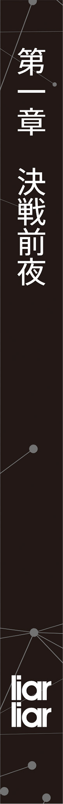

本電子書籍を示すサムネイルなどのイメージ画像は、再ダウンロード時に予告なく変更される場合があります。
本電子書籍は縦書きでレイアウトされています。
また、ご覧になるリーディングシステムにより、表示の差が認められることがあります。
＃＃
期末総力戦サドンデスルール《リミテッド》最終日──。
「「…………」」
零番区《
（最後の《
そんな俺の脳裏を改めて
零番区《区域大捕物》。
「……ねえ、
そこで、正面に立つ
「正直に言うと、僕は驚いてる。
「そりゃどうも」
「褒めてるわけじゃないんだけどね。……でも」
淡々と紡がれていく言葉と共に、すっと細められた漆黒の瞳が
「ここまでするってことは……君にも、覚悟があるってことかな？ 僕の信念と張り合うだけの願いが見つかった、ってことかな？」
彼が発したのは、いつかのそれと似たような問いだ。俺に覚悟はあるのか
あの時は答えることができなかった命題に──俺は、迷いなく「ああ」と断言する。
「少なくとも、引き下がれない理由なら見つかった」
「……充分だよ」
一瞬だけ驚いたような顔をしてから、それでも
こうして《リミテッド》を
時間は、ちょうど一日前に遡る──。

＃
『──報告します、ご主人様。五番区の《
「あ、ああ。……どうだった？」
『無事に成功いたしました。褒めてください、ご主人様』
「っ……！」
端末の向こうから聞こえてきたわずかに誇らしげな声に、俺はぐっと
……二月十七日、金曜日。
期末総力戦サドンデスルール《リミテッド》第16ラウンド終了直後。
もちろんそれは、単に彼女の声が聞きたかったとかそういう話じゃない。……聞きたかったこと自体は否定しないが、それだけが理由じゃない。この《リミテッド》では、各ラウンドにおいて
「いや、言われなくても褒めまくるって……！」
そんな目的が無事に達成された
「〝五番区《ダブルシーカー》実施中に【探偵】陣営の
『……？ つまりご主人様は、この計画が失敗すると思っていたのですか？』
「え？ ああいや、そういうわけじゃない。相当な
『なるほど。……それは確かに、とても
涼しげな声にふわりとした笑みを含ませながらそんなことを言ってくれる姫路。
彼女が担当していた作戦というのは、要するにそういうことだ──
故に、決戦へ移る前にどうしても《シナリオライター》を黙らせる必要があって。
それを
『す、
そこで端末の向こうから聞こえてきたのは、同じく当の作戦に参加してくれていた泉夜空の声だ。
『わたし、わたしずっと近くで見ていたんですけど、何が起こっているのか全然分かりませんでした！ 気が付いたら越智さんの端末に侵入していて、あっという間にシナリオの
「その辺はメイド全般じゃなくて姫路が凄いだけかもしれないけど……とにかく、泉もありがとな。お前との合流が遅れてたらさすがの姫路でも間に合わなかった」
『い、いえいえいえ！ わたしなんて、最初はずっと走り続けて
「…………」
『……ご主人様を困らせるのはお
『!! ほ、本当ですか
声にならない歓喜を
その辺りで、端末の向こうの
『このような確認をすること自体が失礼にあたる気もしてしまうのですが……四番区《バックドラフト》の方も無事に勝利した、という認識でよろしいでしょうか？』
「ああ、おかげさまでな」
九割の期待と一割の不安で構成された問い掛けに対し、俺は一つ
「
『良かったです。ということは、
「間に合ってくれた。……っていうか、
言いながら視線を持ち上げて、少し離れたところに立っている彩園寺をちらりと
四番区《区域大捕物》──《バックドラフト》。つい数分前まで行われていた疑似《
「ん……」
けれど、何はともあれ俺たち【怪盗】陣営は四番区《バックドラフト》に勝利して。
姫路もまた五番区《ダブルシーカー》の中で達成困難な目標を果たしてくれて。
「要するに、これで準備が整ったわけだ。泉夜空からラスボスを奪った
『はい、そうですね。
「……だな」
遠慮がちに紡がれる言葉に短く同意を返す。そう──四番区の《区域大捕物》に勝利したのは必要な〝祝福〟を確保するためだし、五番区で《シナリオライター》に干渉したのは今後の計画を見抜かれないようにするため。どちらも必須の過程ではあるが、これで終わりというわけじゃない。ようやくスタートラインに立てた、というだけの話だ。
『では……時間もありませんので、報告はこのくらいにしておきます』
俺がそこまで思考を巡らせた辺りで、端末越しに涼しげな声が
『わたしは当初の想定通り、第17ラウンドからは一番区の《
「分かった。気を付けてな、
『もちろんです、ご主人様。わたしは７ツ星の専属メイドですので、うっかりやられてご主人様の作戦を台無しにするような
くすっと笑みを
──と、
「終わったか、
そこへ声を掛けてきたのは、相変わらずの
「その表情を見る限り大きな問題はなさそうだが……首尾は？」
「上々だ。ま、姫路に限って失敗なんか有り得ないって」
右手に端末を持ったまま小さく肩を
ちなみに、榎本はラスボス絡みの
当の榎本は「ふむ……」と静かに言葉を継いだ。
「つまり、少なくとも門前払いだけは避けられたというわけか。ならば僕たちもこの先の行動を決めなければならないが……驚くべきことに、次の第17ラウンドが始まるまで十五分を切っている。
「は、はい。そうですよね……むむむ」
榎本の発言を肯定しながら会話に入ってきたのは、英明学園の一年生にして早くも５ツ星に至っている真面目で
「現時点で《リミテッド》の選択可能エリアとして残っているのは
「まあな。
「榎本ではなく榎本先輩だが、どうした
「《略奪品》の獲得とかＡＰ稼ぎも大事ではあるけど、俺の記憶が確かならもっと重要なことがあるはずだ。だって、今の越智が根城にしてる零番区って……」
「これまで一度も《区域大捕物》が成立していない区画──だな。過去の事例が一つもないため、圧倒的に情報が足りていない。戦略を立てるだけでも極めて困難だろう」
「……だよな。やっぱり、それが一番の問題か」
苦い顔をする榎本の返答を聞きながら、俺は小さく下唇を
「作戦会議は今日の夜にでもやるとして……今のところ、零番区の《区域大捕物》について分かってるのは全体に公開されてる概要部分だけだもんな。これじゃイメージも
「そうだな。……だが、どうするつもりだ篠原？ 事情を説明すれば零番区に特攻してくれる協力者も見つかるかもしれないが、当の《区域大捕物》で負ければほぼ確実に〝脱落級〟の呪いを受け取る羽目になる。加えて、越智
「まあ、そうなんだよな……だから、欲を言えばここは〝６ツ星クラスの協力者〟が欲しい
「──やあやあ篠原、どうやら今回もまたボクの出番みたいだね？」
と、その時。
俺の発言を乗っ取るような形で〝待っていました〟とばかりに名乗りを上げたのは、十五番区
「話は聞かせてもらったよ。６ツ星の頼りになる先輩プレイヤーにどうしても零番区《区域大捕物》の偵察に行ってもらいたいと、君はそう言っているわけだよね？」
「あ、ああ、そうだけど……」
「ふっ……何だよ、水臭い話じゃないか！ それなら明らかにボクが適任だろう？
「……へえ？ そりゃ助かるけど、いいのかよ。ルールもろくに分からないまま勝算も作戦もなしで突っ込むんだから、どう考えても負け戦だぞ？」
「ああ、もちろん構わないよ」
俺の放った当然の疑問を受けて、
「こう見えてボクは、
「素直だな」
「それがボクの美徳だからね。それに、何も
「……前言撤回、やっぱり素直じゃなかったな」
自分に
「っと……」
結川との話がついた辺りで、俺は改めて端末に視線を落とす。……《リミテッド》第17ラウンドの本番期間が始まるまで約十分。四番区に
と、いうわけで。
「それじゃあ、ここは一旦解散だ。今日の最終ラウンドが終わったらもう一回集まって本格的な作戦会議をしよう──それまで健闘を祈ってるよ、一人残らずな」
その場にいる仲間たちの顔をぐるりと見渡してから、俺は
♭♭
期末総力戦サドンデスルール《リミテッド》４日目──第17～18ラウンド概況。
一番区《タスクスイッチ》：両ラウンド共に【怪盗】陣営の勝利。
二番区《リーサルチェイン》：両ラウンド共に【怪盗】陣営の勝利。
第17ラウンドの終了時点では【怪盗】陣営の合計生存者数が２１０９人、対する【探偵】陣営が２０３３人と、２日ぶりに【怪盗】が人数的な優勢を取り返す形になった。
ただし、続く第18ラウンドでは
結果、４日目終了時点の生存者は【怪盗】が７２８人、対する【探偵】が１２９３人。
【探偵】陣営による再逆転が発生したところで、
＃
「「……あ」」
二月十七日夕刻、すなわち《リミテッド》第18ラウンドの終了直後。
直前に選択した《区域大捕物》の都合で珍しく単独行動になっていた俺は、これから行われる〝作戦会議〟に参加するべく夕闇に沈む
そうして昇降口から校舎内へ足を踏み入れた刹那、ばったり出くわしたのは
「よう、泉。早いな」
「……当たり前じゃないっすか。泉、
やや不満そうに唇を
「《アルビオン》の連中をまとめて持っていってくれたんだから戦果としては充分すぎるくらいだっての。
「う……な、何すかそれ？ よわよわ先輩が急に泉のこと褒めるなんて、普通に下心しか感じないっす。というか、よく考えたら
「……あのな」
萌え袖の右手を口元へ
と、俺がそんなことを考えながら人差し指で
「ん……」
目の前の泉小夜が不意に俺から視線を切って、辺りをきょろきょろと
そうして、
「ありがとうございます、っす。……ホントは、心の底から感謝してるんで」
「──────」
照れたような感情が端々に見え隠れする感謝の言葉。対する俺が一瞬だけ息を
「……いや、何だあれ」
その後、どうにか紡いだ突っ込みの声が動揺で裏返っていたことは秘密にしておこう。
作戦会議を行う
もちろん場所なんかどこでも構わないのだが、昨日の夜に行った《バックドラフト》絡みの打ち合わせと違ってそれなりの規模になることもあり、俺の家やら生徒会室ではさすがに少々手狭になってしまう。かと言って公共の場で話し合うわけにもいかないため、
俺が教室に
「では──参加予定のプレイヤーが全員
「ああ、頼む」
さらりと白銀の髪を揺らしながら立ち上がった
「
涼しげな声音でそう言ってから自身の端末をそっと教卓にセットする姫路。瞬間、彼女の背後にある壁（黒板にもホワイドボードにも投影用スクリーンにもなる万能の壁だ）にとある映像、もとい文字列がずらりと表示される。
澄んだ
「こちらは期末総力戦の現状を示すシステムメッセージです。ご
「は、はい！ そうですよね、
そこで、
「第16ラウンドの一番区と四番区、それに第17ラウンドの一番区と二番区でも大きな勝利を収めていますから、いかに優勢だった【探偵】陣営と言えども〝呪い〟が
「〝先輩方〟だけでなく水上様も間違いなくＭＶＰの一人ですが……いえ、今は置いておきましょう。問題はそこではなく、続く第18ラウンドでの不可解な出来事です」
白手袋を
教室内が神妙な空気で満たされるのを待ってから、姫路は涼しげな声音で続けた。
「第18ラウンド──【探偵】陣営の
「うんうん、普通にヤバいよね。……でもさ、ゆきりん」
大多数のプレイヤーが深刻に押し黙る中、気にせず声を上げたのは６ツ星のギャルＪＫこと
「ウチ、ちょっと気になってたんだけど……
「？ ええと……それは、どのような意味でしょうか？」
「だって《リミテッド》はどんどんエリアが少なくなっていくんだから、最終的には
「いいや、それは違うだろう」
と──そこで浅宮に答えを返したのは、彼女の隣に座る
「例外的なルール故に七瀬が知らなくとも無理はないが……《リミテッド》が最終日に突入した場合、連結ラウンドという特殊な処理が適用されることになる」
「れんけつらうんど？」
「ああ、お祭り好きの《ライブラ》が採用した公式ルールだそうだ。《リミテッド》最終日──つまり明日の第19から第21ラウンドは、全て準備期間が廃止され〝本番期間のみ〟で構成される。移動のタイミングが存在しないため、エリアの選択が発生するのは朝だけだ。故に、たとえば一番区《タスクスイッチ》を選択した場合、朝九時からエリアが消滅する午後一時までぶっ続けで同じ《
「はぇ……そうなんだ。じゃあ、一番区とか二番区で勝った人も〝生存者〟扱いなの？」
「正確には〝勝った〟ではなく〝脱落しなかった〟というのが
「はい。最後に選択していたエリアの種類に応じて、最終的な計算に多少の倍率が掛かります。勝利陣営、および勝利学区を一つに決めるための処置ですね」
言いながら
【期末総力戦サドンデスルール《リミテッド》──最終プレイヤー数算出倍率】
【二番区選択の場合：〝生存者数×１〟でカウント】
【一番区選択の場合：〝生存者数×５〟でカウント】
【
「──この通り、比重として大きいのは確かに零番区の勝敗なのですが、他の《区域大捕物》も軽視はできません。ですので、強引に〝数〟の優位を取りに来たのでしょう」
「そっかそっか、なるほどね……うん！ ありがとゆきりん、カンペキ理解！」
「……前半の説明はほとんど僕がしたはずだが？」
「なになに？
「…………」
「え、ちょ……もう、冗談なんだから黙んないでよ。……進司も、ありがと」
照れたような声音で礼を言う
相変わらずの仲良しカップルを横目に見ながら、俺は静かに思考を巡らせる。
（まあ、結局は
──そう。
ラスボス化した越智を期末総力戦から排除する、という
が、まあそれはともかくだ。
「以上が第18ラウンドまでの概況、および最終日における特殊ルールの全貌です」
澄み切った声音でそんな言葉を口にしながら、教室前方に立つ
「今の説明にもあった通り、
「無論だよ、レディ。あとは全てボクに任せてくれたまえ」
姫路からのパスを受けて優雅に立ち上がる影が一つ。
「さて──」
そうして教壇に立った結川は、相変わらずニヒルな表情でこんな第一声を口にした。
「どうも、大規模《
「「「…………」」」
「ふっ……こんなに大勢から熱の籠もった視線で見つめられるとさすがのボクでも照れちゃうな。緊張を
「結川様。時間がありませんので、なるべく手短にお願いします」
「──……手厳しいね、レディ。まあそういうことなら仕方ないかな」
涼しげな、を通り越して冷めきった表情の姫路に諭され、渋々ながら肩を
それから彼は、とんっ……と教卓に両手を突きつつ改めて切り出した。
「それじゃあ、リクエスト通り本題に入ろう──みんなも知っての通り、ボクたち学園の厳選されたメンバーは第18ラウンドで零番区に突撃してきた。いわば明日のための偵察部隊、のようなものだね。結果は惜しくも敗北……ギリギリもギリギリ、ロスタイム後のＰＫ戦で負けたくらいの僅差だったんだけど、とはいえ有益な情報は手に入れた」
「……そう、なんですか？ 結川先輩たちは三十分も
「うぐっ！ ま、まあ見方によってはそうなるかもしれないけど、大事なのは時間じゃなくて密度なんだよレディ。分かるかい？ いいや、もちろん分かるはずだとも」
「あ、ご、ごめんなさい結川先輩！ 私、つい知ったような口を……！」
たらりと冷や汗を流しながら必死の弁明をかます
（少なくとも、何の情報もないってことはないはずだ……頼むぞ、結川！）
壇上に立つ《
そんな俺の内心を知ってか知らずか、結川は小さく首を振ってから言葉を継いだ。
「とにかく……ボクたち学園は、明日の最終決戦に先駆けて重要な観察をしてきた。
前髪に触れると同時にキラっと白い歯を
その瞬間、彼の背後に大きく表示されたのは《ＬＲ》──零番区《区域大捕物》のルール
「じゃあ、ひとまずこれを読んでみて欲しいんだけど……」
そんな俺たちを
結川
「このルール
＃
【期末総力戦サドンデスルール《リミテッド》──零番区《ＬＲ（
【《ＬＲ》はルール追加型のケイドロである。以下に示すルールは〝前提ルール〟と呼称し、本《区域大捕物》の開始時点から適用されている根幹部分とみなす】
【《ＬＲ》では、ラウンド本番期間への移行と同時に、期末総力戦における〝探偵〟および〝怪盗〟陣営に対して〝鬼〟または〝子〟の役割が与えられる（本《区域大捕物》において〝探偵〟および〝怪盗〟の呼称は単なるチーム名として扱われる）。
所属陣営が〝鬼〟の役割を持つ限り、全てのプレイヤーは〝子〟を戦闘不能（後述）にすることで、該当プレイヤーを
所属陣営が〝子〟の役割を持つ限り、全てのプレイヤーは〝鬼〟を戦闘不能にすることで、該当プレイヤーを〝10分間の行動停止状態〟とすることができる】
【ここで《ＬＲ》唯一の勝利条件は、相手陣営のプレイヤー全員を牢屋に入れること。
ただし、前述の通り《ＬＲ》はルール追加型の《
【《ＬＲ》の実施期間中、
【通常の場合、拡張ルールは使用することで《ＬＲ》全体に、つまり両陣営に等しく影響を及ぼす。そのため所持している拡張ルールを適用するか、あるいは獲得したうえで有効化しない（握り潰す）かは自由に決めてよい】
【ただし《ＬＲ》には７つだけ〝特権ルール〟が存在する。特権ルールは通常の拡張ルールと異なり、使用した陣営にのみ一方的に恩恵をもたらす強力なルールである。
特権ルールを適用する際は通常の拡張ルールを同時に選択する必要があり、このとき端末上には〝後者の拡張ルール〟が適用済みとして表示される（実際には特権ルールの方のみが適用済み）。すなわち特権ルールは密かに《ＬＲ》へと組み込まれる。
便宜的に特権ルールの名称には◆を、その他の拡張ルールには◇を付記する】
【全ての拡張ルールは、適用されたその瞬間から《ＬＲ》に変化をもたらす。
ただし相手陣営が何らかの拡張ルールを適用した場合、各ルールにつき５分間だけ〝ダウト〟を宣言する猶予が与えられる。これは特権ルールの〝
・ダウト成功（宣言対象が特権ルール）：対象の特権ルールを棄却する。
・ダウト失敗（宣言対象が特権ルールでない）：陣営全体が10分間の行動停止となる】
【《ＬＲ》における戦闘およびコンテナの破壊には〝バレット〟という武器を用いる。
基本バレットは
・
・
・
【これらのバレットは、各陣営からの《ＬＲ》初期参加人数に応じて装備できる数が変更される（少数精鋭ルール）。参加人数が１人ならバレット３種全てをデメリットなしで
【《ＬＲ》では、各プレイヤーおよびコンテナに固有の〝
ここで、プレイヤーの最大ＨＰは《探偵／怪盗ランク》と同値であり、コンテナの最大ＨＰは封入されている拡張ルールによって異なるものとする】
「……む、むむ……？」
全員が内容を確認し終えた辺りで
「あの……すみません、
「何だい、レディ？ ボクくらいの有名人になると疑われたり信用を失ったりするのにはすっかり慣れているからね。気にせず続けてくれたまえ」
「あ、はい、ありがとうございます。では──《ＬＲ》のルールというのは、これで全部なんでしょうか？ その、これでは成立していないような気がするんですが……」
「うんうん、そうだよね摩理ちゃん♪」
そこで水上の言葉に追随したのは、俺の斜め前の席に座っていた
「これじゃ《ＬＲ》は《区域大捕物》として成立してない……っていうか、どう見てもルールが足りてないもん♪ やっぱり何か間違ってるんじゃないのかな？」
──そう、そうだ。
秋月の放った疑問は、この教室内にいるプレイヤーの総意と言ってもいいくらいの
「だって……絶対にどっちかの陣営しか勝てないもんな、これじゃ」
水上と秋月の意見を補強するように、少し遅れて俺も口を開くことにする。
「いや、まあ何となくのイメージはできる──ルール追加型のサバイバルゲーム風ケイドロ、ってところだろ？ プレイヤーは〝鬼〟と〝子〟の役割に分かれてサバゲーみたいなことをする。この役割ってのは
「ですね。加えて、零番区の
「そうだな。だから、まあその辺はいいんだけど……」
そこで確認したのはルール
……普通なら。
「このルールは普通じゃないんだよ──〝鬼〟が〝子〟を戦闘不能にすれば〝子〟が
「まあそうなるね。だけど
「いや、何も〝子〟の方に勝ち筋をくれって言ってるわけじゃない。そうじゃなくて、勝利条件が〝鬼〟の方にしかないなら絶対に【〝鬼〟と〝子〟がどうやって交代するのかを説明するルール】が必要だろって話だ。時間制か条件制かはともかく、何かしらの方法で役割を交換できない限り〝子〟は最高でも逃げ切りしか狙えない。……っていうのが、賢いアンタが早々に気付いたっていう《ＬＲ》のおかしな点じゃないか？」
「ふっ──あぁ、素晴らしい。さすがはボクのライバルだね、７ツ星」
全員の疑問を代弁するべく放った俺の言葉に対し、
「篠原の指摘通りだよ。
「なくなった？ ……まさか」
「そう、
「…………」
（【敗北の女神】の効果を考えれば、俺たち【怪盗】陣営は確実に〝子〟スタート……だから、勝つためには絶対に【◇攻守交替】を適用しなきゃいけないのか）
確かにそれはなかなか重い十字架だ。特定の拡張ルールを組み込まない限りそもそも勝利条件が存在しない《
「……ちなみに、結川」
嘆息交じりにそんなことを考えながら、俺は再び教室前方へと視線を向け直した。
「バレットとかコンテナってのは、普通にサバゲーみたいな内容を想像していいのか？」
「基本的にはね。ただ、きっと
「……ファンタジー？ サバゲーなのにか？」
「そうさ。
「ああ、なるほど……それで余計にコンテナが壊しやすくなって、色んなルールが追加されていって、この《区域大捕物》自体がガンガン加速していくわけか」
「さすがに理解が早いね、篠原」
教室内の明かりをキラキラと反射する金髪をふわりと払いながら優雅に
「《ＬＲ》はそういう《区域大捕物》だから、基本的にはとにかく拡張ルールを集めながら優位を取っていくことになる。中でも特権ルールの入ったコンテナは
「特権ルール……やっぱり、そいつが
言って、俺は静かに右手を口元へ遣る。零番区《ＬＲ》における拡張ルールは〝適用された瞬間から両陣営に影響を及ぼす〟
「どんな種類があるんだ？」
「よく
俺の質問に対し、結川は気取った仕草でパチンと指を鳴らしてみせた。すると直後、不完全なルール
【零番区《ＬＲ》特権ルール一覧（
【◆追加動員】──《
【◆ユニオン】──第４のバレット〝
【◆弾幕妨害】──ルールを適用する度に相手陣営のバレット使用を一時封印する。
【◆財宝探索】──
【◆弱者必勝】──自身が〝最も低い等級〟なら相手陣営の行動を大幅に制限できる。
【◆傍若無人】──制限系の拡張ルールを全て無視して行動できる。
【◆？？？？】──隠しルール。出現条件、および効果不明。必勝級との
「「「ん……」」」
全体公開されているルール
「っていうか……」
と、そこで再びポツリと声を
「この特権ルールって、普通には使えないんだよね？ 通常の拡張ルールと一緒に使うとか、ダウトがどうとか色々書いてあったケド……つまりどゆこと、
「言葉通り、他のルールで覆い隠さなければならないという意味だ」
「たとえば僕たちが特権ルール【◆追加動員】を手に入れていたとして、これを単独で使うことはできない。必ず何かしらの拡張ルール──【◇
「？？ そんなの、どうやってダウト宣言とかするわけ？ 見抜けなくない？」
「隠れ蓑になるルール次第、だろうな。今の例で言えば、端末に表示された【◇
「なーる……ってなると、やっぱり普通の拡張ルールと違ってかなり難しいんだね」
「ああ。無論、適用できれば一瞬で優位に立てるほど強力な
教室前方の壁に表示された
要するに、基本的には拡張ルールで《
七つだけある特権ルールは特に強力だが、使うのに多少
（これで《ＬＲ》の内容については大体イメージできた……だから、あとは）
そこまで思考を巡らせた辺りで、俺はもう一度顔を持ち上げることにした。次いで教卓の辺りでいつの間にかモデル立ちを決めている
「なあ結川、
「うん？ ああ、そうだね。戦法というか、何というか……」
「？」
「……怒らないで聞いてくれるかな、７ツ星？」
「え。まあ、内容次第だけど……何だよ、とんでもない大失態でもやらかしたのか？」
「いいや、学園のリーダーにして６ツ星の大英雄ことボクに限ってそんなことは有り得ない。有り得ないんだけど、きっとボクたちは越智
「──は？」
結川の話に一瞬だけ思考がショートする。
ＡＰというのは、この《リミテッド》においてアビリティを使う度に減少する〝変動型ステータス〟のことだ。これが無尽蔵ということは、言ってしまえば一切の
「そんな
頭から否定しかけて、そこで不意に思い当たる俺。
たった今整理した通り、ＡＰとは単なる数字ではなく変動型のステータスだ。そして
中でも【モードＡ】で解禁された【割れた鏡】は、あらゆる弱体化を反転する冥星だ。
ＡＰが変動型ステータスという扱いなら、アビリティ使用に伴うＡＰ減少はステータスの低下、すなわち
（だから、どんなアビリティを使ってもＡＰが減るどころか〝増える〟……最終的に【割れた鏡】自身の消費分でプラマイゼロ、ってわけか。何だよ、それ……！）
越智との直接対決がなかったため発想が及んでいなかった暴力的な事実に思わずぎゅっと拳を握る俺。今の越智は相当数の《調査道具》を持っているはずだ。それらを〝ＡＰ無限〟で振るわれてしまえば、確かに戦略がどうとかいう以前の問題になる。
「っていうか……だとしたら、よく三十分も耐えたな？」
先ほどの発言を思い出しながら、ふと気になって尋ねてみる。
「そんなの、下手したら序盤の襲撃で全滅しちまいそうだけど……」
「？ もちろん、ボク自身は
「…………」
「……あ、あれぇ、おかしいな。あえて格好悪いエピソードを話すことでボクの株が急上昇する鉄板のネタだったんだけど……こほん」
俺の反応（ジト目）に
そうして彼は、今の会話をなかったことにすべく、ビシッと俺に指を突き付けてきた。
「というわけで
「ん……」
「そして〝少数精鋭ルール〟を踏まえると、あまり大勢で挑むのはお勧めしない。第18ラウンドと同じ布陣なら【探偵】陣営は
指先でピンッと前髪を払いながら結川はそんな私見を告げる。……謎のドヤ顔はともかく、提案としては妥当なものだ。陣営の初期参加メンバーが六人以上になると、最初から無駄なデメリットを背負う羽目になってしまう。
（実際、連結ラウンドの仕様を考えれば一番区と二番区の戦力も削れないからな。
右手をそっと口元へ
《
「……よし」
そこまで考えたところで、俺は小さく顔を持ち上げながらポツリとそんな言葉を口にした。途端、教室内に集った歴戦のプレイヤーたちが
緊張と不安と好奇と、圧倒的な〝期待〟に満ちた
それらをぐるりと見渡しながら、俺は落ち着いた口調で切り出すことにした。
「細かい戦略は一晩使ってじっくり練るとして……まずは、エリアごとの割り振りだけでも決めておきたい。明日、零番区の《区域大捕物》に参加するメンバーは──……」
＃
その日の夜。
（ん……これが、あいつの言ってた〝ミニゲーム〟ってやつか）
現在スクリーンに投影されているのは、
（さすがに無意味ってことはないだろうけど……）
前後の映像に切り替えながら〝ミニゲーム〟とやらの意図を
──と、そこへ。
「こんこん」
「！」
「お邪魔します、
「あ、ああ……悪い、ありがとな」
言いながら俺はソファの左隣を空ける。すると羽衣は、
そうして彼女は、
「本当なら
「我慢ってことはないだろ。せっかく来てくれたんだ、嬉しいに決まってる」
「！ なんと……それは、もしかして愛の告白でしょうか？ どうしましょう、雪や
「そこまでは言ってないんだけどな……」
両手を
「──ふふっ。今夜は寝られそうですか、篠原さん？」
そこで、同じく紅茶を飲んでいた羽衣が可憐な声音でそう切り出した。
「
「……まあ、さすがに仮眠くらいはするけど。でも、無策で挑んだって勝てないだろ」
「む……やっぱり、篠原さんは強情です。では、わたしもお手伝いしましょう」
「いいのか？
「ぐっすり寝ています。……それに、わたしは雪や
冗談っぽく笑みを浮かべる
「ちなみに篠原さん、今は何を見ているのでしょうか？」
「ああ、
「ふむふむ」
言って、さらりと金糸を揺らしながらじっとスクリーンに視線を向ける羽衣。彼女に倣って俺も
そして──羽衣の合流から十五分ほどが経過した頃だろうか。
「「ぁ……」」
同時に〝とあること〟に気付いた俺と彼女は、至近距離で互いの顔を
「なあ羽衣。このミニゲームって、結川以外のプレイヤーもやってるよな？ いや、何なら牢屋に入れられたやつは全員挑んでる。けど……内容が違う」
「はい。牢屋は東西南北の四
「そうだな。でも、それは条件が足りてないだけなんだとしたらどうだ？ 《ＬＲ》はルール追加型の《
「なら、特定の拡張ルールを適用してから全てのミニゲームをクリアすれば……？」
わくわくとした表情で言葉を紡ぐ羽衣と、思わず右手を口元へ持っていく俺。
ようやく取っ掛かりを
＃＃
そんなこんなで長い長い夜が明けて──二月十八日、土曜日。
期末総力戦サドンデスルール《リミテッド》最終日の朝。
時刻はもうすぐ午前八時半になろうかというところだ。準備期間が存在しない《リミテッド》最終日では、九時ちょうどから全ての《区域大捕物》が同時に始動する。エリア選択不能なんていう凡ミスで脱落してしまわないよう少し早めに集合していた。
「んっ……」
「……？ 眠そうだな、
「へ？ あ、いえ、その……す、すみません、篠原先輩！」
すぐ近くに立っていた黒髪の後輩少女が小さく目を
「えっと、ルールの復習や立ち回りなど、色々考えていたらなかなか眠れなくなってしまって……もちろん先輩方に迷惑はお掛けしませんので、ご安心ください！」
「あ、ああ。って言っても、別にそこまで気負うことはないっていうか……」
「いえ。せっかく
ぎゅ、っと胸元で両手を握り締めながら大きな瞳の中でメラメラと気合いの炎を燃やしてみせる
と──そこへ、
「篠原、少しいいか」
横合いから唐突に不愛想な声が投げ掛けられた。振り返ってみれば、そこにいたのは
常に冷静さを失わない彼は、平常通りの表情で腕を組みながら淡々と言葉を継ぐ。
「
「！ おお……何だそれ、さすがだな榎本。そいつはめちゃくちゃ助かる」
「ふむ。肝心要の作戦構築を後輩に任せているのだから、このくらいの雑用は僕がこなさなければ立場がなくなってしまうのでな。詳細は端末から確認してくれ」
それだけ言ってくるりと背を向ける榎本。相方である
「なるほど……これは、確かに貴重なデータですね」
そして、榎本が提供してくれた《ＬＲ》関連のデータを一通り眺めてポツリとそんな声を
「今回、ルール保管箱であるコンテナの配置は全てわたしの《略奪品》で調査済み──ということにして実際には《カンパニー》のハッキングで位置を特定する予定ですが、この情報が加われば探索の精度が一気に跳ね上がります。ですよね、
『うぃ～、そだねん。っていうか、形式的にも全く問題なかったからもうシステムに組み込んじゃった。さっすが英明生徒会長、
『ふぁ……ねむねむ。おねえちゃん、まだげーむはじまらない……？ わたし、もうちょっとねてたいかも……やみのせかいに、いかなきゃ…………むにゃにゃ』
『にひひ、大丈夫だよん。ツムツムは昨日のシステム構築で充分お仕事してくれたし、何ならずっと寝てても問題なし！ おねーさんの膝の上を占拠する権利をあげよう！』
『うん……でも、おにいちゃんたちのかつやくみたいから…………ふにゅうにゅ』
いつもいつでも能天気な
そう──言わずもがな、俺たち【怪盗】陣営から《ＬＲ》に参加する三人目のメンバーは
（
「──待て、
と。
俺がそこまで思考を巡らせた辺りで、不意に榎本から〝待った〟が掛けられた。無言で視線を持ち上げてみれば、彼が普段通りの
すなわち、
「昨日は
「英明学園高等部二年、１ツ星の転入生こと
「そ、そうですよ、篠原先輩！ 私も、きちんと挨拶をしたいので……！」
榎本に追従するような形で小さく一歩進み出て、俺と不審者少女に遠慮がちな声を投げ掛けてくる水上。……まあ、二人の意見ももっともだった。朱羽莉奈は期末総力戦の真っ最中に英明学園へ転入してきた謎の新メンバー。それだけならともかく、１ツ星にも関わらず《ＬＲ》の攻略チームに選ばれているのだから意味が分からなくて当然だ。
だからこそ俺は、ちらりと彼女に視線を向けて尋ねる。
「いいか、朱羽？」
「──ええ、もちろん。今ならまだ
俺の呼び掛けに短くそう答えて。
直後、彼女はすっと持ち上げた右手で静かにフードを脱ぎ捨ててみせた──途端にふわりと魔法のように広がる
……元７ツ星・
目を真ん丸にする
「今の今まで
「──……その、事情というのは？」
「今はまだ言えない。でも、
「ああ」
彩園寺の説明を横から引き継ぐ俺。
「実は、
「…………」
俺の説明を聞いた榎本は
「大丈夫なのか？」
「え？ 大丈夫って……だから、裏切ったりは──」
「そのようなことは
「……そりゃ、どうも」
「加えて、朱羽莉奈の正体が彩園寺更紗なのであれば実力に関しても問題などあるはずがない。僕が気にしているのは隠匿すべき〝
「あ、ああ……何だ、そういうことか」
さすがの着眼点と話の早さに驚きつつも何度か
「心配してくれてありがとう。でも、大丈夫よ。さっきも言った通り、私が〝嘘〟をつかなきゃいけないのはこの《決闘》が最後だから……だから、バレても大丈夫なの」
「……？ ふむ、ならばいいが」
曖昧な
そんな風に二人が〝
（この《
当の彩園寺が
実際、彼女の言う通りではあった。期末総力戦サドンデスルール《リミテッド》──最終日連結ラウンド。もうすぐ始まる
（誰も傷付かない結末を迎えるためには勝つしかない……そんなことは分かってる。だけどそれは越智にとっても同じことで、結局はどっちかが必ず負け──）
「……全く。何黙ってるのよ、
と。
そこで再び横合いから声が掛けられた。
「もしかして怖がってるの？ いつもより顔色が悪いように見えるけれど」
「ぅ……気のせいだろ、ただの考え事だ。そっちこそ怖くて震えてるんじゃないか？」
「あら、これが
くすっとフードの下で笑みを浮かべた彩園寺は、そのまま小さく一歩俺の方に足を踏み出してきた。続けて彼女は、パーの形に開いた右手をとんっと俺の胸に押し当てる。
「どう？」
「──……ったく、何だそれ」
常勝無敗の《女帝》がくれた天才的な〝鼓舞〟に対し、俺は
「よし──それじゃあ、最後に今日の作戦を再確認しておくか」
そうしてゆっくりと切り出した。
「零番区《ＬＲ》において、俺たちの最終目標は越智を倒すことだ。普通に脱落させたらとんでもない事態になっちまうけど、
「はい！ 頑張りましょう、先輩！」
「ああ。……だけど、
言いながら、俺は手元の端末を操作して
この中のとあるルールを
「もちろん、そこに
最終決戦へ赴くのに何の不安もない強力なメンバーを改めて見渡して……俺は、
「頼むぜ、みんな。正真正銘、これが最後の《決闘》だ──！」
出来るだけ不敵に口角を
＃
【期末総力戦サドンデスルール《リミテッド》──最終日第19～第21連結ラウンド】
【零番区《区域大捕物》──名称：《
【〝探偵〟陣営参加メンバー：越智春虎】
【〝怪盗〟陣営参加メンバー：榎本進司／
【勝利条件：相手陣営のプレイヤー全員を〝
【初期役割配分：〝鬼〟→〝探偵〟陣営。〝子〟→〝怪盗〟陣営】
【《区域大捕物》スタート】
──定刻、午前九時ちょうど。
参加者全員の端末から軽快なメロディが流れると共に零番区《ＬＲ》は幕を開けた。
この《区域大捕物》の
そして──非常に重要なことに、この《ＬＲ》では徐々にルールが追加されていく。
「ん……」
手元の端末から《ＬＲ》のメイン画面を
つまり俺たちが把握している〝現在の〟ルールは、味付けされる前のプレーンな状態。
時間が
（で、肝心の〝鬼〟はあっさり向こうに取られてると……まあ、この辺は予想通りか）
俺たちに与えられた役割である〝子〟の文字を眺めながらそっと嘆息を
と、そこへ。
「──ご主人様、並びに【怪盗】陣営の皆さま」
《
「たった今《
「はい！ ありがとうございます、白雪先輩！」
姫路の話を聞くや
「……？ ねえユキ、この真ん中の部分って……何かしら？」
俺の疑問を代弁するかのようなタイミングでそんな言葉を口にしたのは
「はい。こちらは〝封鎖区画〟とのことです、リナ様」
彩園寺からの質問を受けた姫路が澄ました表情で口を開く。
「《ＬＲ》は零番区の全域を使って執り行われる《区域大捕物》ですが、中央の一帯は侵入不可とされています。その名も封鎖区画──ただし、拡張ルールの一つである【◇新天地解禁】が適用されると誰でも自由に立ち入りできるようになる、と」
「ふぅん？ なるほど、そういうところも拡張ルールに依存するって感じなのね。それじゃあ、
「封鎖区画の中にもコンテナが分布しているため、ですね。現時点でアクセス可能な拡張ルールは全体の約半数でしょうか。ちなみに封鎖区画内の情報は別サーバーで管理されているようで、
とんっ、とさりげない仕草で右耳のイヤホンに触れながら答える
（えっと、それで……）
そんなことを考えながら、俺は改めて手元の地図を
「…………」
まだろくに拡張ルールも適用されていないフラットな段階だが──
（……【割れた鏡】）
内心でポツリと
そう、そうだ──越智
（これが、昨日の
別に
けれど、だからと言って〝どうしようもない〟という話じゃない。この《ＬＲ》はルール追加型のケイドロであり、
【名称：◇ＡＰ制限】
【効果：アビリティの
……いわゆる〝制限系〟に該当する強力な拡張ルール。
自陣営にのみ恩恵を与える特権ルールではなく通常の拡張ルールだが、とはいえ最初からＡＰが枯渇している【怪盗】陣営にとっては
ただし《ＬＲ》における拡張ルールの配置は基本ランダム。
「！ ……た、大変です、
そんなことを考えながら俺が改めて
「最初に取りに行くはずだった【◇ＡＰ制限】の拡張ルールですが……もう、越智先輩に取られた後みたいですっ！」
「な……」
水上の発言に絶句して、直後に彼女が差し出してきた端末画面へ視線を落とす俺。
先ほど全貌を把握したばかりの《ＬＲ》専用
（これって……）
『──にひひ、実は昨日のうちに突貫で作ってみたんだよん』
俺が首を
『まあ、プログラムの大部分を組んだのは加賀谷のおねーさんじゃなくて爆睡中のツムツムなんだけど～……各プレイヤーの座標情報とコンテナの
『むにゃ……えへへぇ』
『あ、ただし特権ルールが入ったコンテナだけは〝壊されても
（ありがとうございます加賀谷さん、それに
イヤホン越しに無言の感謝を
開幕から早々に大移動を始めている
俺たちが一番手に入れたくて、越智にとっては一番適用されたくない拡張ルール。
そんな
「──【割れた鏡】と【敗北の女神】の
微かな吐息と共にそっと俺の
顔を上げてみれば、いつの間にか近くにいた
「拡張ルールの配置が
「……ま、そうだよな。多分、初期位置のすぐ近くに
「《ＬＲ》の拡張ルールは手に入れてすぐ使ってもいいし、逆に最後まで遊ばせててもいいって仕様だ。前提ルールの中に〝相手の所持ルールを奪う〟なんてアクションは載ってないから、このまま
「そうでしょうね。だって、
「ああ。けど……」
当然ながら、そのくらいは予想の範囲内だ。
越智に確保された【◇ＡＰ制限】の〝強奪〟──それこそが最初のミッションになる。
「……行けるか、水上？」
「はい。もちろんです、
そこで俺が放った問い掛けに対し、指示が下るのを今か今かと待っていた
「私にしかできないお仕事ですから。絶対に、絶対に成功させてみせます……！」
「よし、頼む。……それと、もう一つ」
言いながら
「彩園寺、お前は例の作戦に移ってくれ。最後の最後に越智を
「そうね。ま、何かあったら連絡するわ。うっかりやられたりしないでよ、篠原？」
冗談交じりにそう言って、パーカーのフードを深く
そして、彼女と入れ替わりで近付いてくるアイコンが一つ。
「警戒してください、皆さま。……越智様が来ます」
ピンッと張り詰めた空気の中で紡がれる涼やかな声──
「……俺から離れるなよ、姫路」
「はい。承知しております、ご主人様」
事前の打ち合わせ通り、姫路を
そして──無限にも思える時が流れた、瞬間だった。
「ッ……！」
こつっ、と響いた足音に、俺はドクンと心臓を跳ねさせながら静かに視線をそちらへ向ける。……それは、予想通りの人物だった。無尽蔵のＡＰに物を言わせて荒れ狂うような襲撃をかましてくるわけでもなく、落ち着き払った優雅な足取りで俺たちの方へ近付いてくる少年。七番区
彼はそのままゆっくりこちらへ歩み寄ってきて、互いの顔が見える距離で足を止めた。
「「…………」」
痛いくらいの沈黙が流れる。
それは、俺も彼もきっと分かっているからだ──これが最終決戦なのだと。期末総力戦サドンデスルール《リミテッド》最終日、
「驚いたよ」
やがて切り出したのは
「いつの間にか、零番区の呪いが書き換えられてる……それだけならいい。だけど、僕はそれに気付けなかった。この《決闘》の未来が何も見えなくなった。
「まあな。だって、そうでもしなきゃラスボスは退場してくれないんだろ？」
ニヤリと口角を持ち上げる。……《リミテッド》の大半を費やして行った工作。それはひとまず成功したと言っていいだろう──が、そんなモノはあくまでこの舞台を整えるための事前準備に過ぎない。越智
それでも俺は、小さく肩を
「普通の戦闘じゃどうやったって勝てないから、先に何かしらのアイテムを
「そうかもしれない。だけどそれは、僕だって似たようなものだよ。
「……攫ったわけじゃなくて、自分から勝手に来たんだけどな」
「？ ああいや、別に緋呂斗のことを責めてるわけじゃない。ただ……何ていうか、ままならないなって思っただけだ」
どこか自嘲するような笑みを浮かべる越智。
「だってそうでしょ？ きっと、僕も緋呂斗も自分が〝悪〟だなんて思ってない。相手を害したいだなんて思ってない。だけどこれしか方法がなかったから、目的を果たすためにお互いの存在が邪魔だったから、こうしてぶつかっているだけだ」
「……ま、確かにそうかもな」
「うん。でも──それも、もうお
「ああ」
相変わらず落ち着いた声音ながら静かな闘志を
だから──だからこそ、
「《
俺たち【怪盗】陣営は──たった一人を取り残して、全速力でその場を逃げ出した。
♭
「っ……まだ、です!!」
期末総力戦サドンデスルール《リミテッド》──最終日連結ラウンド、開幕直後。
私、
──ちなみに。
この《
ただ、越智先輩の方は少数精鋭ルールの恩恵で
そんなの、ズルです。まともに戦って勝てるわけがありません。
（でも……一発当てるだけなら！）
それでも私は、先ほどの攻撃で
「……意外にしぶといね。それじゃあ──《
「！ っ……！」
続けざまに二つの《調査道具》が振るわれた瞬間、私は後ろに向かって駆け出していました。そんな私の足元に、好戦的な〝赤〟のエフェクトを
【
（
そんなことが誇らしくて、私は少しだけ口元を緩めてしまいます。
実は──昨日の作戦会議の段階で、
ただそのためには、越智先輩に多少なりともダメージを与える必要がありました。
単なる
よって、求められるのは充分なＨＰと、該当の《略奪品》を使うためのＡＰを兼ね備えたプレイヤー。それこそが私、水上摩理しかいなかったというわけです。
（──だから）
背後からの射撃音が
もちろん何らかの《調査道具》を使えば回避できるかもしれませんが……だとしても私には〝絶対に通せる！〟という自信がありました。
（越智先輩は全弾装填……拡張ルールが追加されれば
頭ではそう確信しつつも、少しだけドキドキしながら真っ赤なバレットを解き放って。
──直後、
【越智
「ん……？ ああ、当たっちゃったのか」
視線の先の越智先輩が意外そうに首を
「すぅ……」
それでも。
私には、ここでダラダラ生き延びるよりよっぽど重要な任務があるのでした。
「──《
右手に握った端末を真正面に突き出しながら声の限りに叫びます。
《
「私が
「……ああ、なるほどね。道理でやけに捨て身だと思ったよ」
私の宣言を受けて、小さく口元を緩めながら納得の声を
【〝怪盗〟陣営が拡張ルールを適用しました】
【名称：◇ＡＰ制限】
【効果：アビリティの
「ほっ……良かったぁ……」
そんな
思わずへなへなと座り込みそうになった──その瞬間、でした。
「ばんっ」
「え？ ……あ」
一生の不覚……いえ、気を抜いてしまったのですから当然と言えば当然ですが、真正面から攻撃されて今度こそＨＰを根こそぎ持っていかれてしまいました。
バレットを放った越智先輩の方は、穏やかな表情のまま首を横に振っています。
「やれやれ。
「……？ もしかして、迎撃されるのが分かっていたのに攻めてきたんですか？」
「言い訳っぽく聞こえるかもしれないけど、その通りだよ。何しろ、今の《ＬＲ》は正確に言えばケイドロじゃない──〝
「っ……ほ、本当ですか？ ただ強がりを言っているだけじゃ……」
「そう思いたいならそれでもいいけど。でも、まあとにかく──あと四人、だ」
（でも……）
去っていく越智先輩の背中を見送ってから、私は手元の端末に視線を落としました。
【
【プレイヤーは、現在地点から最も近い
小さな画面に表示されているのは二文からなる簡素なメッセージです。
この《
ただ、それでも。
「……計画通り、です」
思わず
そうして私は──篠原先輩の大胆な〝
＃
この《区域大捕物》におけるルール保管箱こと〝コンテナ〟は、
だからこそ、
「撃ちます──！」
……
交戦中の水上と別行動中の
適当に撃っているだけなので手応えは薄いが、それでも〝この辺りのどこか〟にあることは分かっているし、
「！ ……当たりました、コンテナ発見です」
そしてコンテナの露出と共にポップアップされた画面には、
【入手可能ルール：◇
【格納コンテナ──現在ＨＰ：48／50】
……との情報が表示されている。
「
早くもコンテナに攻撃を加えながらそんな言葉を口にしたのは
「仮に僕一人が現状の
「だな。さすがに三人いれば速攻で溶けていくけど……今は、まだ一人じゃ効率が悪い」
俺がそんな意見を付け加えている間にも、榎本による
「よし……拡張ルール獲得、だ」
所持ルール一覧に【◇
「……ん？」
と──まさしくその瞬間、目の前に新たな投影画面が展開された。それはここにいる俺たちではなく、今まさに
「！ ……水上様、無事に越智様へダメージを与えられたのですね」
「ああ、そうみたいだ。さすがっていうか何ていうか……それに、
「確かに、完璧ですね。ただ、それはそれとして……ご主人様、水上様に対する評価がやけに高くはないでしょうか？ 何かしらの加点が働いているような……」
【〝怪盗〟陣営が拡張ルールを適用しました──】
「……ふぅ」
《ＬＲ》に【◇ＡＰ制限】が適用された
と──俺がそこまで思考を巡らせた、その刹那。
「待たせたわね、
「！」
俺たちの前に姿を現したのは、とある作戦のために別行動をしていたパーカー姿の
よって、
「ジャストタイミングだ、彩園寺──ちょうど、火力が欲しかったところだから」
俺は、
【
【
【残り生存者：〝探偵〟陣営１名／〝怪盗〟陣営４名】
＃
彩園寺の合流からおよそ二十分後──。
零番区《ＬＲ》は、早くも開始時とは全く異なる様相を呈し始めていた。
大きかったのはやはり【◇ＡＰ制限】の適用だろう。無尽蔵のＡＰという最大最強の武器を失った
その結果、現在までに《ＬＲ》へ組み込まれた拡張ルールはこんなところだ。
【零番区《ＬＲ》適用済み拡張ルール一覧】
【◇
【◇ＡＰ制限】──効果：連続でのアビリティ使用に制約を加える。
【◇持ち込み武器】──効果：各種〝バレット強化〟のルールが牢屋内にも適用される。
【◇住宅侵入】──効果：家主のいない建物であれば自由に立ち入り可能となる。
適用済みの拡張ルールは全十一個。
各バレットの性能はじわじわと強化されており、たとえば
「ん……とりあえず、序盤の地固めとしてはこれくらいで充分だと思う。越智の方も順当に〝バレット強化〟のルールを増やしてくれてるみたいだしな」
「ふむ、それはそうだろう」
俺の発言を受けて、
「何しろ越智は、三種のバレット全てを
「そうね。だから普通に考えると、バレット強化系の拡張ルールなんて適用すればするだけ【探偵】側にとってのメリットになる──ようにしか見えない、のだけれど」
「はい」
そこで白銀の髪を
「既に戦闘不能になっている
「ああ。……ってわけで俺たちは、今から三手に分かれて行動する」
姫路の解説を引き継ぐような形で、俺は事前に決めていた作戦を──拡張ルール【◇ＡＰ制限】の強奪に続く〝第二のミッション〟を改めて共有しておくことにする。
「本当なら最初から手分けして動きたかったくらいだけど、バレットが弱いままだと逆に効率が悪くなっちまうからな。ま、これだけ性能が追加されてれば充分だろ」
「……ふぅん？ 私、ついさっきも拡張ルールが一つもない状態で単独行動させられていた気がするのだけれど……それも、あんな重要な作戦なのに」
「うっ……ほら、そこは《女帝》に対する信頼の表れだとでも思ってくれよ」
実際は〝そうせざるを得なかった〟だけだが、冗談めかして取り繕っておく。
「とにかく──ここでは、手分けして重要な拡張ルールを確保しておきたい。最優先はもちろん【◇攻守交替】になるはずだったんだけど……」
「……はい。現状、問題の【◇攻守交替】は
俺の言葉を補足するように
さらりと白銀の髪を揺らしながら、姫路が涼やかな声音で言葉を継いだ。
「《
「ん、それはありがたい話ね。越智に【◇新天地解禁】を持ち逃げされたらかなり面倒なことになっちゃうもの。それに……東方面へ行くなら【◆追加動員】の特権ルールもついでに狙えるんじゃないかしら？ 確か、あいつの初期位置近くにあったはず」
「そうですね。確かに、ここで【◆追加動員】を確保する意義は大きいです。望み薄だとは思っていましたが、念のため超強力な助っ人に声を掛けてありますので」
（超強力な
「あとは、
「ええ、特に異存はないわ。組み分けは元々の予定通り、あんたとユキが
「そうだな。特権ルールの方は危険度も重要度も大して変わらないから、とりあえず
「僕はどちらでも構わない。故に、ここは
事前に決まっていた部分が多いこともあり、スムーズに話を受け入れてくれる榎本。ここで俺と
──と、
「ん……？ どうした、彩園寺？」
そこで隣の彩園寺がじっと無言のまま自身の端末へ視線を落としているのに気付き、俺は動かそうとしていた足をぱたりと止めることにした。当の彩園寺はと言えば、フードで半分隠れた
「少しだけ、疑問だったのだけれど……
「──────」
……彼女が口にしたのは極めて妥当な懸念だ。
《ＬＲ》の仕様として、特権ルールは〝通常の拡張ルールだと偽って提示しなければならない〟というものがある。つまり、特権ルールは密かに適用されるんだ。端末上に示された情報と実際のルールとの間に明確な
「特権ルールは誰かに取られても
「ん……まあ、確かに。……どう思いますか、
彩園寺の懸念を解消すべく、俺は榎本の背中が既に小さくなっていることを確認してから右耳のイヤホンに指先を触れさせる。瞬間、彩園寺が──おそらく回答を又聞きする手間を省くためだろう──ちょこんと背伸びして甘えるように
思わずドクンと心臓が跳ねてしまったが、悟られないよう必死で耐えることにして。
『う～ん……多分、ほとんど、十中八九〝有り得ない〟とは思ってるよん？』
『確かにパーカーちゃんの言う通り〝特権ルールが獲得されたか
「はい、そんな仕様になってますね」
『うむ。で、おねーさんたちは
「……なるほどね。うん、それならいいわ」
そうして一言、
「っ……な、何ぼーっとしてるのよ
人差し指をこちらへ突き付けて、何かを
「……はいはい。分かってるよ、お嬢様」
対する俺は、同じく照れ隠し交じりの表情と共に小さく肩を
＃
【
【探偵／越智
【怪盗／
【怪盗／
【怪盗／篠原
【？？／？？？？：？？？？？？？？】
──【探偵】陣営との人数差を最大限に
それを実行するべく榎本および彩園寺の二人と別行動を開始した俺と姫路は、零番区の外周を走るタクシーに乗り込んで早々にエリア東の一帯に到着していた。
俺たちが狙っているのは最終的に【◇新天地解禁】という、封鎖区画の解放に用いる拡張ルールだ。ただし今現在の俺と
「えっと……多分この辺り、だよな」
横目で地図を確認しながら足を止める。……特権ルールを閉じ込めたコンテナから半径１００ｍ以内はレーダーが機能しないため、俺と姫路のアイコンは既に
さらりと白銀の髪を揺らしながら、姫路がすっと右手を持ち上げる。
「そうですね。では、とりあえず景気づけに──乱れ撃ち、です」
瞬間、突き出された
見ての通り、姫路が
「ん……なかなか
数回のリロードを挟みながらバレットを放っていた姫路だが、その辺りで
「ってことは、もしかしたら道が一本隣にズレてるのかもな。そこまで精度の高い
「ですね、行ってみましょう」
似たようなことを考えていたのか、特に渋ることもなくこくりと
そうして俺たちは、大通りをぐるりと経由する形で元いた路地から一つ隣の道へと入り直すことにした。《
「「……なっ!?」」
そこで出遭った衝撃の光景に、俺と姫路は
いや──いや、それ自体はこの場所にあって何ら不思議じゃないものだ。むしろ俺たちはずっとこいつを探していたわけで、ここにもなければ
が、本来ならそんなことは有り得ない。全てのコンテナは最初のダメージを受けるまで不可視なんだから、角を曲がった直後の俺たちが〝それ〟を目視できるはずはない。
「──────」
……ただ、今回ばかりは明らかに例外だった。
『うわちゃ～、やっぱり〝
『ごめんヒロきゅん！ さっきも言った通り、十中八九〝まだ取られてない〟想定だったんだけど……
「や、それくらいで責める気なんて全くないですけど……でも、
『もっちろん！ そもそも越智くんは《
「──────マジ、かよ」
そして。……そして、だとしたら。
「越智は一人じゃなかった、ってことだ──【探偵】陣営には〝二人目〟がいる」
「！ いえ、ですが……【◆追加動員】で加入する新メンバーも《ＬＲ》のプレイヤーには違いありません。それなら、
『う、うんうん、そうだよヒロきゅん！ そんな人、どこにも──』
「映ってないと思います。だって、俺が
「『!!』」
俺の推測に、イヤホンの向こうの加賀谷さんと目の前の
そう──要するに、そういうことなのだろう。最序盤に無尽蔵のＡＰをフル活用して
「とりあえず、今すぐ
……と。
そこで俺が言葉を止めたのは、右手に持っていた端末が小さく振動したからに他ならない。あまりにも不穏なタイミングでの着信──ごくりと唾を呑みつつ画面を
震える手で通話を開始した瞬間、端末越しに聞こえてきたのは痛切な謝罪の声だった。
『すまない、
「っ……どうした、
『ほう？ 既にそこまで把握していたか……なるほど、であれば話が早い』
そうして彼は、乱れた息を整えるように『ふぅ……』と深呼吸してから切り出した。
『僕が【◆傍若無人】のコンテナ付近に
「榎本があっさり追い詰められるって……【探偵】陣営の伏兵はそんなに強いのかよ？」
『バレット
「…………」
榎本からの情報を整理しながら静かに思考を巡らせる俺。……これまでいくつもの《
（
ぎゅっと下唇を
そんな俺の動揺を知ってか知らずか、端末の向こうの榎本は再び言葉を紡ぎ始めた。
『ともかく……そういうわけだ、篠原。すまないが、僕は【◆傍若無人】を確保できなかった。というより、状況を考えれば確実に【探偵】陣営の手中に入っただろう』
「あ、ああ……いや、それはもう仕方ない。そんなことより──」
『安心しろ。特権ルールは獲得できなかったが、死に場所は選んだ。
思わず不安を
そうして彼は、微かな笑みを含んだ声音でこんな言葉を口にする。
『頼んだぞ、篠原……
──ぶつっ、と直後に通話が途切れて。
それから間もなく、水上
【榎本進司──現在ＨＰ：０／11（戦闘不能）】
【プレイヤーは、現在地点から最も近い
「っ……！」
簡素にして重大な意味を持つ
「あと三人……」
「【◇
「だな。まだ開始から一時間かそこらだってのに、速攻で二人も減らされちまった。しかも【探偵】側は特権ルールの恩恵で一人増えてる……ダウトの宣言ができるのはルール適用から五分間だけだから、もう【◆追加動員】は棄却できない。要するに、
『ん。それと──ヒロきゅん
「……バッドニュース、ですか？」
不意に右耳から流れ込んできた
『《ＬＲ》の話じゃないんだけど～……ほら、今日の連結ラウンドでは一番区と二番区でも同時進行で最後の《
「それは……なかなか早い
『うむ。残念ながら【探偵】陣営の勝ち、だねん。呪いの効果が発揮されるのは大抵ラウンド切り替えのタイミングだから、何人落ちるかはまだ未知数だけど……』
加賀谷さんの説明を聞きながら思わず右手を口元へ
（二番区の呪いを考えれば、負けた連中はほぼ確実に脱落……【探偵】側に優勢を取られたことは間違いない。だけど、一番区で勝てば
だから──さっさと切り替えろ。
自分へ言い聞かせるように内心で
「とりあえず……【◆追加動員】はとっくに
「はい、ご主人様」
俺の意見を肯定するように白銀の髪をさらりと揺らして
彼女は再び自身の目の前に
「ですので、危ういのはむしろわたしたちです。
「ああ。っていうか……今の【探偵】陣営の状況なら、どう考えてもそうするよな」
というのも、だ──
だからこそ。
誰が【◇新天地解禁】を獲得するかで、今後のゲーム展開は大きく左右される。
「っ……ご主人様！」
──と。
俺がそこまで思考を巡らせた辺りで、
「越智様ではない【探偵】陣営プレイヤーのアイコンが初めて画面に映りました。エリア北方面、アイコン消失の影響範囲をわずかに抜けた辺りです。おそらく榎本様を戦闘不能にした後で【◆傍若無人】を入手し、ついに移動を始めた……ということかと」
「……この進路だと、狙いはやっぱり【◇新天地解禁】か」
「ですね。わたしたちの方が多少は先行できますが──まず間違いなく、ぶつかります」
ごくり、と小さく唾を
彼女の表情が思い詰めたようなものになっているのは、今回の〝相手〟があまりにも未知数だからだろう──越智が適用した【◆追加動員】ルールによって途中から参戦しているプレイヤー。あの越智
警戒するのは当然だ。
（だけど……託されちまったからな）
榎本とのやり取りを思い返しながら、俺はふぅと小さく息を吐く──越智の策が何もかも読めていたとまでは言わないが、俺たち【怪盗】陣営だって無抵抗でやられているだけのつもりはない。仕込みだってまだまだ残っている。
だからこそ、今から始まるのは
「行くぞ、姫路──拡張ルール【◇新天地解禁】争奪戦、スタートだ」
ニヤリと口角を持ち上げながら、俺は自身を奮い立たせるようにそう言った。
【零番区《
【
【残り生存者：〝探偵〟陣営２名／〝怪盗〟陣営３名】
♭
『──いやぁ、ごめんねハル？』
榎本進司が戦闘不能になった
『不意打ち一発で倒し切るつもりだったんだけど、音か何かで気付かれちゃった。さすがの私も衰えたって感じかな～。もう、いきなり参った参った』
「……いいえ。そんなことはないですよ、張替先輩」
既に先ほどの戦闘を振り返って反省しているらしい彼女に対し、春虎は〝やっぱり変わらないな〟と懐かしい感覚を抱きつつ、
「
『あ、やっぱり？ うんうん、そうだよね。完全に不意打ちだったはずなのに、あの子ってばそもそも伏兵を警戒してる動きだったし。あれは何割か読まれてたね、ハル』
「かもしれません。そういう相手なんですよ、今回の〝敵〟は」
『なるほどね、だから私を頼ってきたと。……なんだ、ハルも意外と
「……僕って、そんな印象ですか？」
『うん。あ、
あっさりとした断定に小さく首を
故に、もし今の春虎が普段と違って見えるのだとしたら、それは当の《シナリオライター》が無効化されているからで──そして、もう一つ〝理由〟があるとすれば。
「……これが最後だから、ですよ」
ポツリと
「
『一番の障害、かぁ……ま、私としては断るわけがないんだけどね。そもそも、元はと言えば私が君らに押し付けちゃった問題なわけだし……先輩としての責任っていうか何ていうか、幕引きを見届ける義務くらいはあると思うからさ』
端末越しにほんの少しだけ寂しげな雰囲気を漂わせる女性。
そう、彼女は──
（それに……）
もちろん立場や感傷だけで選出しているわけじゃない。
張替先輩は、あの霧谷凍夜と非公式の疑似《
（だから──
……そんな、執念にも近い感情を心の中で
通話を終えた春虎は、引き続き眼前のコンテナに赤い
＃
『──速報、速報速報！ ヒロきゅん
狙っていた【◆追加動員】のコンテナが既に壊されていたことを知り、出鼻を
零番区の市街地を走っていた俺と
「？ 分かった、って……じゃあ、もしかして
『うーん、イエスと言えばイエスだしノーと言えばノーかな……えっとね、まず名前は張替奈々子。五年前の中等部イベントに参加してた
「五年前の中等部イベント、ですか？」
『うむ、当時中二だからもう高校は卒業済みだよ。で、ここからが重要なんだけど……』
カチャカチャカチャッ、と軽快なタイプ音を響かせながら
『その中等部イベントって、要は〝高校生たちがやってる星
（家出する前の
（ああ、それか……）
イヤホンの向こうの加賀谷さんは
『張替ちゃんはね、七番区
「確かに異例ではありますが……〝暗殺者〟というのは？」
『張替ちゃんのプレイスタイル由来だねん。何ていうか……端的に言えばバグ技使いなんだよ、あの子。カメラの位置を把握して〝どう動けば相手の死角に入れるか〟を常に計算してたり、
「なるほど、それは……確かに、かなり厄介かもしれませんね」
足を止めずに【◇新天地解禁】のコンテナを目指しながら下唇を
「──ですが、加賀谷さん」
と、そこで
「残っているのは中等部のデータだけなのでしょうか？ それだけ優秀な方なら、高等部進学以降も七番区の中心的プレイヤーになっているはずですが……」
『うむうむ、普通ならそうだよねん。でも……それがね、ないんだよん』
「……ない？」
『そう、高等部以降の公式戦参加記録が一つもないの。っていうか……籍すらないんだよね、学園島に。だからまあ、普通に考えれば〝転校〟ってことになるんだけど……』
「っ……今ここで
加賀谷さんからの情報を受けて、俺はようやく一つの仮説に
だって、そう──越智や
「では……まさか、この方が《アルビオン》の関係者だと？」
「その可能性はあるかもしれない、って話だよ。中等部イベントで無双して、だけど【
「ッ……なるほど。……いえ、ですが」
「関係ありません。【探偵】陣営の
「──……ああ」
力強い宣言を受けて静かに
そんなことを考えながら、俺は《ＬＲ》の攻略へ全神経を向け直すべく再び端末を手に取ることにした。そして──もちろんエリア東方へ向かう足は止めないまま──別行動中の【怪盗】陣営プレイヤー、
「彩園寺。悪い、ちょっと時間もらっていいか？」
『……？ 何よ
端末から聞こえてくるのは普段と全く変わらない共犯者の声、それからバレットの発射音だ。どうやら今まさにコンテナの破壊を進めている真っ最中らしい。
「情報共有だ。何となく予想できてるかもしれないけど、向こうに厄介なメンバーが一人増えた。何年か前の中等部イベントで無双したヤバいやつ、って
『ふぅん？ まあ、
「甘めに採点するならそうだけど、できれば【◆傍若無人】は押さえたかったな」
『あら、
そんなことを考えながら、俺は静かに言葉を継ぐ。
「確かに【◆弾幕妨害】を無傷で取れたのは大きいな。けど……残念ながら、今すぐ使うってわけにもいかない。拡張ルールの在庫をもっと増やしとかないと」
『そうね。ま、要は役割分担ってやつよ。あんたたちは
「だな。それじゃあ、
『ん。……でも、
「……ああ、分かってるよ」
少しだけ照れたような声音の〝お願い〟を聞き届け、一つ
そして、
「──残り５００ｍです」
その辺りで、すぐ隣を走る
加えて、起こっている変化はそれだけじゃなかった。
【
【◇
【◇
【◇
……およそ一分から二分の間隔で常に追加され続けている拡張ルールの数々。
俺たち【怪盗】陣営がバレット強化ルールを
ただし、そのラインナップには明確な特徴があった。
「また【◇
眼前に展開された投影画面を見つめていた姫路が
そう──システムメッセージを眺めてみれば一目瞭然だが、越智が適用している拡張ルールは一つ残らず【◇
「ま……そりゃそうだ。何せ、
ふぅ、と息を吐きながら答える俺。……要はバランスの問題、というやつだ。水上と榎本の二人は既に【探偵】陣営と交戦しているため、いずれも
そして、これは【探偵】陣営にとって非常に魅力的な情報だ。
「もし俺たちの中に
「はい。そして……第二に、全ての【◇
「……そう、なんだよな」
隠れ
「……ん……」
今も端末の投影画面上に表示された各種ルールの〝ダウト宣言受付時間〟が刻一刻と短くなっていくのを見つめながら、姫路が
「現在の【探偵】陣営は【◆ユニオン】および【◆傍若無人】と二種類の特権ルールを抱えています。先ほどから【◇
「ん……いや。多分だけど、どっちもってことはないと思う」
「？ そうなのですか、ご主人様？」
「絶対じゃないけど、そこそこの高確率でな。だって
「なるほど……確かに、その通りかもしれません」
白手袋を装着した指先を唇に触れさせながらこくりと
彼女は澄んだ
「では、おそらく一つですね。どちらも温存していては【怪盗】側に
「俺もそう思ってる。それも、十中八九【◆ユニオン】ルールの方だろうな。もし【◆傍若無人】が通れば【◇ＡＰ制限】を無視できるようになるわけだから、越智のＡＰ無双が復活することになる。つまり【◆ユニオン】は
「はい。……ちなみに、賭けてみますか？ 今なら三分の一の確率で大当たりですが」
冗談っぽく口元を緩めながらそんな誘いを持ち掛けてくる姫路。なかなかに魅力的な提案だが、この場で無謀な大勝負に出られるほど俺の肝は据わっていない。というか──もしダウト宣言に成功してしまったら、それはそれで問題だったりする。
「ってわけで、今回はやめとくよ。【◆ユニオン】くらいは【探偵】側にくれてやる。今重要なのは【◆弾幕妨害】を通すことと【◆傍若無人】をダウト宣言で止めること、あとはとにかく、何が何でも【◇新天地解禁】を手に入れることだ」
「残念です。……ではなく、かしこまりました。間もなく
さらりと白銀の髪を揺らしながら、
彼女の言う通り、俺たちはいつの間にか
と──俺がそんなことを考えた、瞬間だった。
「!? ──ご主人様っ!!」
突如として横合いから飛来してきた真紅のバレット。それを寸前で視界の端に捉えたのか、隣の姫路が
（くっ……！）
姫路の機転により危機を脱した俺は、アスファルトの上で彼女の身体を抱き留めながら警戒と共に視線をそちらの方向へ
「へえ！ 今のタイミングで躱すんだ？ なかなかやるねぇ、お二人さん」
やけに楽しげな第一声と、それに続けてコツッ……と
物陰に潜んでスナイプ狙いを続行するかに思われた侵略者だったが、そんな当然の予想を裏切って、そいつはすぐに俺たちの前へと姿を現した。七番区
……元《アルビオン》構成員にして、同じく元【
かつての中等部イベントで《森羅の暗殺者》なる異名を獲得するほどの大活躍を見せたものの、
「──張替、奈々子……か」
「お？ あれ、知ってるんだ？ ハルが自慢しちゃったのかな……ま、何でもいいけど」
俺が無意識のうちに
「初めまして！ 君たちが現７ツ星の
「……ああ。そういうアンタは《アルビオン》の元メンバー、だったか？」
「ほうほう、そこまで知ってるなら話が早いね。それじゃあ……」
「どーだ！ 私の相棒、名付けてホワイトキャノンちゃん！」
「いや、どうだって言われても……バレットの性能はともかく、武器の見た目は
「えぇ～、何それ？ もしかして君もロマンない系の子なの？」
「誰と並べられてるのか知らないけど、今はロマンより勝ちが欲しい気分なんだよ」
「勝ちたいなら余計に、じゃない？ だって……」
「……？」
「
けろっとした顔で自身の仕込みを披露する張替奈々子に対し、俺は「っ……」と二の句を封じられながら早くも彼女の評価を改めることにする。……バグ技の使い手。そういえば、
──そして、
「ふぅ……それじゃ、相棒の紹介も済んだしそろそろ始めよっか」
先ほど生成したばかりの
「君たちのことは正直よく知らないけど……ハルたちに無理難題を押し付けちゃった先輩としては〝責任〟を取んなきゃなんだよね。今の《アルビオン》が
「……へえ？ そのために【◇新天地解禁】ルールが欲しいってことか」
「そうそう、だって封鎖区画を丸ごと潰せればもう【探偵】陣営の勝ちみたいなものだから。……要するに、これはレースなんだよ。１００ｍくらい先にあるお宝、もといコンテナをどっちが先に壊せるか。もちろんこの《
そんな、あからさまな挑発を受けて──俺は、
「ハッ……上等だ、元天才。アンタにも格の違いってやつを思い知らせてやるよ」
＃
最終的な勝利条件は１００ｍ先にある
故に、互いが考えていることなど火を見るよりも明らかだった。
（この
「──てぇっ!!」
俺がそこまで思考を巡らせると同時、まるで地響きのような音と共に張替奈々子の頭上に浮かんでいたホワイトキャノン（敬称略）が火を吹いた。エフェクトだけならまさに必殺技級の見た目と音響。けれどそれらは全て過剰演出というやつであり、先ほど彼女自身が種を明かしてくれた〝
「っ……
それでも俺は早々に姫路の手を取ると、バックステップの要領でバレットの着弾地点から距離を取っていた。直後、
「あ、ありがとうございます……ご主人様」
「いや、さっき
正直なところ、今この場で相手の戦闘不能を狙うメリットは【探偵】側の方が
（だけど、ここで【◇新天地解禁】ルールを握り潰されたらその時点でほとんど詰みに近い……ってわけで、さすがに出し惜しみはしてられないか）
内心でそんなことを考えながら小さく一つ
【〝怪盗〟陣営所持ルール（適用済みは除く）】
【◇
「！ ……さすがの大活躍ですね、リナ」
別行動を始める前の状況と比べて圧倒的に数を増している拡張ルールの一覧を見つめながら、隣に立つ
「
「《
「はい。まず【◇逃げ足特化】は【あらゆる〝子〟は交戦状態にならないまま10分間が経過する度にＡＰが１上昇するが、交戦時には各バレットの強化ルールが１つずつ無効化される】……という、念願の〝ＡＰ上昇〟効果ですね。ただ、今まさに交戦中というこの状況で適用するようなルールではありません」
「まあタイミング次第ってやつだな。もう一つの【◇スピード違反制限】の方は、名前の通り【拡張ルールの適用には陣営ごとに１分間の
言いながら俺がちらりと
【名称：◆弾幕妨害】
【効果：自陣営が拡張ルールを１つ適用する度に、相手陣営の全プレイヤーは１分間あらゆるバレットを使用できなくなる（効果時間は上限なく加算される）】
「──こいつの
改めて特権ルール【◆弾幕妨害】の
「《ＬＲ》の仕様では、特権ルールだろうがそうじゃなかろうが適用された瞬間から効果を発揮し始める。たとえダウト宣言で棄却される場合でも、それまでは有効になるってわけだ。だから【◆弾幕妨害】を使った瞬間、相手陣営はバレットが使えなくなる」
「ですね。つまり〝
「ああ。だから単独で使うのはＮＧなんだけど……逆に言えば、いくつか〝本物〟の拡張ルールと一緒に適用した場合は、どれが嘘ルールかなんてどうやったって検証できなくなる。選択肢が五つも六つもあるなら勘でダウトするわけにもいかないしな」
「……確かに、これで通せなかったら本気で驚いてしまうくらいの布陣ですね」
こく、と
と──その瞬間、
「!? チッ……！」
「どうしたのかね、諸君？ 戦うつもりがないなら私の方から攻めちゃうけど～？」
俺たちが動かないことに
正面からの撃ち合いになれば絶対に
それを理解していながら、俺はその辺りで不意に逃げるのを
「およ？ なになに、降参？ ７ツ星ってそんなに
「んなわけないだろ。むしろ、満を持しての反撃だよ──こうやって、な」
俺が不敵に笑みを浮かべながら
【〝怪盗〟陣営が拡張ルールを適用しました──ダウト宣言受付時間】
【◇
【◇
【◇
【◇
【◇
「おおお！ 一気に五つも拡張ルール！ これは攻めてきたねぇ……やー、でもさ」
頭上に掲げた超巨大な銃の影に隠れながらニマっと
「さすがにさすがに、でしょ？ 君ら【怪盗】陣営はちょっと前に【◆弾幕妨害】を手に入れてて、このタイミングで
「ハッ……さあ、どうだかな。疑うくらいなら〝検証〟でもしてみたらどうだ？」
「いやぁ、それができないから【◆弾幕妨害】適用済みだって言ってるんだよ。知ってる？ 私の想像の中じゃ、君もうとっくにホワイトキャノンちゃんの砲撃でペシャンコなんだからね。バレットさえ無効にされてなければ……全く」
頭上の相棒にちらりと視線を
そう──無論、彼女の言う通りだ。俺はつい先ほど五つの拡張ルールを適用したが、その中の一つは
さらに一歩だけ前に進み出ながら、俺はいかにも不敵な態度で言葉を継ぐ。
「【◆弾幕妨害】の
「なるほどねぇ……確かに、相棒のホワイトキャノンちゃんが黙らされちゃったら私は何にもできないかも。なら、甘んじて見過ごすしかないってこと？」
「いや？ 運に自信があるなら20％の確率に賭けてくれたって構わないけどな」
「あ～、ね？ 何も懸かってない遊びの《
俺の
（もしかして、何か〝
俺が
「ん……そろそろ、だよね」
「……？」
「53、54、55、56──……せぇのっ、だだだだだだだだっ!!」
しゅばっ、と再び右手を天に掲げ、口頭で何らかの
挙動としては完全に〝バレット発射〟の際のそれに見えるが、しかし現在は【◆弾幕妨害】の適用下だ。
いや──そのはず、だったのだが。
「だ！」
（なッ……!?）
明確な異変が起こったのは数秒後のことだ。張替奈々子の真上に浮かぶ全長２ｍ近い大砲みたいな銃……もといホワイトキャノンちゃんが、これまでのようにド派手な
「──ふぅん？ ほうほう、なるほどねぇ」
薄青いシェルターの内側で、張替奈々子は右手の指を二本だけ立てながら
「シールドの範囲は広がってて、全方位防御の性能も入ってる……ってことは【◇
「っ……いや、ちょっと待て」
あまりにも自然にバレットを使って拡張ルールの検証を始めた彼女に対し、
「今は【◆弾幕妨害】が適用されてる。アンタの
「？ うん、そうだよ。だから一分も待ってあげたでしょ？」
「ああそうだな、アンタが待ったのは一分だけだ。……おかしいだろ？ 俺が使った拡張ルールは全部で五つだ。【◆弾幕妨害】の効果時間は累積するんだから、ダウト宣言が可能な五分の間はろくに動けない想定だったんだけどな」
「なるほど、そーゆーことね」
初歩的な
彼女は背中に羽織った
「君が【◆弾幕妨害】ルールの仕様を〝累積型〟だって思ってるなら、多分その認識が間違ってるよ。効果時間が加算されるのは本当だけど、処理の方式は〝切り替え型〟……要するに、最初の一分間が終わってから次の一分間に〝移る〟仕組みだね。その間隔はもちろん体感０秒なんだけど、実際にはほんのちょっとだけラグがある」
「っ……それは、そうかもしれませんが」
張替奈々子の発言に口を挟んだのは、俺ではなく隣に立つ
「張替様の言うようなラグは、仮にあったとしても
「そりゃね。だから私も、自分で突こうなんて思ってないよ？ 私はただ、バレットの発射コマンドを入力し続けてただけ──ゲームに
「な……」
「──って言ってる間に〝時間稼ぎ〟されてるのだってちゃんと気付いてるよ、メイドさん？ 56、57、58……せぇのっ、だだだだだだっ!!」
姫路の問いに
「──発見☆」
「ッ……」
「宣言するね？ 《ＬＲ》に適用された累計五番目の【◇特殊弾強化】は、君たちが特権ルールを隠すために使った〝嘘〟ルール！ ダウトだ、ダウト!!」
冗談めかした口振りながらも明らかな確信と共に放たれたダウト宣言……その瞬間、俺と
【〝探偵〟陣営がダウト宣言に成功しました】
【棄却処理実行：特権ルール《◆弾幕妨害》が
（くっそ……マジかよ、おい!!）
想定外の方法で棄却されてしまった【◆弾幕妨害】ルールの残骸を視界の端に捉えながら、俺は強烈な焦燥やら絶望感を押し殺すためにぐっと下唇を
（マズい……マズい、めちゃくちゃマズい！ 【探偵】側の特権ルールは二つも通されてるのに、こっちの【◆弾幕妨害】はあっさり潰された……ただでさえ不利な状況から始まってるってのに、これじゃ開幕時点より悪化してるじゃねえか!!）
血管が浮き出るほど強い力で右の拳を握りながら拡張ルールの一覧を
そんな俺を
「ん～、よしよし。それじゃ絶対に通したくなかった【◆弾幕妨害】ルールも無事に
彼女が鼻歌交じりにそう言った、刹那。
【〝探偵〟陣営が拡張ルールを適用しました──ダウト宣言受付時間】
【◇
【◇
【◇回復制限／効果：あらゆる回復作用の上限を〝１〟にする──残り４分59秒】
「──とりゃっ！」
大人びているようで子供じみた雰囲気も併せ持つ張替奈々子が勢いよく端末を振りかざす中、俺たちの眼前に新たな投影画面が展開される。相変わらず
「まあ、何をしようとしてるかはさすがにバレてると思うけど……私たちが通したいのはとにかく【◆傍若無人】なんだよね。で、ついさっき【◆ユニオン】を
「…………」
「──って、あれ？」
そこまで順調に挑発を重ねていた
【〝怪盗〟陣営が拡張ルールを適用しました】
【名称：◇スピード違反制限】
【効果：拡張ルールの適用には陣営ごとに１分間の
……拡張ルールの連続使用を禁じる【◇スピード違反制限】ルール。
そんな仕様が加わったことで張替奈々子の動きがぱたりと止まるのを把握しながら、俺は
（じゃあ……
瞬間、ある意味で当然の結論がすとんと降りてきて、俺は思わず口元を緩めた。
何というか──やはり、さすがは《女帝》だ。常勝無敗の元７ツ星だ。彼女が苦労して手に入れた【◆弾幕妨害】を俺が
「ふぅ……」
だから俺は、意識を切り替えるべく深い呼吸を行うことにする。
そうやって久しぶりに新鮮な酸素を取り込んだ脳内で現状を整理し始めた──先ほど張替奈々子が使用したのは三種類の拡張ルールだ。このうち【◇回復制限】は比較的簡単に検証できるため、
だが、問題は残る二種。すなわち【◇
「うぅむ。本当はもう少し〝
袖を通していないブレザーを背中で
「検証の方法がないんだから、君たちにはどれが【◆傍若無人】ルールなのか特定できないはず！ 運ゲーにしかならないけど、33％の確率にでも賭けてみる？」
「……33％じゃないだろ。一応調べてるけど【◇回復制限】は多分本物だ」
「あれま、そうなんだ。……で？ だとしても50％にしかならないよ。当たれば【◆傍若無人】を棄却できるけど、外したら全員が十分間の行動停止……私、動けない相手を見逃すほど優しくないからね。ここは涙を
とっ、とバックステップで俺たちから距離を取りつつ悪魔のような
そんな状況で、彼女は不敵に笑いながら右手をホワイトキャノンちゃんに向けた。
「これでトドメ！ ──って言いたいところなんだけど、実はまだ君らのバレットがちゃんと分かってないんだよね。多分二人とも
「…………」
「でも、今の【探偵】陣営には特権ルールがある──〝
……不吉な言葉が紡がれた、瞬間。
彼女の頭上で待機していたメカメカしい特大の銃が『キィイイイイイイイン!!』と甲高い
特権ルール【◆ユニオン】──。
先ほど【探偵】陣営に通されたそれは、七つある特権ルールの中でも極めてシンプルで強力な効果を持っている。端的に言えばバレットの合成、だ。自身が選択しているバレットを自由に組み合わせた〝第４のバレット〟を撃つことができるようになる。
「要するにこれ、色んなバレットの良いトコ取りができるんだよね」
視線の先の
「たとえば赤と緑の
「──……へえ？ 随分と慎重な手を取るんだな。《
「わ、なになに、昔の異名まで知ってるんだ？ 私ってば意外に有名人……でもま、ハルの前に立ち塞がってる７ツ星ならそれくらい余裕で
驚いたように目を丸くした後、一転してうんうんと
「そりゃ慎重にもなるでしょ。だってこれ、私の後輩たち──ハルとトーヤにとって超重要な《
「なるほどな。さっきも言ってた〝責任〟ってやつか」
「うむ！ だから──ごめんね、哀れな犠牲者諸君!!」
言葉選びこそ冗談めかしていながらも本気の声音でそう言って、頭上に掲げた右手をバッと俺たちの方へ振り下ろす張替奈々子。それに従って光り輝く大砲の銃口が
「てーー!!」
次いで彼女の口から発せられた、迫力があるともないとも言えない幼稚な
「ご主人様……っ！」
「…………」
切実な響きを含む
──そして、
【
【
が──しかし、
「あ……れ？」
……
それは、他でもない《
ついでに目の前の投影画面には、こんなシステムメッセージが表示されていた。
【攻撃弾命中】
【張替奈々子──現在ＨＰ：０／１（戦闘不能）】
【プレイヤーは10分間の〝行動停止〟状態に移行します】
「……ハッ」
内心では強烈な
「誤算だったな《森羅の暗殺者》。今の俺たちは〝子〟だから〝鬼〟のアンタを
「え……ええ!? いや、そんな、だって……」
俺の言葉に
「ちょっといいかな、ボク？」
「……そこまで
「ごめんごめん、でも私の方が先輩だから。……じゃなくて」
びしっ、と、銃口の代わりに人差し指を突き付けてくる《
「今の、何？ 一瞬過ぎて何が起こったのかさっぱり分からなかったんだけど……」
「まあそうだろうな。……実を言うと、さ」
状況からすればあまりにも妥当な
「絶体絶命の状況ではあったけど、俺たちには圧倒的に有利なポイントが二つだけあったんだ。まず一つは、アンタが
「……それは、分かってるけどさ」
徐々に近付いてくる俺たちを眺めながら、張替奈々子はいかにも不満そうに答える。
「だから私、しっかり〝距離〟を取ってたじゃない。あの間合いは
「まあそうだな。その辺の認識は何も間違ってない」
「ふぅん？ ……じゃあもしかして、何かズルしてる？」
「してねえよ」
それに関してはな、と内心で付け加えつつ、俺はニヤリと口角を持ち上げた。
「そこがもう一つのポイントだよ。アンタは俺のバレットを知らなかった──ま、当然の話だ。何しろ俺は《ＬＲ》が始まってから今まで一度もバレットを使ってない」
「へ？ ……そ、そうなの!?」
「どこでアンタらに見られてるか分からなかったからな。ずっと
「はい。張替様の言う通り《ＬＲ》における〝銃の外見〟は自由に
「偽装工作ってやつだな。で、極め付きがさっきの【◆ユニオン】だ。
「！ ……じゃあ」
堂々とした歩調ですぐ隣を通り抜ける俺に対し、張替奈々子は小さく言葉を失う。
そんな彼女を横目で見ながら、俺は不敵に笑みを浮かべてこう言った。
「そうだよ、俺は【怪盗】陣営三人目の
「っ……！」
【〝怪盗〟陣営がダウト宣言に成功しました】
【棄却処理実行：特権ルール《◆傍若無人》が
「ハッ……」
だからこそ俺は、振り返りざまに
「
【零番区エリア東《◇新天地解禁》ルール争奪戦──勝者：〝怪盗〟陣営】
【拡張ルール《◇新天地解禁》の適用により、零番区内の封鎖区画が全開放されます】
【〝探偵〟陣営：張替奈々子──行動停止時間：残り７分29秒】
♯
期末総力戦サドンデスルール《リミテッド》──
その開始から一時間四十七分三秒が経過した頃、新たに一つのルールが適用された。
【名称：◇新天地解禁】
【効果：これ以降、零番区内にある全ての〝封鎖区画〟への立ち入りを解禁する】
……
そもそも《ＬＲ》は、少し特殊なマップを有する《
「お疲れ様です、ご主人様」
俺がそんな
「念願の【◇新天地解禁】が適用されましたので、さっそくですが
『封鎖区画内の調査？ ふっふっふ……そんなの〝もうやってる！〟だねん！』
姫路の要望を受けて、端末の向こうの加賀谷さんがまるでハリウッド映画の
『【◇新天地解禁】が適用される前にパスだけは解析しておいたからねん。こっちにはツムツムも付いてるし、あと一分もあれば零番区を丸裸にできちゃうよん！』
『えっへん！ 任せて任せて、お兄ちゃん！ ここが魔界ならわたしの【魔眼】で一瞬なんだけど、人間界でもけっこう早いから！
『うぉおおおお！ ツムツムの指が影分身みたいに!!』
「……楽しそうですね、お二人とも」
「ん……」
《ＬＲ》の開始から二時間弱──各プレイヤーの現在地はそれなりにバラけていた。既に戦闘不能になっている
（ただ……さすがに、ここは俺たちの方が有利なはずだ）
そして、中でも最大の目玉が何かと言えば──
「……問題は【◇攻守交替】がどこにあるか、ですね」
調査の方は
「両陣営の役割を交換する拡張ルール……結局、これが適用されない限り《ＬＲ》は不完全なままです。現状で〝子〟の役割を持つ
「だな。実際、俺たちが〝鬼〟なら《
「そうなのです。いえ、もちろん状況的には仕方のないことですが……」
ちら、と後方に視線を
「それで、ご主人様」
俺がそんなことを考えていると、隣の姫路が不意に小さく首を
「【怪盗】陣営からはリナが、対する【探偵】陣営からは越智様が既に封鎖区画内へ侵入しています。
「ん……まあ、微妙なところだな」
姫路の問いに人差し指でそっと
「コンテナの配置自体は《ＬＲ》の開始段階で全部決まってるから、例の冥星コンボが働いて越智の近くに……みたいなことはない。だから、珍しく完全に運ゲーなんだ。封鎖区画の西側にあれば
「なるほど。相手に【割れた鏡】と【敗北の女神】がある《
「ああ。……っていっても、今の《ＬＲ》には【◇ＡＰ制限】ルールがある。越智の至近距離にたまたま【◇攻守交替】のコンテナが転がってる、みたいな超ラッキーでも起こらない限り、さすがに一瞬で【探偵】側に奪われるってことはないはずだ」
「……そう、ですね」
「？ どうした、
「いえ……何というか、少しだけフラグっぽいなと」
白銀の髪をさらりと揺らしながら、わずかに冗談めかした口調で何やら不吉なことを言ってくる姫路。……確かに、言われてみればそんな気がしないでもない。ざわざわと嫌な予感がして、意味もなく
『終わったー！ 作業完了だよんヒロきゅん、
──右耳のイヤホンから再び
「おお……ありがとうございます加賀谷さん、それに
『えへへ～！ わたしの【魔眼】にかかればこのくらいおやつの前だよ、お兄ちゃん！』
『えぇ？ ツムツムってば、加賀谷のおねーさんが用意したお菓子まで一つ残らずぜーんぶ食べちゃったくせにぃ～……って、まあそんなのは置いといて』
ほのぼのとしたやり取りを切り上げるようにセルフ突っ込みを入れる加賀谷さん。
頼れる《カンパニー》の電子機器担当は、相変わらず
『これが《ＬＲ》の全貌だねん！ で、お目当ての拡張ルールは……えーっとね』
「……？ 検索には引っ掛からないようですが……どの辺りでしょうか、加賀谷さん？」
『や、実はおねーさんもまだ見つけられてないんだよねん。エリアの解析自体は完璧に終わってるはずなんだけど～……むむ？』
『むむむ？ ……あ！ あったよ、お兄ちゃん！』
と──そこで声を上げたのは俺でも姫路でも加賀谷さんでもなく、イヤホンの向こうの椎名だった。彼女はワクワクを隠しきれない様子でいかにも楽しげに言葉を継ぐ。
『やっぱりわたし、すごいかも!? こっちこっち、こっちの方！』
「……？ どっちだ、椎名？」
『えっとね、うんとね──【探偵】さんが持ってるルールの方！ この中にあるよ？』
「──────、な」
【名称：◇攻守交替】
【効果：10分間が経過する度に両陣営が持つ〝鬼〟と〝子〟の役割を交代する】
「……マジかよ、おい」
新たな困難の到来に、俺は小さく
♭
（……さすがに、そろそろバレた頃かな）
期末総力戦サドンデスルール《リミテッド》最終日、
【◇新天地解禁】の適用を受けて早々に封鎖区画内へ立ち入っていた
そして、そんな越智春虎のすぐ近くに……つまりは封鎖区画の南端に【◇攻守交替】ルールが配置されていたのは、もちろん偶然なわけがない。ではどうにかして冥星や《調査道具》でコンテナを引き寄せたのかと言えば、実はそういうわけでもない。
もっと、もっと根本的な話だ。
（【◇攻守交替】はそもそも拡張ルールじゃないからね。全コンテナの配置が決まった後に、僕が【操り人形】の冥星で前提ルールから外しただけ……悪いね、緋呂斗）
全く悪いなんて思っていないが、それでも内心で謝罪だけしておく。
そう──要するに【◇攻守交替】だけはその他のルールと全く性質が違うんだ。故に彼は、何なら《ＬＲ》が始まる前から対応するコンテナの配置場所を知っていた。
（もちろん、封鎖区画の中が【怪盗】有利だっていうのは事実……だけどね、緋呂斗。何度も言っているように、僕はこの《
零番区《ＬＲ》が新たな局面に入ったことを自覚しながら静かに息を吐き出して。
それから春虎は、再び歩を進めることにした。
♯
──拡張ルール【◇攻守交替】が【探偵】陣営に確保された。
封鎖区画が解放されてからほんの数分、というタイミングでの出来事だ。方法については、正直なところよく分からない。【敗北の女神】に俺たちの知らない仕様が隠されていたのかもしれないし、
けれどとにかく、喉から手が出るほど欲しかった拡張ルールは早々に握り潰された。
勝利に
「っ……どうしましょう、ご主人様？」
地図から顔を持ち上げた
「そもそも〝完全な運ゲー〟でしたので、起こり得る事態ではありましたが……」
「ああ。まさか、ここまで速攻で奪われるとは思わなかったな……だけど」
「
──そう、そうだ。
常にルールが変化し続ける《ＬＲ》において、相手陣営に奪われた拡張ルールが〝絶対に取り返せないモノ〟だというのは不変の常識でも何でもない。何しろ現在は【◇新天地解禁】が適用されており、新たに解放された封鎖区画内には強力な拡張ルールが大量に転がっている。たとえば、その中にはこんなルールもあった。
【名称：◇ルール強奪】
【効果：相手陣営のプレイヤーを１人戦闘不能にする度に、相手陣営が所持する未適用の拡張ルール１つを選択して自陣営の所持下へ移動することができる】
「……こいつさえ適用できれば、状況は一気に変わるはずだ」
端末画面上で詳細な
「【◇ルール強奪】──適用済みの拡張ルールには手出しできないけど、状況的には問題ない。越智が【◇攻守交替】を握り潰すつもりなら最適解はこれだと思う」
「！ ……なるほど、確かに」
すぐ隣から端末を
全エリアが解禁された《ＬＲ》の
ただし考えることは皆同じというやつなのか、各プレイヤーの現在地を示すアイコンの方を見れば、越智も彩園寺も張替奈々子すらも一様に【◇ルール強奪】を目指しているようだった。
俺の思考をなぞるように「ん……」と
「リナと越智様なら、わずかにリナの方が近いでしょうか」
「距離的にはそうだな。だけど、彩園寺は
「そう、ですね……となると、いずれは
「……まあ、いくら《女帝》でも
首を横に振りながら同意する。
おそらく、越智のやつは〝争奪戦〟を誘っているんだろう。早いところ〝鬼〟になりたい俺たち【怪盗】陣営からすれば【◇ルール強奪】を取りに行くのが最善手で、越智も張替
そこまで思考を整理した辺りで、
「他に、何か有効な手があればいいのですが……」
「……他に、か？」
「はい、ご主人様」
こくり、と真剣な表情で
「封鎖区画の東端にある〝バレット強化〟以外の拡張ルールは【◇脱獄禁止】くらいのものですが、たとえばそれと
「そうだな。…………って、ん？」
「？ どうかなさいましたか、ご主人様？」
「ああ、いや……何か引っ掛かった気がしたんだけど。今、なんて言ったんだ？」
「ええと……〝単体では根本的な解決にならない〟と」
「もうちょっと前だ。確か、脱獄禁止がどうのって……」
「あ、はい。そうですね」
俺の言葉を受けた姫路は、もう一度こくりと頷いてから改めて口を開く。
「
「あ、ああ。だって……妙な話じゃないか？」
「【◇攻守交替】とか【◇
「──……なるほど。確かに、言われてみれば妙ですね」
地図を前にしばらく黙考していた姫路だったが、やがて左隣の俺に視線を向け直すと得心したような口調でそう言った。続けて、涼やかな声が紡がれる。
「普通なら単なる偶然ですが、冥星の効果を考えれば〝わたしたちにとって都合の良い偶然〟など起こるはずもありません。ですが、だとしたらこれは……」
「ん……たとえば《表示バグ》系の《調査道具》が使われてる、って説はどうだ？」
「！ では、本来別のルールがあって、それが隠匿されている──ということですか？」
そう、そうだ──要するに、拡張ルール【◇脱獄禁止】なんて
「……で、だ。あの越智が《調査道具》を使ってまで隠してたわけだろ？ この《
「はい。おそらくですが、わたしもご主人様と同様の考えを持っていると思います──これだけ目まぐるしくルールが増えていく《ＬＲ》において、そもそも〝鬼〟と〝子〟がバトンタッチをする方法が時間経過だけで良いのでしょうか？ そんなのは面白くありません。わたしが運営側なら、少なくとも追加で一つは拡張ルールを用意します」
「ハッ……奇遇だな、俺も全く同じ意見だ」
互いの認識を
そうして俺は、既に【◇ルール強奪】のコンテナ付近に
「悪い、
『え……ええ!? 今やっとコンテナが見つかったところなのだけど──……その声、何か思い付いたってことでいいのよね？』
「ああ。狙ってた正規ルートとは少し違う、逆張りの勝ち筋ってやつだ」
『はいはい。だったらあんたに従うわ、７ツ星のリーダー様』
冗談めかした口調でそう言って、早々に通話を終える彩園寺。やがて
（俺と
そんなことを考えながら、俺は小さく息を吐き出すことにした。
【期末総力戦サドンデスルール《リミテッド》最終日──
【開始から２時間11分経過時点】
【拡張ルール《◇脱獄禁止》──改め《◇攻守交替２》適用開始】
【〝子〟が〝鬼〟を戦闘不能にした場合、直ちに〝鬼〟と〝子〟の役割を交代する】
♯
「──待たせたわねユキ、ついでに
姫路のおかげで【◇脱獄禁止】に隠された秘密に気付いてから二十分と少し。
振り返ってみれば、そこに立っていたのは
だから、というわけじゃないが、俺は小さく首を横に振ることにした。
「いや、別に待ったってほどでもない。そもそもの位置がかなり遠かったからな」
「ん……まあね。それじゃ、うっかり【◇ルール強奪】のコンテナ近くで【探偵】側の二人に挟まれなくて良かったって思っておこうかしら」
「それがいい。あと……えっと、何ていうか。……さっきはありがとな、彩園寺」
すると彼女は──予想通りと言えば予想通りに──
「……？ さっきって……それ、何の話？」
「あ、ああ、いや…………やっぱり、何でもない」
「あら、別に
「だから、もう忘れちまったっての！」
からかうような表情で踏み込んでくる彩園寺に対し、俺は全力の照れ隠しを試みる。
「……こほん」
と──そんなやり取りに〝待った〟を掛けてきたのは
「イチャイチャするのは《
「「し、してないから！」」
「ご冗談を。……ともかく、これからどう動くか考えなければなりません」
澄ました表情で首を横に振りつつもそんな言葉を紡ぎ出す姫路。
まあ、彼女の言う通りだ──つい先ほど破壊に成功したコンテナ。そこに封じ込められていたのは、狙いに
「冗談も何も、
「【◇新天地解禁】で封鎖区画が全面的に解放されて、それから【怪盗】側の勝利に欠かせない【◇攻守交替２】も無事に適用された。つまり《ＬＲ》も折り返し地点は超えたってところだもの。そろそろ本格的に動かなきゃいけないでしょうね」
「まあな。で……本来の前提ルールにあった【◇攻守交替】は単純な時間経過が役割交代の条件だったけど、さっき使った【◇攻守交替２】は【〝子〟が〝鬼〟を戦闘不能にした場合、直ちに〝鬼〟と〝子〟の役割を交代する】って内容だ。だから、今の俺たちからすれば基本的に交戦は歓迎ってことになる」
「ええ。それについてなのだけど、実はちょうどいいルールがあるわ」
言いながら彩園寺は、ちょこんと爪先立ちの体勢になって俺の端末を操作すると、
その中に一つ、明らかに目を引く拡張ルールがあった。
「【◇逃げ足特化】ルール──」
指先で画面をなぞりながらポツリと
くすっと口元を笑みの形に緩めた彼女は、楽しげな
「これ、あたしたちが三手に分かれて特権ルールを取りに行っていたタイミングでたまたま手に入った
「あ、ああ……そりゃもちろん。確か【あらゆる〝子〟は交戦状態にならないまま10分間が経過するごとにＡＰが１上昇するが、交戦時には各バレットの強化ルールが１つずつ無効化される】って感じの──……そうか、なるほど」
少し遅れて彩園寺が何を言いたいのかに気付き、そっと右手を口元へ
──【◇逃げ足特化】。
いわゆる特権ルールではなく通常の拡張ルールだが、対象になるのは〝子〟の役割を持つ陣営だけだ。故に、現状は【怪盗】陣営だけがその恩恵も制約も受けられる。
具体的な内容としては、メリットが一つとデメリットが一つ。
デメリットの方はそこそこの重さで、相手陣営との交戦時に各種バレットの強化ルールがランダムで一つ封印されてしまう。つまり《ＬＲ》がどれだけ派手になろうとも、常に相手よりも少しだけ弱いバレットで応戦しなければならない。
ただしその分、メリットも非常に強力だ。十分間交戦状態にならずにいると自動的にＡＰが１増加する……二十分なら２増加、三十分なら３増加。俺たち【怪盗】陣営に足りなかったＡＰという
「ですが……」
と、その辺りで、すぐ隣から画面を
「【◇逃げ足特化】が強力なのは事実です。ただ、こんなルールが適用されてしまったら
「
「……〝鬼〟の行動を？」
「ええ。ちょっと考えてみて、ユキ？ 今の《ＬＲ》に拡張ルール【◇逃げ足特化】が適用されたら、確かに【探偵】陣営の二人はすぐにでも攻め込んでくると思うわ。それじゃあ、あたしたち【怪盗】陣営が分散して動いていたらどうかしら？」
「それは……誰かをフリーにすると簡単にＡＰを稼がれてしまいますので、同じく手分けして追跡することになると思います。……なるほど、そういうことですか」
「つまり、強制的に〝鬼〟を分断することができるルール──というわけですね？ 現在の【探偵】陣営は二人とも全弾
「そういうこと。実際、あたしたちと【探偵】陣営の戦力差が何なのかって考えたら、結局はバレットとＡＰなんだもの。こっちがアビリティや《略奪品》を気兼ねなく使える状況になれば戦線は一気に押し戻せるかもしれない。でしょ、
「ま、そうだな。ってわけで──もちろん、こいつは〝採用〟だ」
言いながら、俺は端末の画面をなぞるようにして当のルールを適用する。文字列がじわりと溶けていくような演出と共に、
【名称：◇逃げ足特化】
【効果：あらゆる〝子〟は交戦状態にならないまま10分間が経過する度にＡＰが１上昇するが、交戦時には各バレットの強化ルールが１つずつ無効化される】
「……で、だ」
そんなシステムメッセージを眺めながら、俺は改めて口を開くことにした。
「さっき
「そうですね。今の【怪盗】陣営はわたしたち三人だけですので、分かれ方は〝一人／二人〟の２チームか、あるいは〝一人／一人／一人〟の３チームになります。……ただ、後者はあまりお勧めできません。挟み込むなりして変則的な２対１に持ち込む前提ならともかく、これだけ戦力差がある状況で１対１を量産するのは悪手かと」
「ああ。つまり、チーム編成としては〝一人／二人〟の２チーム一択、ってわけだ」
こくりと
──と、そこで。
「ねえ、一つ確認しておきたいのだけれど……張替奈々子って、そんなに強いわけ？」
彩園寺が
「もちろん、過去のデータはユキから共有してもらっているわ。ただ、実感の部分っていうか何ていうか……
「まあそうだな。実際に戦ってたのは十分弱ってところだけど、かなり厄介なのは間違いない。
「ですね。同じ条件で戦えばご主人様やリナが敗北するとは思えませんが……《ＬＲ》はただでさえ【怪盗】側が不利なので、現状は格上だと考えて良さそうです」
「ふぅん……？ なるほどね」
俺と姫路の同意を受け、胸元で腕を組みながらこくこくと何度か頷く彩園寺。
「じゃあ越智
「難しいとこだな……【割れた鏡】やら【敗北の女神】の効果は【探偵】陣営全体に掛かってるわけだから、越智自身がめちゃくちゃ強いってことはない。……いや、本当は〝どうしようもないくらいの強敵〟だったんだけど、姫路が《シナリオライター》を潰してくれたおかげで〝普通の難敵〟レベルに収まってくれてる、って感じか」
「昨日の《
「いえ、わたしはご主人様の筋書きに従っただけですので。……それに、リナがいなければ《バックドラフト》に勝てていません。さすがリナ、の方が正当な評価です」
「どっちも正当な評価だよ。
素直な思いを告げてからほんの一瞬だけ
「越智にはラスボス化の【モードＤ】が残ってる──俺たちが【探偵】陣営を追い詰めたら、たとえば
「アビリティを弱体化させる冥星……その効果が【割れた鏡】で〝反転〟するわけね」
「ああ、
敵対勢力である【探偵】陣営の戦力分析を終え、
──けれど。
けれど、それでも……ここまでは、ほとんど予想の範囲内だ。
「姫路」
「はい。……承知しております、ご主人様。この状況なら、わたしが単独で張替様を迎え撃つのがベスト──ですね。万が一にも越智様の方が来てくださればありがたい限りですが、ご主人様でもリナでもなく
「ああ、多分な。その上でＡＰを稼げれば秘策発動の準備が整う……それで〝第四のミッション〟も完遂だ。もし追い付かれたら、何とかして
「かしこまりました、ご主人様」
さらりと白銀の髪を揺らして口元を緩める姫路。……相変わらず頼りになる従者にして最高の相棒だ。彼女が失敗する未来なんて、俺にはどうやっても思い描けない。
「ですが……むしろ、大変なのはご主人様とリナの方だと思いますよ？」
そこで姫路が、
彼女の指摘は極めて妥当なものだ──明確な〝秘策〟を隠し持っている姫路と違い、俺と彩園寺は多少の仕込みこそあるものの真正面から〝ラスボス〟と
けれど、それでも。
「心配すんなって。《ＬＲ》は〝嘘〟の《決闘》だ──なら、俺が負ける道理はない」
俺は、ニヤリと不敵に口角を
♭♭
「……あれ？ やっぱり今回は一人なんだ。じゃあまあ、遠慮なく──てぇっ!!」
「っ！」
しばらく前から断続的に発生している一方的で苛烈な攻撃。
そこで、じっと物陰に潜んでいたわたしに対し、張替様が不意に声を掛けてきました。
「ねえねえ、
「……それは、新手のナンパか何かでしょうか？ 残念ですが、わたしはご主人様に仕える身ですので。たとえ相手が女性でも、絶対に浮気はいたしません」
「わわっ、そんなんじゃないってばぁ！ ほら、これから本気で戦わなきゃいけないわけでしょ？ 落ち着いてお話もできなくなるし、今しかチャンスがないんだよ～」
「ん……」
「私、怖くないよ？ 裏切らないよ？
「そこまで予防線を張られると余計に警戒してしまいますが……まあ、少しだけなら」
両手をホールドアップしながら続けざまに声を掛けてくる張替様に対し、わたしは小さく
そんなわけで──
「「…………」」
バグ技使いの張替奈々子様と、イカサマを本懐とする《カンパニー》所属の
お世辞にも〝
「あ、わざわざごめんね！ お願い聞いてくれてありがと、メイドさん！」
張替様はと言えば、潜伏を
「いきなり
「訊きたいこと、ですか？」
「うん。ついさっき……三十分くらい前、かな。君たち【怪盗】陣営の誰かが【◇逃げ足特化】ルールを使ったでしょ？ ほら、割と序盤の頃から温存してたやつ」
実際、何も間違ってはいませんでした。ご主人様が【◇逃げ足特化】を使ったのはおよそ三十分前のこと。そこからご主人様とリナは
そうです、五分足らずです。それ以降は常に交戦状態が維持されています。
交戦回避による〝ＡＰ増加〟の恩恵は、残念ながら一度たりとも受けられていません。
「…………」
ですがわたしは、心の中に
「それがどうかしましたか、張替様？」
「ううん、どうかしたってほどのことはないんだけど……あれってさ、要は私とハルを引き離すために適用した拡張ルールなんだよね？ 私たちが固まってたらさすがに手に負えないから、多少のリスクを負ってでも強引に分断しちゃおう～みたいな」
「……お答えできかねます」
「まぁそっか。……でも、だとしたらおかしいなって思って。私とハルを引き離したってことは、それさえすれば勝てる──要するに、君一人でも私に勝てる見込みがあるってことでしょ？ でもメイドさんは
わたしの思考を見透かすように──いえ、もしかしたら〝ように〟ではないのかもしれません。まさしくわたしの表情から何かしらの情報を獲得すべく、張替様は好奇心旺盛な瞳をじっとこちらへ向けてきます。
それでもわたしは、落ち着いて会話を続けることにしました。
「なるほど。……ちなみに、どうしてそのような発想に至ったのでしょうか？」
「や、どうしてっていうか……言い方は悪いけど、そうじゃないなら捨て駒みたいなものじゃん？ それに、ただ逃げるつもりなら市街地で粘った方が絶対にマシ。じゃあ何でこんな場所を選んだのかなって考えたら、やっぱり
「？ ですが、ご指摘の通りわたしにはＡＰがありません。罠も何も使えませんよ？」
「うぅむ、まあそうなんだけど……でも、絶対に〝何か〟あるよ。だって──」
そこまで言って、真上に掲げていた両手を降ろしてビシッとこちらへ指を突き付けてくる
「君、なんか私と同じ匂いがするんだよね」
「──……やっぱり口説かれていますか、わたし？」
「じゃない、じゃないよ!? 全然そういう意味とかじゃなくって……その、悪いニュアンスで捉えないで欲しいんだけどさ、私と同じで〝グレー〟な手を使いそうな雰囲気ってこと。あ、ちなみにこれ、お姉さん的には全力で褒めてるからね!?」
糾弾してるわけじゃないから、と
（確かに、
そんなことを考えながら、わたしはこのマンションの全体像に
ちなみに現在、わたしと張替様が対面しているのは七階の短辺廊下。
わたしの背後には先ほどまで身を潜めていた階段がありますが、廊下の方に出てしまえば隠れるスペースなど全くありません。そもそも広さのある空間ではないため、例のホワイトキャノン様……いえ、ホワイトキャノンちゃん様はもはや廊下ではなくマンションの外にぷかぷかと浮かんでいます。こう見ると意外に
ここまでの思考整理をコンマ数秒で終えたところで、
「──ルールの確認をしておきましょうか、張替様」
わたしは、
「現在の《ＬＲ》には【◇住宅侵入】という拡張ルールが適用されています。第三者が所有していない住宅であれば自由に立ち入り可、という
「そだね。……だから、ここなら逃げられる場所がたくさんあるぞ～って言いたいの？」
わたしの説明を聞いて、張替様は何とも
「えっと……このマンションの空き部屋は【２０３】と【３０７】と【４０４】と【４０８】と【７０９】の五部屋かな。それを使って私に奇襲でも掛ける、ってこと？」
「いいえ。まだルール確認の途中です、張替様」
不思議そうに首を
「空き部屋の存在はオマケのようなものです。重要なのは、もちろん拡張ルール【◇逃げ足特化】──そして、この《ＬＲ》における〝交戦状態〟の定義について、です」
「……てーぎ？」
「はい。《ＬＲ》において、交戦状態というのは〝あるプレイヤーが他陣営のプレイヤーと交戦中である〟ことを示す言葉……より具体的には、あるプレイヤーが撃ったバレットが他陣営プレイヤーの周囲１ｍ以内に着弾するか、プレイヤー同士の距離が直線で５ｍ以内に入った場合にのみ、その両名は〝交戦状態〟に突入したとみなされます」
「ふむふむ？ 詳しいね、メイドさん。ってことは、今の私たちは〝交戦状態〟だ」
「もちろんです。先ほどから遠慮なく撃たれまくっていますので。……ただ」
そこでわたしは、くすっと笑みを深めてみせます。
「一度〝交戦状態〟になったからと言って、それが永遠に続くのかと言えばそんなこともありません──たとえば最序盤に
「うん、それはそうだね」
「つまり〝交戦状態〟には、それが解除される条件も設定されているということです。具体的には二つ。五分間以上両者の周囲１ｍ以内にバレットが着弾していないこと、および五分間以上どちらかのプレイヤーが相手の視界から外れ続けていること」
「ほう……」
「そして、ここで開示してしまいましょう──
言いながらわたしは、自身のプレイヤーデータを目の前に展開しました。表示されているＡＰはもちろん０。わたしの〝秘策〟は、今のところ使用できません。
──ただ、
「張替様もご
「……なぁるほど」
わたしの作戦を理解していただけたのか、張替様はふんふんと
「良かったの？ それ、言わない方が有利だったんじゃないかな」
「そうでしょうか？ なるほど、これは失策です。わたしが不正を駆使する汚いプレイヤーだと思われているのは心外でしたので、思わず
「……おおう、意外と食えないメイドさんだなぁ」
ニマっと笑みを浮かべる
と、いうわけで。
「さあ──〝鬼ごっこ〟を始めましょうか」
♯
期末総力戦サドンデスルール《リミテッド》最終日──
開始から二時間と四十五分余りが経過した頃。
俺と
「──今！」
「またぁ!? 〝
ッパァンッ！ と派手な音が鳴り響いて彩園寺の張った
……いや。カーチェイスと言っても、もちろん俺や彩園寺が車を運転しているわけじゃない。元々《ＬＲ》には〝零番区のエリア外周を走るタクシーに乗車できる〟という移動補助の仕様があったのだが、つい先ほど封鎖区画の北西部にて俺たちが【◇車道拡大】ルールを新たに適用。タクシーでの移動可能範囲を大幅に広げた。
それを使って今まさに零番区のエリア南へ移動しているところ──なのだが、すぐ後ろからは
「全くもう……ホント、遠慮なく撃ってくるわねアイツ」
バックミラー越しに越智の姿を確認しながら隣の彩園寺が不満げに愚痴を
「事故ったらどうするつもりかしら」
「バレットは
「……ねえ
むすっとした表情でフードの下から抗議の視線を向けてくる彩園寺。弁解しようとしたものの、その瞬間に視界の端で〝赤〟の
「っと……」
ちらり、と
（まあ、こっちの目的はＡＰ稼ぎじゃないから別にいいと言えばいいんだけど……）
いつまでもアビリティが使えない戦況に思わず
ともかく──そんなこんなで
……そして、
「あれ。カーチェイスはもうお
俺たちを追い掛けるようにしてその場に姿を現した少年──越智春虎。
「……ああ。後ろから追ってくるヤツがあんまりしつこかったからな」
「カーチェイスで銃撃戦って言ったら、せいぜいタイヤに穴を空けるとかだろ？ 何でタクシーごと吹っ飛ばすような特大火力で攻めてくるんだよ」
「
「あら、それはどうかしら？ ひっきりなしに後ろから
「……引き立て役にされてたのか。それはショックだな」
冗談めかした口調でそう言って小さく肩を
そうして彼は、漆黒の瞳を
「ねえ緋呂斗。零番区《
「ん……」
「最初に
「……まあな。そりゃ、こっちは凶悪な〝ラスボス〟に挑む勇者の立場なんだ。理不尽な負けを押し付けられないように可能な限り手は尽くすっての」
「そっか、君からすると僕が最後の障壁なのか。まあ、それはお互い様だけど……」
小さく苦笑する
「それでも、素直に感心したとだけは言っておくよ。【探偵】側の追加メンバー……
「
「そうだね。だって、今回の僕は〝本気〟だから」
以前の陣営選択会議でも使っていた単語を改めて口にする越智。……まあ、それはそうなのだろう。ここまでやっているんだ、彼が本気じゃないわけがない。越智
「……なあ、越智」
そんな事情を知っているからこそ、俺は一つの疑問をぶつけてみることにした。
「お前は〝８ツ星〟になってこの
「？ うーん……まあそうだね。正しいと思ってるし、もっと言えば、正しいか正しくないかなんてどうでもいいとも思ってるよ。……だってそうじゃない？」
そこまで言った辺りで、彼はちらりと視線を俺の隣に──すなわちフードを
「君だって──《女帝》さんだって、この二年間ずっとみんなを騙してたんでしょ？ だけどそれは、きっと君自身の正義には反しない。何かを、誰かを守るための行為だ」
「……そうね」
越智の追及を受けて
「あたし自身も、正しさじゃない何かを優先させてこの〝
「そうかもしれないね。だけど、こうでもしなきゃ
「っ……」
「ごめんごめん、彩園寺家批判をしたいわけじゃないんだ。冥星の誕生経緯からして〝事故〟みたいなものだしね。でも……事故だからこそ、僕らは抗わなきゃいけない。僕はそれを
そこまで言った辺りで、越智は静かに右手を持ち上げる。……その仕草は、
「……やってみなさい。このあたしが完封してあげるわ」
俺を
言葉も行動も頼もしい限りだが──しかし、その一部が虚勢であることを俺は知っている。何しろ俺たちにはＡＰが全く残っておらず、さらに彩園寺が
もちろん〝仕込み〟はあった。零番区《
（《
そして、それ自体は非常に簡単なことだ。
何度も言っている通り、姫路が失敗するなんて未来は俺には想像もできないから。
……だからこそ、
「まずはとにかく時間を稼ぐぞ、彩園寺──」
俺は眼前の越智を視界に捉えたまま、隣の〝共犯者〟に小声で耳打ちすることにした。
「
「分かってるわよ、だからあたしが
「そりゃ光栄だ、
互いに不敵な笑みを浮かべながら
俺と彩園寺は、対面の
♭
【──３秒、２秒、１秒、０秒】
【規定時間経過により、姫路
【《◇逃げ足特化》によるＡＰ上昇効果の発生まで、残り９分59秒、58秒──】
「……ふぅ……」
ドキドキと、心臓が高鳴っています。
【探偵】陣営の追加メンバーである張替奈々子様に面と向かって
──第一に。
ここは封鎖区画の中でも東端にあたるエリア。《ＬＲ》の
（通常の拡張ルールと違って、特権ルールの取得状況は
手元の端末から《ＬＲ》の
おそらく、このことを張替様は知らなかったでしょう──それもそのはずです。実はこのマンション、
ですがそれでも、この手のマンションでは市街地に比べて〝隠れ場所〟が極端に少ないことは揺るぎない事実。なので、こちらも
『うぅ～……ねえねえ
「もちろんです。
『ならない可能性もあるの!? ぶ、ぶらっく反対！ おねーさんに人権を！』
『……？ 反対しちゃうの、お姉ちゃん？ ブラックの方がカッコいいよ？』
『ツムツムが知らない〝ブラック〟もこの世界にはあるんだよん……』
右耳のイヤホンから
そうです──こちらが、第二の特殊な要素。このマンションが【◆追加動員】の跡地から絶妙な距離にあることが判明した直後、わたしは加賀谷さんに連絡して潜伏用の空き部屋を三室ばかり借りていただいていました。もちろん実費になりますが、わたしたち《カンパニー》の活動資金を考えれば大した痛手でもありません。
（なかなかリッチな戦い方ですが……まあ、使えるものは使うべきですからね）
一日にして別荘が三つも増えたことに不思議な感覚を抱きつつ首を横に振ります。
思考を現在に戻しましょう。先ほどシステムメッセージでも表示された通り、これら二つの仕込みによってわたしと
ただ、難しいのはここからです。
拡張ルール【◇逃げ足特化】で待望のＡＰを手に入れるためには、相手陣営の誰とも交戦状態に入らないまま十分間逃げ切る必要があります。ここで、交戦状態を解除するための条件が〝相手の視界から外れ続ける〟ことであるのに対し、新たに交戦状態へ突入してしまう条件は〝相手と５ｍ以内に接近する〟こと。つまりわたしは、今から最低十分間は張替様との距離を５ｍ以上に保ち続けなければなりません。
『うーむ……一般的に、マンション一階分の高さは３ｍってところだからねん』
イヤホンの向こうからは難しい声が聞こえてきます。
『つまり張替ちゃんが白雪ちゃんの居場所を
「そうですね。……ちなみに、加賀谷さん。先ほどお願いした件はいかがでしょうか？」
『あ、うん。それならもう協力者を呼んであるけど……でも、どうするつもり？』
「はい。それは──……いえ、残念ながら説明をしている暇はなさそうです」
視界の端に表示された〝ＡＰ増加までの残り時間〟が順調に減っていくのを見つめながら、わたしは静かに立ち上がりました。正確な秒数はともかく、大まかな時間については張替様にも把握されていることでしょう。カウントが少なくなればなるほど強引な攻めに出てくる可能性が高くなるので、動かずにいるのも危険なのでした。
「ふぅ……」
そんなわけで、わたしは隠れ家にしていた【５０８】号室から外へ出る──かと思いきや、廊下とは真逆にあるベランダの方へ近付いて、おもむろに窓を開け放ちました。これが
そうしてわたしは、今度こそ息を潜めたまま玄関の扉の前に立つことにしました。
（【５０８】号室はＬ字の長辺側……わたしの現在地は【◆追加動員】コンテナの影響で隠されています。対する
内心でポツリと
（張替様との〝交戦状態〟に再突入してしまう条件は、お互いの距離が５ｍ以内に入ること……もしくは、張替様の放ったバレットがわたしの直近１ｍ以内に着弾すること。なので、こちらからは常に張替様の姿が捕捉できていて、向こうからはわたしの居場所がバレていない──という状況をいかに長く維持できるかが勝負の鍵でしょうか）
頭の中で勝つための条件を丁寧に整理してから。
ガチャリと扉を押し開けて、五階の長辺廊下に足を踏み出した──瞬間でした。
「い、たぁあああああああ!!」
「──っ!?」
突如として響き渡った大音声。……発生源は、一つ上の階でした。六階の短辺廊下を歩いていた張替様が、手すりから身を乗り出すような形でわたしに人差し指を突き付けています。ほんの一分前ならこれだけで〝交戦状態〟継続──ですが、今ならセーフです。早くも目算は外れてしまったものの、見られるだけなら何の問題もありません。
ただ、もちろん〝見られるだけ〟というわけにはいきませんでした。
「てぇええっ！！！」
不敵に笑った張替様がマンション外に向けて突き出した右手──それに従って、上空に待機していた彼女の相棒ことホワイトキャノンちゃんが一瞬にしてこちらへ照準を合わせ直しました。次いで、
「っ……」
そこでわたしは、すぐに
（張替様は、どちらから追ってくるでしょうか……）
長辺側の階段、中でも四階と五階を
足音を聞く限り、
（先ほどわたしが階段へ逃げ込む瞬間を目撃したうえでまだ短辺側の廊下にいるということは、向こうの階段で上下階のどちらかへ移動しているはず……わたしが何階にいるかは現状バレていないはずですし、純粋な
つまりは〝運〟の勝負だと──わたしがごくりと唾を
（え……？）
タンッ、と、先ほどの砲弾じみた銃撃に比べれば明らかに
攻撃の失敗（？）に
「見ぃつけたっ！」
「！」
階上、すなわち五階から降ってきた声にびくりと
（音？ 直感？ いえ……追尾、ですか）
──
現在の《ＬＲ》では、拡張ルールの適用によって
（では張替様は、追尾機能を〝探索〟に使っていたと……これは、本物の強敵ですね）
改めてそんな事実を認識しながら、わたしはマンションの一階まで駆け下りて、そのまま廊下を突っ切る形で短辺側へ向かいます。視界の端に表示された〝ＡＰ増加〟までの時間は残り三分二十秒。ここで捕まったら悔やんでも悔やみ切れません。
「もう、待て待て待て～！」
「っ……」
背後から聞こえる張替様の声を全速力で置き去りにしつつ短辺側廊下の端まで辿り着いたわたしは、一瞬だけ深呼吸をしてから再び階段を駆け上がることにしました。当然ながら徐々に息が切れてきます。ですが階下からやたら元気な足音やバレットの発射音がひっきりなしに聞こえてくるため、一切の油断ができません。
「はぁっ、はぁっ……！」
だからこそ、ほぼノンストップで七階──このマンションの最上階まで
そこでわたしを待っていたのは、なかなかに絶望的な光景でした。
「やほ。えっと……ごめんね、メイドさん？」
「──ッ!?」
どこか優しげな響きを含んだ、
「……どのような手を、使ったのですか？」
何が起こったのか分からなくて、思わず素直に問い掛けてしまいます。
「足音や銃声は常に階下から聞こえていたはずですが……」
「ああ、それ？ もちろん仕込みだよ、仕込み」
「私、しばらくメイドさんを放置して
「録音……ですか。なるほど、随分と手が込んでいますね」
「そかな？ でもさ、例のルールの仕様を考えれば私はメイドさんの近くに行かなきゃいけないし、逆にメイドさんは全力で私から離れなきゃいけない。今だけはサバゲーじゃなくて〝鬼ごっこ〟なんだもん、自分の位置を
わたしの感想に
とにもかくにも、目の前の張替様は
「でも……惜しかったね？ 戦場選択もルールの使い方も、どう見ても一流の高ランカーだよ。やっぱり君、
「ありがとうございます。かの《森羅の暗殺者》様にお褒めいただけるとは、光栄です」
「……その異名、なーんかちょっとだけ不名誉だと思うんだけどなぁ。でもまあ、他でもない《かわいこちゃんメイド》に言われるとあんまり悪い気はしないかも」
「驚くほどセンスのない二つ名で呼ぶのは
そこまで言った辺りで、わたしは微かに口元を緩めることにしました。
「〝惜しかった〟とのことですが……おそらく、一つだけ勘違いしている事実があるように思います。よろしければ
「
小さく首を
「……あれ？」
少し遅れてその違和感に気付いたのか、目の前の張替様が
「メイドさんが地図に載ってないんだけど……これって、どういうことかな？」
──そう、その通りです。
張替様にも既に見抜かれているようですが、このマンションは長辺側廊下の一部が【◆追加動員】の対応コンテナから１００ｍ圏内に入っているため、
「ま、まさか……幽霊!?」
「違います。そうではなく……貴女の真似をしてみただけですよ、張替様」
「知っての通り、この《ＬＲ》では三種のバレットを用いて交戦を行います。バレットがプレイヤーの
「うんうん、計算が複雑になっちゃうからね。普通は端末で座標管理するし」
「そうなのです、張替様。実際《ＬＲ》においても、バレットの命中判定以外は全て端末の座標だけが参照されています。つまり
「待って！ ……うん、やっと謎が解けたかも」
わたしの説明を遮るようなタイミングで声を上げた張替様は、そう言ってこくりと首を縦に振りました。そうして心の底から驚いたように──あるいは感心したように──こちらへ詰め寄ってくると、微かに髪を揺らして尋ねてきます。
「じゃあ……じゃあもしかして、端末をどこかに捨ててきたってこと!? だからメイドさん、一回もバレットで応戦してこなかったの!?」
「大正解です、張替様」
あくまで堂々と、挑発するように、わたしはそんな言葉を口にします。
張替様の言う通りでした。わたしは先ほど【５０８】号室を出る直前に、ベランダから自身の端末を放り投げています。《ＬＲ》における座標管理は端末を介して行われますので、わたしの現在地は今も長辺側……マンション外周の植え込み付近でしょうか。ただしアイコン消失効果のおかげで、正確な場所は全く分からなくなっています。
もちろん、その代償として端末を使う行為──バレットの発射やアビリティの使用が全て封じられてしまいますが、大した痛手ではありませんでした。今は一秒でも長く
「あ！ ……あ、あぁあ～!!」
刹那、目の前に立つ張替様が悔やむような声を上げます。……十分経過、でした。端末のないわたしにはシステムメッセージも見えていませんが、右耳のイヤホンからは『おめでとう～！』という称賛の声が聞こえているので間違いなさそうです。
「うわぁ～……ホントにやられちゃった。でも
対面の張替様はと言えば、しばらくの間ぐるぐると表情を変えていました。ですが、やがてパチンと両手で自身の
「やぁやぁメイドさん！」
「はい。何でしょうか、張替様」
「まず一言、天才だね君！
びしっと右手の人差し指を突き付けてくる張替様。背中のブレザーが大きく風に
「それじゃあ一手だけ届いてないよ──だって君は、稼いだＡＰを使って何かしらのアビリティを使うためにここまで無理してたんでしょ？ でも、今は手元に端末がないんだからアビリティは使えない。バレットだって呼び出せない。メイドさんはここでハチの巣になって、お姉さんの罪悪感をちょっとだけ
「……そうですね。確かに、それが最後の大問題でした」
意外にも良心の
ですが……おそらくは、そこがバグ技使いとイカサマ使いの明確な差なのでしょう。
「──ください」
そこでわたしは、小さく息を吸い込んでからそんな言葉を口にしました。同時に大きく掲げた右手──視線は真っ直ぐ張替様に向けたままですが、もちろん彼女に宛てた発言ではありません。事前に決めていた〝作戦完遂〟のキーワード。
直後、それを証明するかのように──。
マンションの階下から放り投げられた端末が、わたしの手の中に収まります。
「な……!?」
先ほど以上に大きく目を見開く
「──っ、てぇええええええ！」
ほんの一瞬後、我に返った張替様が思いきり右手を振り下ろしました。ズドンッ、と響く低く重たい銃声。ホワイトキャノンちゃんから放たれた
【
【プレイヤーは現在地点から最も近い
白い煙が晴れた頃には、わたしの目の前にそんなシステムメッセージが表示されていました。抵抗なんてするべくもない、極めて一方的な
ですが、どうにか間に合いました。
【姫路白雪の戦闘不能に際して《略奪品》が発動します】
【《
【張替
【プレイヤーは10分間の〝行動停止〟状態に移行します】
「うわちゃ～!! なるほど、そういう系かぁ!!」
おそらくわたしと同じシステムメッセージを確認しているのでしょう、張替様が痛恨の表情を浮かべます。……そういう系、でした。わたしが選んだのは〝道連れ〟の効果を有する《略奪品》。そしてもちろん、それだけではありません。
【〝子〟が〝鬼〟を戦闘不能にしたため《◇攻守交替２》の効果が発動します】
【〝鬼〟→〝怪盗〟陣営に変更。〝子〟→〝探偵〟陣営に変更】
【以上の役割変更に伴い、張替奈々子の戦闘不能処理が〝行動停止〟から更新されます】
【プレイヤーは、現在地点から最も近い牢屋（エリア東）へ移動してください】
「……ふぅ」
この交戦の
張替様の撃破と、当初からの念願だった〝鬼〟の獲得。それこそが、わたしに課せられた重大な任務でした。ちなみに、端末の通知欄には『ナイスキャッチ』という顔文字付きのメッセージが届いています。……
そんなものを確認して
「お疲れ様でした、張替様」
わたしは、目の前でがっくりと
「高校時代に
「私に勝った子にそんなこと言われてもって感じだけど……まぁ、もらっておこうかな」
少しばかり不服そうに
彼女は頭の後ろで手を組むと、落ち込んだ様子で小さく
「はぁ～あ……せっかく先輩としてハルに協力しようと思ったのに、中途半端な感じになっちゃった。これで衣織ちゃんの件が解決しなかったら切腹モノだよ、もう……」
「……なるほど。やはり、衣織様を救うというのが最優先事項なのですね」
「ん？ まぁそれが活動理由の根本だからね。私はもう《アルビオン》から離脱してるけど、ハルとトーヤは二人とも高校生活を投げ打ってるわけだから……って、わわっ、ごめんごめん。そんなのメイドさんには関係ない話だよね。えっと、忘れて？」
パチンと顔の前で両手を打ち鳴らす張替様。その表情に浮かぶのは
「いえ……」
だから、わたしは。
ほんの少しの抗議と共に、落ち着いた声音でこんな言葉を紡ぎ出すことにしました。
「張替様は、まだ少し〝誤解〟をされているようです」
「誤解？」
「はい。《アルビオン》の方々は、
「え。……本気で言ってるの、それ？」
「だから必死になっているのです。そういう方なんですよ、わたしのご主人様は」
ポカンと口を開く張替様にウインクをしてみせながら、わたしは少し誇らしげな気持ちでそんな言葉を口にしました。……そうです。ご主人様がそんな
と、いうわけで。
（さて……ここからが、最後の一仕事ですね）
♯♯
「《
ポツリ、と越智が
【
【一定時間、プレイヤー・越智春虎のリロード時間が〝０〟になります】
（くっ……そ!!）
そんなシステムメッセージを横目で確認しながら、俺は後方にいる越智の射線から逃れるべく細い路地へと駆け込んだ。彼の放つ
それなのに、
【
「──そこかな？」
「!? ……チッ！」
刹那、
「ねえ緋呂斗、そろそろまともに僕の相手をして欲しいんだけど……〝
そんな越智が操るのはもはや定番と化した
が……その瞬間、
「〝
別の路地から狙い澄ましたように青のバレットを
「っ……悪い彩園寺、助かった」
「いえ、ずっと走り続けてる篠原ほど大変な役目じゃないわ。……それにしても」
越智の死角に身を潜めたまま
微かな焦燥感を表情に
（エリア南で越智に追い付かれてから二十分ちょっと……
「──ビンゴ」
【
【
「…………え？」
視線の先でただ不敵に立っている越智が発した言葉と、直後に投影されたシステムメッセージの意味が分からず
「油断したね、緋呂斗」
そんな俺の疑問を見透かすかの
「僕はずっと、これ見よがしにライフルを目の前に表示させていた。でも……君も知っての通り、この《ＬＲ》において〝武器の見た目〟は
「っ……じゃあ、まさか」
「そうだね。僕は、君たちからは見えない死角にもう一丁のライフルを隠していた。そして路地を
ライフルを俺に突き付けて
（くそ……やっぱり戦力差が大きすぎる。このままじゃ、先に俺たちの方が──）
下唇を
『──ヒロきゅんヒロきゅん、作戦完了！ ついに白雪ちゃんがやってくれたよん!!』
【
【《
【〝子〟が〝鬼〟を戦闘不能にしたため《◇攻守交替２》の効果が発動します】
「っ……！」
興奮気味に紡がれた
それは、俺と彩園寺が待ちに待っていた
それらが今、７ツ星の専属メイド・姫路白雪の活躍によっていずれも満たされた。
「──……へえ」
俺と同じシステムメッセージを確認していたんだろう、視線の先の
「
「何者って言われてもな。
冷静さを取り戻すためにも、あえて不敵な態度でそんな言葉を口にする俺。不意打ちで葬られないよう越智の挙動には充分注意しながら、ニヤリと笑って
「時間稼ぎに付き合ってくれてありがとな、越智。俺たちの役目は、お前を何としてでも姫路の方へ向かわせないこと──つまり、あいつが
「ん……そうだね。いや、でも──」
「それと、ちなみに。……ついさっきの話、なんだけどな」
「？」
「一番区の《
「──────」
俺の言葉に目を見開いて、そのまま手元の端末に視線を落とす越智。
にわかに信じられないのも無理はないが……とはいえ、この情報は〝真実〟だ。
「悪いけど、俺たちだって本気で勝つつもりだからな。二番区はともかく、一番区の方は確実に大勝ちできるように戦力を調整してたんだ。５ツ星以上の高ランカーは全員《タスクスイッチ》選択だし、ついでに
ちらり、と横合いの路地に潜む
実際に呪いの効果が発動するのはラウンド切り替えのタイミングだが、両学区で敗北したプレイヤーの大半が脱落すると考えれば、倍率を掛けた〝生存者数〟はほぼ
「これで、
「…………」
「さすがに形勢逆転って思ってもいいよな、越智？」
あえて一つ一つの事実を確認するかのように言葉を紡ぐ。……いや、もちろん今の話のどこにも
（これでお膳立ては充分──来いよ、
「──……ああ。なるほど、ね」
その刹那。
「「ッ……!?」」
淡々とした声音で越智は続ける。
「思い出したよ……《シナリオライター》が使えない《
「っ……へえ？ そいつは降伏宣言か何かかよ、越智」
「そうじゃない。これは謝罪だ──本当は【モードＣ】までに留めておきたかったから」
意味深な口調でそう言って、静かに自身の端末を掲げてみせる越智
その直後に起こった全てのことは、俺からすればあくまで〝想像〟でしかない──
そう、それこそが──〝ラスボス〟の
そして８ツ星昇格戦のラスボスは、ＲＰＧにおける
これらに次いで現れる【ラスボス：モード《
そこで解禁される冥星というのが──
「……【黒い絵の具】」
ポツリ、と、ちょうど俺の思考に
彼は端末を右手に持ったまま、漆黒の瞳を
「
「ん……ああ、そうだな。知ってるよ」
（当然、その上で勝たなきゃいけないんだけどな……！）
そんな俺の内心を知ってか知らずか、対面の越智はあくまで淡々と続ける。
「つまり【割れた鏡】×【黒い絵の具】は超強力な〝アビリティ強化〟の作用を持つことになる。どう見ても便利な効果だよね、工夫次第で色んなことができる」
「まあな。……けど、そうは言っても制約はあるだろ？ お前が
「──いや？ それだけじゃないよ、緋呂斗」
越智
「せっかくだから教えてあげる──僕が【割れた鏡】と【黒い絵の具】の
「……そうすると、どうなるんだ？」
「《征服》する対象が今この場にいなくても乗っ取り効果を使えるようになる。……だからね、緋呂斗。僕は
「っ──……ま、さか」
「そうだよ、その〝まさか〟だ」
口元に薄い笑みを貼り付けた越智は、静かに両手を広げて堂々と
「つまり、僕は【黒い絵の具】と《征服》を介することで、これまで学園島に存在したあらゆる特殊アビリティを行使できるってことだ。歴代の７ツ星を７ツ星たらしめていた専用アビリティも、強力すぎてお蔵入りになったかつての
「──────」
……【ラスボス：モード《
それは、まさしく絶望の始まりだった──。
【
【
【残り生存者：〝探偵〟陣営１名／〝怪盗〟陣営２名】
＃＃
「【割れた鏡】×【黒い絵の具】×《征服》──特殊アビリティ《創造ＥＸ》起動」
──期末総力戦サドンデスルール《リミテッド》最終日連結ラウンド。
ついに【ラスボス：モードＤ】へ至った
「モード：大剣」
そうして越智が錬成したのは、周りの建造物を一振りで両断できそうなほどに巨大な剣だ。詳しい性能は分からない──が、あの越智
「チッ……！」
通常のバレットに大剣が加わったことで接近戦は不利だと判断し、さっさとその場を離れる俺。
──けれど、
「
新たな路地に入って
「……っ……」
寝転んだまま
「全くもう、こんなところで
「あ、ああ……悪い、助かった。あの
「そうね。拡張ルールで効果が縛られてるバレットと違って、越智の《創造ＥＸ》で生み出された武器はどんな性能でも持たせられるんだもの。ちょっとでも触れたら
「でも、こうなるとホントに【◇ＡＰ制限】ルール
俺が立ち上がる
「あれがなかったら、今ごろ歴代の
「まあな。ただ、五分に一回どんなアビリティでも完全ノーコストで使えるってだけでも普通にぶっ壊れだろ……実質
「ええ、そうかもね。……だけど」
と、そこで隣に立つ彩園寺が不意に口元を
「──ここまではあんたの予定通り、なんでしょ？」
期待と信頼が適量ずつブレンドされた声音。
そんなものを受けて、俺は同じく口元を緩めながら「ああ」と短く返事を告げる。
「まあ、
「推測としては及第点ってところね。それで、次はどうなるのかしら？」
「そうだな。……ま、そろそろ〝大技〟のお出ましってやつだろ」
ちら、と視界の端に映る地図と拡張ルールを確認しながら、俺は静かに言葉を継ぐ。
「越智が【モードＤ】に到達して、
「……確かに、筋は通っているけれど」
間近で俺を見つめる紅玉の瞳が
「本当に、何度聞いても綱渡りの作戦ね？ 着地点はともかく、それまでに
「分かってるよ。だから常勝無敗の《女帝》様にいてもらってるんだろ？」
「…………」
「うっ……そ、そんな目で見るなって。えっと、だからその、あー……」
俺が
「──〝頼りにしてる〟って意味だよ。お前がいれば、俺は絶対に負けないから」
「！ ……ふ、ふんだ。よくそんな歯が浮くようなこと言えるわね、あんた」
「お前が言わせたんだろ……ったく」
ぷいっと
「別に今回に限った話じゃない。彩園寺が〝最強の共犯者〟でいてくれるから、俺は無謀な作戦だって立てられるんだ。そうじゃなかったらとっくに心が折れてるよ」
「ぁ、ぅ……な、なによバカ
「お世辞じゃないっての。極限状態でアドレナリン的な何かが無限に湧き出してきてるから、ついでに日頃の感謝でも伝えとこうかと思ってさ」
「ぅ……」
それを受けた彩園寺は微かに頬を赤らめていたが──やがて、
「じゃあ、これもアドレナリンのせいだけれど。……篠原が負けたら、あたしはきっと
「──……、ああ」
数秒の間じっと至近距離で見つめ合って、互いにパッと身体を離す。
そうして俺は、思考を切り替えるためにも改めて
（っていうか……多分、だから越智も積極的に攻めてこないんだよな）
先ほど大剣を振り下ろしてきてからしばらく大人しい越智春虎に
要するに──越智からすれば、この路地裏で持久戦になる分には圧倒的な優位を保てるわけだ。面倒なのは俺たちがタクシーを拾い、どこかへ逃げてしまった場合だけ。だからこそ彼は、大通りを背にして俺と
「……突っ込むしかないかもしれないわね」
そこで、まだ少しだけ赤い顔で
「
「ん……まあ、そうだな。待てば待つほど
「ええ。それに、ここなら場所的にも完璧だしね」
言いながら
「ちなみに……彩園寺、今から条件達成までなら大体どのくらい掛かりそうだ？」
「どうかしらね。もうすぐ
「まあ、移動時間込みで十分以内ってところだけど」
「なかなか鬼畜なこと言うわね、あんた。……ま、でもいいわ」
俺の要求にジト目を向けてきていた彩園寺だったが、やがてそう言って小さく肩を
「あたしは〝最強の共犯者〟だもの。あんたの危機くらい、軽く救ってあげるわよ」
＃
【〝探偵〟陣営の越智
【越智春虎のバレット使用で〝怪盗〟陣営のみ《◇
【越智春虎のバレット使用で〝怪盗〟陣営のみ《◇
【越智春虎のバレット使用で〝怪盗〟陣営のみ《◇
「──……ったく。ちょっとは遠慮してくれよ、越智」
「あ、やっと出てきてくれた」
零番区《ＬＲ》──開始から三時間三十八分経過時点。
《創造ＥＸ》に続いて選ばれた特殊アビリティによって恐ろしい勢いで拡張ルールを削られ始めた俺と彩園寺は、
対する越智は、相変わらず余裕の表情で俺たちを眺めながら淡々と言葉を紡ぐ。
「《帝王学》──系統としては無効化系なんだけど、今回は〝バレットを発射する度に相手のバレット強化ルールを一つ取り消す〟って方向で調整されたみたいだ。君たちを路地裏から
「そりゃな。この調子でバレットを弱体化させられたら、俺たちの攻撃が届かないだけじゃなくてお前の
「うん。もし僕が
【
「って……
既に俺が
対面の越智は
「ルール追加型の《ＬＲ》終盤において、設定された
「今日は随分と
「……どうだろう。そういう君は焦ってないのかな、緋呂斗？ 僕の目には、この《
言いながら
けれど、それでも。
「そうか？ じゃあ、残念ながら俺とは違う意見みたいだ……なっ!!」
ニヤリと不敵な言葉を
「……一直線？ そりゃあ、タクシーで逃げたいならこっちが最短ルートだけど……抜けられるとでも思っているのかな、緋呂斗？ ──〝
途端、
「ッ……！」
もし俺の
もちろん、ＡＰのない俺たちにそれを
そんな前提さえ覆せれば、無理やり突破するのだって不可能じゃないわけだ。
「っ……な、何が……!?」
俺が
そして、その〝何か〟というのは──他でもない。
「……特殊アビリティ《避雷針》発動」
短く、けれど確かに俺の鼓膜を揺らした、優しげかつ
そんなものを発した彼女は──
【
【〝子〟が〝鬼〟を戦闘不能にしたため《◇攻守交替２》の効果が発動します】
「バ、カな……」
俺の背後で彩園寺が〝戦闘不能〟の判定を下される中、それを引き起こした張本人である越智
「《避雷針》……相手プレイヤーの攻撃対象を〝自分〟に変更する補助アビリティ？ いや、だけど【怪盗】陣営にＡＰを残しているプレイヤーはいなかったはずだ。【◇逃げ足特化】はあるけど、僕は絶えず攻撃していた。交戦状態は切れていない」
「ええ、そうね」
後ろから聞こえる彩園寺の得意げな声。
完璧に任務を遂行してくれた彼女は、
「確かに貴方と篠原緋呂斗の〝交戦状態〟は一度も途絶えていないわ。……気付かなかった？ 私、ずっと
「！ ……なるほどね、それはやられたな」
彩園寺の説明を受けてようやく得心したように首を縦に振る越智春虎。
その間にも俺は彼の背後に回り込み、大通りへ出てタクシーを捕まえることに成功している。越智がライフルを向けてくる頃には、とっくに危険地帯から抜けていた。
「ふぅ……」
全力疾走の影響でドクドクと高鳴っている心臓を抑えながら改めて状況を整理する。
つい先ほどの交戦で、俺に対する攻撃を一身に引き受けてくれた
そして【◇攻守交替２】の仕様により、現在の〝鬼〟は再び【探偵】側──だが、これに関してはさほど問題ない。俺が
（……、いや）
そこまで考えた辺りで、俺は小さく首を横に振った。
あの越智
（だけど……この《区域大捕物》には、それを咎められる特権ルールがあるんだよな）
──そう、そうだ。
特権ルールの凶悪さは既に身に染みて分かっているつもりだが……まだ日の目を見ていない〝必殺技〟の中に、逃げ切りを狙うにあたって非常に不都合な
【名称：◆弱者必勝】
【効果：自陣営に〝生存者の中で最も等級の低いプレイヤー〟がいる場合、相手プレイヤー全員の移動／バレット使用／拡張ルール適用のいずれかを禁止する。ただし上記の条件が満たされていない場合は、自陣営のプレイヤー全員が選択した制限を受ける】
（……本当に、とんでもないこと言いやがって）
投影画面に映し出された
このルールの価値は、状況によって大きく変動する。たとえば先ほどまでは１ツ星の
（要するに、こいつは逃走禁止の拡張ルールとして使えるわけだ。そうなれば俺の〝勝ち逃げ〟はどう考えても成立しない……今の戦況なら文句なしの一手だよな）
そんなことを考えながら、俺は手元の端末に触れて《ＬＲ》の
（──
右手の人差し指でイヤホンをトンっと軽く
（越智は歴代の
『ん～……そだねん、あり過ぎてどれを紹介していいか分かんないって感じかな？ ヒロきゅんが知ってるやつなら《位置情報操作》とかでもいいし、普通に《遠隔狙撃》でも余裕だし、あとは《探索》にオプションが付いてるやつもド定番だし……【◇ＡＰ制限】ルールの五分間はもう過ぎる頃だから、そろそろ取られるかもって思ってるよん』
（……ですよね）
故に越智は、きっと今まさに【◆弱者必勝】を入手したはずで──だとしたら、
【〝探偵〟陣営が拡張ルールを適用しました──ダウト宣言受付時間】
【◇
（！ ……やっぱり、来たか）
目の前に表示されたシステムメッセージを見つめながら、俺はごくりと唾を
新たに《ＬＲ》へ組み込まれた拡張ルール……それは、予想通り一つじゃなかった。いつかの【◇スピード違反制限】が効いているため続けざまというわけじゃないが、きっかり一分おきに何かしらの拡張ルールが適用されていく。内容としてはいずれも【◇
そして、それら拡張ルールの連続使用が収まってからさらに二分ほどが経過した頃。
「──お客さん。すみませんが、ここで止めますね」
不意に車を路肩へ寄せた運転手が、帽子の
「っ……分かりました、ありがとうございます」
言いながらタクシーを降りる俺。そのまま歩を進めようとしてみても、眼前に〝移動禁止〟の文字が浮かぶだけで四方八方のどこへも動けない。端末で現在時刻を確認してみれば、
（彩園寺はあの後すぐに
目の前に展開した
「…………」
おそらく──おそらくは、これが最後の衝突になるだろう。
俺の策がきっちり
……〝俺は８ツ星になって何を求めるのか？〟
かつては迷ってしまった問いだが──今は、明確な答えが胸の中に宿っているから。
（だからこそ……ここでお前に負けるわけにはいかないんだよ、
そして──期末総力戦サドンデスルール《リミテッド》最終日連結ラウンド。
「ああ、良かった。今度こそ──捕まえたよ、緋呂斗」
「……っ……」
《アルビオン》の越智
そんな場所で、越智は漆黒のライフルを正面から俺に突き付けている。
「この
「……へえ？ 随分と慎重だな」
「そりゃあね。……正直に言うと、さ」
小さく肩を
「僕は、ある意味で君に憧れていたんだ──最強の７ツ星として破竹の勢いで
「そうかよ、そいつは光栄な話だな」
「皮肉じゃないってば。それに、
「…………」
「だけどね緋呂斗、僕は後悔なんかしてないよ」
下唇を強く
「《アルビオン》は
「……そうか。じゃあやっぱり、お前は衣織が救われれば──あいつの冥星がどうにかなって、楽しく学園生活を送れるようになるなら、その過程はどうでもいいんだな？」
「うん、そうだね。そのためなら
「なるほど、な……」
改めて
俺は、視界の端に映し出された時刻表示を──彩園寺が戦闘不能になってから９分37秒を数えるデジタル時計を横目に見つつ、不敵に口角を持ち上げた。
「なら──安心しろよ、越智。お前の望みはもうすぐ
「……ふぅん？ 急にどうしたの、緋呂斗。もしかして、僕らに共感して勝ちを譲ってくれる気にでもなった？ 同情でも何でも、
「いいや、残念ながらそういうわけじゃない」
９分48秒。
「むしろ逆だな。過程を気にしないなら、俺に勝ちを譲れって言ってるんだ──たったそれだけでお前の目的は果たされる。何も
「っ……どういうことかな、それは？ 緋呂斗、僕を怒らせるのも大概に──」
９分53秒。
「そんなつもりはねえよ。別に、
９分59秒。
「──言葉通りの意味で、お前は安心して負けとけ、って話だ」
♭ ──
「ふぅう……次は、そこですっ！」
架空の銃に指を掛け、
零番区西エリアの
クリアする度に部下が増えていくので、戦闘能力よりは〝分析〟の力が求められるゲームです。たとえば、指揮官は少しだけ動き出しが早いとか。部下は細かいフェイントに対応できないとか。……必要な情報が多いのでどうしても混乱してしまいます。
ただそれでも、
「
【◆西
♭♭ ──
また一機、
ただ航行軌道は芸のないループ構造になっており、二十秒も待っていれば同じ進路に突入する。故にこれまでの
（精密射撃のミニゲーム……偵察部隊の報告にはなかったな。やはり、全ての牢屋に別のミニゲームが配置されているという
胸の内でそんなことを考える。……【怪盗】陣営が立てた作戦の根幹。唯一〝憶測〟だったその部分が正しいのであれば、もはや勝利は保証されたようなものだろう。
「ならば、僕の仕事はこれで終了だ」
タン、と小気味よい音を奏でながら、
【◆北牢屋ミニゲーム完了／クリアタイム17分／《ＬＲ》開始から１時間21分】
♭♭♭ ──
ずだだだだっ、と、絶え間なく
一瞬だけ目の前に表示される各バレットの弾速、射程、座標などの
「うわ～……」
一緒に牢屋に入れられたお仲間、いわゆる
「メイドさん、何で牢屋の中でも戦ってるの……？ せっかくだから私とお
「興味はありますが、もう少しだけお待ちください」
「私をあしらいながらバレットも避けてる……うぅむ、これが一流のメイドさんかぁ」
褒められてしまいました。
張替様のご指摘通り、一般的に牢屋内というのは戦いに適した場所ではありません。ですが、
「
「え。……もしかして君たち、死に場所とか結構ちゃんと選んでたの？」
「お気付きになられましたか？」
思わずくすっと笑ってしまいます。何しろ
「うひゃ～……なるほど、そういうことかぁ」
対する張替様はと言えば、座ったまま無造作に両足を投げ出しています。
「じゃあ私たち、最初から誘導されてたんだね。うぅむ、やるなぁ今の７ツ星くん」
「妨害してこないのですか？ わたしが失敗すれば、ご主人様の計画も潰されますが」
「いいよ、もう。抵抗ならさっき散々したばっかりだし……それに」
ちら、と、
そこでは今まさに、ご主人様と
「……メイドさんの話を聞いて、私もちょっとだけ〝期待〟しちゃってるからさ」
【◆東牢屋ミニゲーム完了／クリアタイム21分／《ＬＲ》開始から３時間33分】
♭♭♭♭ ──
『──俺たち【怪盗】陣営が作戦の中心に据えるのは【◆財宝探索】ルールだ』
飛び交う
『《ＬＲ》の牢屋内にミニゲームが用意されてる、って話があっただろ？
『大事なのは《ＬＲ》が〝ルール追加型〟のケイドロだってことだ。何も起こらなかったんじゃなくて、関連する拡張ルールがまだ適用されてなかっただけなんだよ』
『なら、それは間違いなく……【◆財宝探索】』
『俺たち【怪盗】陣営は可能な限り最速で【◆
『で、そのためには──もちろん、特大の〝
……
それは、今のところ
（だから……こんなところで、あたしが苦戦してる場合じゃないのよね）
ふぅ、と
零番区南エリアの牢屋内。あたしの眼前に立っているのは、
ただ──それでも、
「ごめんなさい。本当は〝最後の難関〟だったのかもしれないけれど、あたしにとっては単なる〝
自覚的に、意識的に、思いきり相手を
「……せいぜい、全力でかかってきたら？」
【◆南
♯♯
「──言葉通りの意味で、お前は安心して負けとけ、って話だ」
ニヤリと不敵かつ不遜な声音で言い放った決め
もしも、これで
【〝怪盗〟陣営が適用済みルール《◆財宝探索》の追加条件を達成しました】
【これにより、隠しルール《◆？？？？》が〝怪盗〟陣営の所持下に入ります】
【〝怪盗〟陣営が《◆？？？？》──改め、特権ルール《◆一撃必殺》を適用しました】
【特権ルール《◆一撃必殺》はいかなる方法でも棄却できません】
「…………え？」
同じ
それから改めて俺に向き直った彼は、意識的に冷静さを保った口調でこう切り出した。
「
淡々としてはいるものの
「
「ま、そうだな」
越智の発言に肩を
「だから俺たちは、入る牢屋が
「そうだろうね。だけど、おかしいのはもっと根本的な部分だ──特権ルール【◆財宝探索】が〝適用済み〟だって？ そんな
ギリッ、と下唇を
「いや……入手に関しては有り得ない話じゃないか。【◆財宝探索】は【怪盗】陣営の初期位置からそれなりに近い場所にあったし、君たちの中の誰かが
「？ 運任せってことはないだろ、越智」
実際には《カンパニー》の助力なのだが、一応それっぽい
「確かに【◆財宝探索】が近くにあったのは偶然だけど、
「！ ……なるほどね。だけど、それでも〝適用〟のタイミングは絶対になかった」
「へえ？ まるで全部の拡張ルールを検証してた、みたいな言い草だな」
「調べてたんだよ、実際ね」
俺の言葉に
「知っての通り、僕ら【探偵】陣営は全種類のバレットを使える状況だった。
「本当にそうか？」
「……え？」
「だから、本当に全部のルールを確認したのかって
「そんな、わけ……」
小さく眉を
「……ま、さか」
適用済みの拡張ルールを
「そうだよ、そのまさかだ──【◆財宝探索】は
「な……そんなこと、絶対に有り得ないッ！」
おそらく彼自身も既に〝それしかない〟と思い始めているはずだが、簡単には認められないのだろう。
「【怪盗】陣営にとって、僕が持つ無尽蔵のＡＰは脅威だったはずだ。状況的に【◇ＡＰ制限】ルールの優先度は最上位で、実際君たちはその確保のために仲間一人を切り捨てている……それが、嘘ルール!? 本当は適用されていなかったっていうのか!?」
「ああ、そう言ってるんだよ」
この《
「確かに【◇ＡＰ制限】は絶対に通したい拡張ルールだ。これがなきゃ話にならない。だけど、それだけ〝本物っぽい〟ルールなんだから、逆に言えば特権ルールの隠れ蓑としても百点満点だろ。お前らが【◇ＡＰ制限】の適用を信じてくれてる限り、どっちにしてもアビリティの乱発は防がれるしな。一石二鳥、ってやつだ」
「っ……」
図星を突かれて黙り込む越智に対し、俺はニヤリと口角を持ち上げながら告げる。
そう──結局のところ、この《ＬＲ》に【◇ＡＰ制限】ルールなんて
「……じゃあ、二つ目だ」
そんな俺の思考過程まで
「今は【◆弱者必勝】の適用下だ。６ツ星の僕より等級の高い【怪盗】陣営プレイヤー全員が拡張ルールを使えなくなる縛りが効いてるはず……それなのに
「ん？ ああ……そのことか」
彼が放った極めて妥当な疑問に対し、俺はそんな
これに関しては、越智が見抜けないのも無理はなかった。【◆財宝探索】が《ＬＲ》の開始直後から隠していた嘘だとするならば、こちらは俺が
それこそが、当代の〝
（本当は
──俺の〝７ツ星〟は、
その効果が封じられてしまえば……今の等級は、越智と同じ〝６ツ星〟でしかない。
「悪いな、
不敵に笑って告げる。
「俺は
「な、にを……言ってるのかな、君は？」
「本当のことを言ってるんだよ。……だから越智、お前の【◆弱者必勝】は全くの無意味なんだ。いや、無意味どころかお前に残された反撃の機会を奪う武器になる。だって俺は７ツ星なんかじゃないから。俺のルールもバレットも、お前には止められない。俺は、お前を倒して初めて──〝本物の７ツ星〟になる」
「──────」
「ってわけだから──もう一回だけ言っといてやるよ、越智」
そんなものを起動しながら、俺は今度こそ純粋な笑みを浮かべた。
「お前の望みはここで終わったわけじゃない。安心して、俺に勝ちを譲っとけ」
「ッ────！」
観念したように目を
【越智春虎──現在ＨＰ：０／12（戦闘不能）】
【〝子〟が〝鬼〟を戦闘不能にしたため《◇攻守交替２》の効果が発動します】
【鬼〟→怪盗〟陣営に変更。子〟→探偵〟陣営に変更】
【プレイヤーは、現在地点から最も近い
……淡々と目の前に流れるシステムメッセージ。
これまでも似たような
【──勝利条件達成】
【〝子〟の役割を持つ全てのプレイヤーが牢屋へ移動しました】
【
（…………、よし）
ぬか喜びにならないよう何度も視線を往復させてから、俺は
ようやく──ようやく、だった。当初は俺たち【怪盗】側に勝利条件すら存在していなかった
（ギリッギリの綱渡りだったけどな……本当に）
あまりにも激動だった駆け引きを思い返しながらそっと胸を
そして期末総力戦サドンデスルール《リミテッド》に思考を戻すのであれば、この零番区は昨日の《バックドラフト》勝利に伴って──圧巻の【怪盗ランク15】を持つ
と──俺がそこまで思考を巡らせた、瞬間だった。
「………………あは」
俺の目の前で力なく
狂気に沈む漆黒の瞳。
いっそ不格好なまでに表情を
「ああ──
「……？ どうしたんだよ、越智。《
「どうだろうね？ 一応、正気だとは思うよ──だって僕は、とっくに決めてたから。もしも緋呂斗に負けるようなことがあれば、その時は〝これ〟を使おうって」
そう言って。
越智が掲げてみせたのは彼自身の端末だ。先ほどから右手に握っていた
「ねえ緋呂斗。君たちは僕を〝脱落〟させるんじゃなくて、
「……ああ、そうだけど」
「つまり、僕が【モードＥ】に到達した場合は君たちの負けってことだ。なら──」
手元の端末を操作して背後に大きく投影画面を展開する
そこには、目を疑うような記述があった。
【越智春虎──探偵ランク：12／ＡＰ：29】
【《
【〝呪い〟：これを手に入れたプレイヤーは直ちに期末総力戦から脱落する】
【……上記の〝呪い〟を選択しますか？】
「──……なっ!?」
「あはははははは！ そうだよ
右手で握った端末にぎゅっと力を込めながら、越智はまるで絶叫するかのように俺の推測を肯定する。彼は豪快に息を荒げつつ、覚悟の決まった表情で
「僕は最初から、いつでも自分の意思で〝脱落〟できるような準備をしていた──僕自身が脱落して【ラスボス：モード《
「んだよ、それ──」
「分かってる！ 僕だって、こんな方法を取りたいわけじゃない。でも勝てるんだ、これなら……僕が【モードＥ】になれば、衣織は確実に助けられるんだよッ!!」
一筋の涙を流しながら震える声で叫ぶ越智春虎。
【ラスボス：モード《
今なら、まだ【モードＥ】が解禁されていない今なら、越智春虎は英雄になり得る。ラスボスの〝認識阻害〟で冥星周りの
対して越智が【モードＥ】に至った場合。認識阻害のプロテクトが消えるため冥星に関するあれこれが全て暴露され、
「……さっきも言ったよね、緋呂斗」
それでも越智は、漆黒の輝きを放つ瞳を
「僕は衣織を救う以外のことに興味がないんだ。もちろん、正規の方法で期末総力戦に勝てるなら──衣織と離れずに済むならそれが一番良かったけど、結果は見ての通りだ。残念ながら緋呂斗にはどうしても勝てなかった。それでも僕が【モードＥ】になることで
「待てよ、越智。そうじゃない、そんなことしなくても──」
「慰めは聞きたくないな。僕はもう負けたんだ、敗者なりの手段でしか
悲しげに
（くそっ！ 本当に、あと一歩だってのに……俺じゃ、越智を止められない！）
確固たる信念を見せつける越智を前にしてぎゅっと下唇を
対する越智は、静かに端末を掲げたまま自嘲するような笑みを浮かべてみせる。
「じゃあね、
「……そうかよ。なら、少しは俺の話も聞いて欲しいんだけどな」
「ごめんね、それは無理だ。もうすぐ《ＬＲ》の処理も完全に終わっちゃうからさ」
あくまでも落ち着いた声音でそう言って。
《アルビオン》
「──待って、ハルくん！」
「「!!」」
……瞬間。
越智の動きをあっさり止めてみせたのは、俺にとって初めて聞く少女の声だった。
♯♯♯
期末総力戦サドンデスルール《リミテッド》──
そこへ姿を現したのが一人の少女である。
たた、っと
「え……」
そんな彼女を視界に捉えて、対面の越智春虎が
「な、何で、衣織がここにい────ぶごっ!?」
「──何してるの、馬鹿ハルくん!!」
刹那、衝突。
どこかから駆け寄ってきた少女、もとい
「
「ハルくんが馬鹿なことしようとするからじゃん！」
地面に
「何してるの、ハルくん!? それ……そんなことしたら、ハルくんが
「…………」
「黙ってるのズルいよ、馬鹿！ ……わたし、ずっと不安だったんだよ？ ハルくんがわたしを助けようとしてくれてるのは
涙交じりの声音で訴えかける衣織。
彼女にとって、
ぎゅ、っと両手に力を入れながら衣織が全力で叫ぶ。
「聞いてるの、ハルくん!?」
「うん、聞いてるよ衣織。分かった、ちゃんと分かったから」
「ふーん……？ それじゃあ、もうやめてくれる？ ちゃんと約束してくれる？」
「……いや、それとこれとは」
「もう！ 全然分かってないじゃん、ハルくんの馬鹿！」
衣織に対しては強く出られないようで強引に跳ね
「──お待たせしました、
「！」
鈴を転がしたような
振り返ってみれば、そこにいたのは予想通りの相手だった。今日まで衣織を預かってくれていたというか、
彼女は上品な仕草で俺の近くへ歩み寄ってくると、楽しげな表情と共に口を開く。
「衣織さんがどうしてもというので、篠原さんの勝利を確認してから二人して乗り込んでみました。……もしかして、熱いシーンをお邪魔してしまったでしょうか？」
「いや、完璧なタイミングだ。俺の考えが読まれてるんじゃないかってくらいだよ」
「なんと、そうだったのですね。ふふっ……わたし、こう見えて篠原さんのことを心の底からお慕いしていますから。そんな
「だとしたら立派な特殊能力だけどな……ったく」
小さく肩を
だって、衣織だけだったんだ。
あの場で越智の動きを止めることができたのは、この世界に彼女しかいなかった。
「──なあ、越智。それに、衣織も」
だからこそ。
俺は
「全力で
「！ そ、それって、わたしとハルくんがただならぬ関係に見えるってこと……!?」
「見えないでしょ、ただの皮肉に決まってるよ。……それで、どうしたの
「別に皮肉のつもりはなかったけど……まあいいか」
とにもかくにも、俺はゆっくりと言葉を紡ぎ出すことにする。
「越智。お前は聞いてくれなかったけど、さっき俺はお前にこう言ったよな？ 安心して俺に勝ちを譲っとけ、って……で、実際お前は俺に負けた」
「……まあ、そうだけど。それが何？ 今さら
「そうじゃない。何しろあれは〝煽り〟じゃなくて、本当に言葉通りの意味でしかないからな。だってお前は、衣織さえ救えるなら過程はどうでもいいんだろ？ だったら、そもそもこの《
「……？ 何を言ってるのかな、君は」
意味が分からない、とでも言いたげに眉を
そんな反応が来ることを当然予想していた俺は、さらに口角を
「
「……やっぱり煽ってるじゃないか」
「だから違うっての。これでも反省したんだよ、俺は。それで、お前に言われた通りしっかり考えてみた。８ツ星を目指す理由……俺が８ツ星になったら、何を願うのか」
「「……？」」
話の着地点を探るように首を
そんな二人に対して、俺は。
「────────────」
……今まで誰にも話していなかった、８ツ星昇格後の展望とやらを明かすことにする。
（俺は、この一手で冥星を騙す──）
詳細を説明しながら内心でポツリと
──そして、
「「！！！」」
俺の話を最後まで聞いた二人の反応は非常に分かりやすいものだった。
「それ、は……本気で言ってるんだよね、
「もちろん、この
わずかに冗談めかした口調でそう言って、俺は漆黒の瞳を見つめ返す。……これで、俺が出せる手札は一枚残らず開示した。ここまでやっても越智が
「…………」
そして。実際には数分が、俺の体感では
「そっか……なるほど、そんなやり方があったんだ」
相変わらず衣織の下敷きになった越智春虎は、右手の甲を額に押し当てながらポツリとそんな言葉を
そうして彼は、全ての幕引きを意味する決定的で満足げな一言を口にする──。
「僕の負けだ、緋呂斗。……本当に、いい〝最終決戦〟だった」
【期末総力戦サドンデスルール《リミテッド》──最終日連結ラウンド】
【
【勝者──〝怪盗〟陣営】
【これに伴って《リミテッド》内の全《
【期末総力戦《パラドックス》の最終結果を判定中です……】
＃
「「「…………」」」
──歴史と風格を感じさせる上品な部屋。
そんな場所で俺たちは、具体的に言えば俺と
そして、室内にいるのは俺たちだけじゃなかった。
「…………」
俺の真正面で、こちらに背を向けて
その人物は、俺からすれば初対面……ではあるのだが、知らない人かと言われればそんなこともなかった。
──彩園寺政宗、その人だ。
（ふぅ……）
現在は
そんなタイミングで俺たちがこの場所、彩園寺邸に呼び出されたのは……他でもない。
「──まずは、問おう」
こちらへ背中を向けたままの彩園寺
「我が孫、彩園寺
「「「はい」」」
「では次に、
「「「はい」」」
余計な装飾を一切省いた端的な質問に対し、俺たち三人はまるで処刑台にでも上らされているかのような心地で肯定を返す。
まあ、何というか……要するに、そういうことだった。俺たちが
彩園寺
愛する孫がずっと消息不明だったのだから、
「……それに関しては、謝ります」
だからこそ俺は、充分に思考を整理してからそんな言葉を紡ぐことにした。口の中が乾いてやけに
「確かに俺は、四月の時点で羽衣──本物の彩園寺更紗が誘拐なんかされてないことを知ってました。その上で、自分の目的を果たすために……〝偽りの７ツ星〟って嘘を押し通すために、
「ん……そうは言っても、篠原はあたしに〝巻き込まれた〟だけだけどね」
そこで口を挟んできたのは彩園寺だ。
眼前に座る人物の厳格さを俺よりも実感として知っているからだろう。彼女は
「状況を考えれば分かるでしょう、政宗お
「どうでしょうか？ 転校を望んだのは紫音様ですので、今回の件は言ってしまえば〝長めの家出〟に過ぎません。わたしには、リナが悪いとすら思えませんが」
「ちょ、ちょっと、ユキ……そういうのは、思ってても言わなくていいんだから」
涼しげな表情のまま俺たちのフォローに回ってくれる
「ふん……」
とにもかくにも、俺たちの謝罪やら弁解を黙って聞いていた彩園寺政宗は、やがて
「続けて問おう。──
「はい」
「
（──……来たか）
そんな言葉を聞いて、俺は相槌の代わりにごくりと一つ唾を
明言されたわけではないが、彩園寺政宗が俺たちを呼び出したのには二つの理由があったのだろう──一つは、羽衣
そしてもう一つが、俺に対してプレッシャーを掛けるため。
（つまり、８ツ星誕生で一番被害を受けるのは彩園寺家ってわけだ。まあ、そりゃそうだよな……だから
そんな俺に対し、武道の達人の
「覚悟はできているのだろうな、篠原緋呂斗……？」
「…………」
「其方は我が孫の誘拐を黙秘しただけに飽き足らず、一年に渡って
「！ な、何を言ってるのよ
「黙れ。……私は、
「もう一度問うぞ。其方には、覚悟があるのか？ ８ツ星に相応しい願いがあるのか？」
「…………」
ストレートに投げ掛けられた問いに対し、俺は「ふぅ……」と静かに吐息を
以前なら動揺していたかもしれない場面だが……こうして落ち着いて構えることができているのは、もしかしなくても全く同じ質問をぶつけてくれた
「──ありますよ、もちろん」
だからこそ俺は。
値踏みするような視線を正面から受け止めつつ、不敵な声音で切り返すことにした。
「覚悟ならある。手段もある。で……それは、もう俺だけの問題じゃない。
「ほう……？ 我々にとっても、か」
「はい。だから、譲る気はありません。そのために勝ったんだ──俺は、誰に何と言われようが最後までハッピーエンドを目指します」
……最初から自信があったわけじゃない。
それでも覚悟を決めなきゃいけないから、責任を果たさなきゃいけないから、奮い立たせるように生み出した虚勢。そんな
「…………」
それを受けた彩園寺政宗の方はと言えば、片時も
「……ふん」
静かに鼻を鳴らしながら再び背中を向けた
そこから顔を
「なんと、わたしです」
──
この家の住人である彼女は、くすっと上品な笑みを浮かべながら優しげに続ける。
「良かったですね、篠原さん。今のハンドサインが出たということは、つまり〝合格〟ということです。お爺様のハンドサインを見続けて三百年のわたしが言うのですから、きっと間違いありません。もう楽にしても大丈夫ですよ？」
「いや、二年間も家出してた時点で説得力ゼロなんだけど……〝合格〟ってのは？」
「ふふっ、どうして
「認めとらんわ。孫が欲しいなら改めて出直してこい、話はそれからだ」
「冗談ですよ、お爺様。それからありがとうございます。わたし、ずっと家出をしていた筋金入りの悪い子なので、もしかしたらとっくに見放されているのではと思っていたのですが……お爺様の
「…………」
いつもながら
「ん……」
そうして彼は、やはり実際の年齢よりも随分と若々しく見える所作で、開け放たれた
「「…………」」
……そうして、再び目が合った。
襖に手を掛けた状態で俺を見下ろしていた彩園寺政宗は、しばらく何か言い
「彩園寺家としての公式見解は出しておいてやろう。
「！ ……了解です」
短い
こうして。
俺たちの期末総力戦は、本当の意味で幕引きを迎えたわけだ。
＃＃
それから、しばしの時が流れた。
具体的にはおよそ一
この時、二つの嘘が白日の下に
一つは
もう一つは、彩園寺
これらの〝真実〟は英明学園および彩園寺家からの共同声明という形で公式に発表された。当然ながら大きな騒ぎになったが、俺の方は
ちなみに──最初から実力者だった彩園寺はともかく７ツ星でも何でもなかった俺がどうやって《
ともかくこの際、優勝学園のＭＶＰに選ばれた俺には
プレイヤー・
今となっては、もうとっくに８ツ星昇格済み──かと言えば、実はそんなこともない。
「ふぁ……」
三月二十三日木曜日、早朝。
今日も今日とて健康的な時間に目覚めた俺は、ベッドの上で軽く伸びをしていた。
あの期末総力戦の激闘から一
一方の学園生活的な意味では、とびきり大きなイベントが一つだけあった。それは言わずもがな、卒業式だ。我らが
（ただ、まあ……）
手元の端末に届いているメッセージ通知を確認しつつ苦笑交じりに首を振る俺。
英明に限らず
（新学期になったら寂しくなるかもしれないけど、家だってみんな四番区内だし、連休で遊びにいく予定なんかもあるし……意外と、そこまで変わらないのかもな）
寝起きの頭でメッセージアプリの確認と
「……ん？」
俺がそこまで思考を巡らせた辺りで、不意に手に持っていた端末が小さく振動した。流れるのはメッセージの通知音とは異なる、ある程度の長さを持つメロディ。つまりは電話着信だ。画面を
「もしもし？」
『おはようございます、
くすっと
そう──端末を介して
「ああいや、ついさっき起きたところだけど……どうした羽衣？ こんな朝早くから」
『良い質問ですね、篠原さん。ただ、少し推理してみれば分かるはずですよ？ 今は学生にとって自由の象徴こと春休み。そしてわたしは、こう見えて思春期真っ盛りの女の子です。そんなわたしが勇気を振り絞って殿方に連絡しているのですから……』
「え……そ、それって、まさか」
『そのまさかです。──８ツ星昇格戦のお知らせ、ですよ』
「…………」
前振りからはどう頑張っても
「８ツ星昇格戦のお知らせ、ね。……もう少し詳しく教えてくれよ、羽衣。
『ふふっ、そうですよね。篠原さんが困っていると思ったので、こうして朝早くからご連絡を差し上げることにしたんです。一ヶ月以上もお待たせしてしまったのは申し訳ありませんが……何しろ、とっても特殊な状況でしたので』
苦笑と共に紡がれる羽衣の言葉に対し、俺は「……確かに」と同意を返しておく。
そして、
『本来なら、です』
端末の向こうの羽衣は相変わらず息を
『第三者視点というか、ＲＰＧ的な見方をするなら、篠原さんは〝もう８ツ星になっている〟と考えた方が自然なくらいかもしれません。四天王との決戦の最後にラスボスの魔王自身が割り込んできて、何やかんやあって魔王ごと撃破した……というような展開ですから、今さらラスボス戦をやり直せと言われても困ってしまいます』
「ん……まあ、そうかもな。戦えって言われたら頑張るけど」
『いえ、困ってしまうのはラスボス側──つまり、夜空の方です。あの子、
「何だその不名誉なあだ名。……え、どっかでそう呼ばれてるのか俺？」
『ご安心ください、
「だとしても嫌なんだけど……？」
この場にいない
そうやって普段通り華麗に俺を翻弄しつつ、
『そのような状況ですから、世間的にはもう篠原さんが勝者です。何なら、
「……俺は、まだ８ツ星になんかなってない。端末表示も７ツ星のままだ」
そう──俺の端末に表示されているプレイヤーデータは、一
『簡単に言えば、システムの問題なんです』
スピーカーモードに切り替えた端末からは羽衣の声が漏れ聞こえてくる。
『わたし個人としても篠原さんが８ツ星到達の資格を持っていることは間違いないと思いますが、とはいえ〝８ツ星昇格戦に勝利〟することが昇格の条件であることも事実。しっかり体裁を整えないとシステム側に納得してもらえないんです』
「そりゃ融通の利かないシステムだな……まあ、
『ご理解いただけて
そこで一旦言葉を切る羽衣。
続けて彼女は、端末の向こうで
『今回は、わたしが──晴れて
「！ ……へえ？ ８ツ星昇格戦の代わり、か」
『はい。イメージ的にはエキシビションマッチ、でしょうか？ 篠原さんの勝ちが最初からほとんど決まり切っている、とってもとっても簡単な《
羽衣の説明を聞いて「なるほど……」と右手を口元へ
とりあえず、彼女の提案自体は普通に理解できた。いわゆる大人の事情、８ツ星昇格戦のシステムを突破するために仕方ない儀式というやつだろう。ただ一つ、強いて不安な点を挙げるとすれば、その通達が
だからこそ俺は、やや警戒交じりの声音で尋ねることにした。
「エキシビションマッチってのは、具体的に何をするんだ？」
『はい。今からお話させていただきますが……その前に、です。覚えていますか、
「え？ ──……あ、ああ」
「やけに時間がかかるなとは思ってたけど……もしかして、見つかったのか!?」
『その通りです、篠原さん。
「……最後のダメ押しだけで充分だったんじゃないか、それ？」
『そうなのですが、わたしもＦＢＩになってみたかったので。とにかく……
「っ……そうか。それは、一体──」
『──誰でしょう？ というのが、８ツ星昇格戦ＥＸの内容です』
「…………へ？」
何を言われたのかよく分からず、思わず
そんな俺に対し、端末の向こうの
『今お話しした通りですよ？ 篠原さんに課される８ツ星昇格戦の内容……それは、篠原さんの幼馴染みである女の子とは一体誰なのか特定せよ、というものです。ちなみに〝ＥＸ〟は
「い、いや……
『ふふっ。今日は何だか鈍いですね、篠原さん。思春期の女の子なんですから、ちゃんと男の子本人に思い出してもらった方が
「うっ……」
当然のように断言され、強引に反論を封じられる俺。……そういえば、かつて
『ただ、ご安心ください篠原さん。先ほどもご説明した通り今回は〝エキシビションマッチ〟ですから、普段の《
端末の向こうの羽衣は心の底から楽しげな声音で続ける。
『まず一点──こちらは繰り返しになりますが、メインの内容は〝幼馴染み探し〟になります。篠原さんが探し求めているたった一人の女の子。海を渡ってこの島まで追い掛けてきた探し人が一体誰なのか、ピタリと言い当ててください』
「……どうやって当てるんだよ、それ。まさか直感だけで誰か一人を選べってのか？」
『！ なんと、直感だけ……ですか。確かに、それで的中したらとてもロマンチックかもしれません。今からでもルールを変更しますか、篠原さん？』
「お願いだからやめてください」
『分かりました。では、続けて二つ目のルールです』
くすくすと
『今日の正午──お昼の十二時ちょうど。篠原さんが８ツ星昇格戦ＥＸに挑み始めたことを全島へ告知すると同時に、大事な〝ヒント〟を所持してもらう方を抽選します』
「ヒント……？ それは、俺の
『その通りです。たとえば
「エンタメ性抜群だな、おい。ちなみに、ランダムってのは──」
『言葉通りの完全ランダムです。……ということにしたかったのですが、
「なるほどな。……でもそれ、下手したら一瞬で片が付くんじゃないか？ 俺の知り合いにだけヒントが渡るなら、
『発想としてはとても素敵ですが、残念ながらそれは不可能です。何しろ、抽選で選ばれた方がヒントを手にするのは、８ツ星昇格戦の期間中に篠原さんがその方と遭遇した瞬間ですから……それまでは、ヒントが割り振られていることすら自覚できません』
「！ ああ、そういう
『はい。色々な方にお話を聞いて、最終的に誰が幼馴染みなのか特定するゲーム──というわけですね。制限時間は約一週間。来週木曜日の夜、二十三時五十九分までに、直接でも端末越しでも構いませんからわたしに〝俺の探し人は○○だ！〟と力強く宣言してください。回答権はたった一つなので、うっかりミスには気を付けてくださいね』
制限時間一週間で幼馴染みを特定するという内容の疑似《
「っていうか……これ、ヒントとは別に質問したり確認したりしてもいいんだよな？」
『？ あ……ダメですよ、篠原さん？ この機会に乗じて気になる女の子のスリーサイズをまとめて調査してしまおうなんて、そんな
「本当に見通してるんだとしたらその考えは俺じゃない誰かのだ。……えっと、そうじゃなくてさ。たとえばだけど、可能性があるやつ全員に片っ端から〝小さい頃に俺と会ったことないか？〟みたいなことを
『もちろんです。皆さんから〝ナンパ……？〟と誤解される可能性は高いですが、ルール上は何の問題もありません。
「だから……いやまあ、別にいいんだけどさ」
くすっと意地悪な笑みを浮かべる
ともかく、だ。回答権が一つだけというのは少しだけ厳しいポイントだが、無限に質問ができるなら正誤判定だって充分に行える。各学区のプレイヤーに話を聞いて、ヒントを集めて、
（まあ……でも、エキシビションマッチっていうならそんなもんか）
そこまで考えた辺りで、俺は静かに首を横に振った。羽衣が持ってきた《
「ルールはそれだけか、羽衣？」
『はい。この《
俺を応援するかのようにそんな言葉を口にする羽衣。
端末の向こうの彼女は、相変わらず鈴の音の
『それでは──心から健闘を祈っていますね、篠原さん？』
♯
（さて……）
羽衣
俺は、ベッドの縁に腰掛けたままゆっくりと思考を巡らせていた。
８ツ星昇格戦ＥＸ──エキシビションマッチ、と銘打たれた疑似《
もちろん、ランダムに割り振られているという〝ヒント〟も重要な役割を果たすのだろうが……実を言えば、現時点でも全くのノーヒントというわけじゃなかった。
「──俺は、五月の時点で〝幼馴染み〟と再会してる」
自分の思考を整理するべくポツリと独り
それは、かつて行われた《ディアスクリプト》のクリア報酬として
イベント戦で時系列を追うなら、四月の後半に
「まあ、どこかですれ違っただけとかだったらさすがに覚えてないけど……
そこまでは断定気味に考えてしまうことにする。
さらに、事前のヒントで言えばもう一つ特大のモノがある。
「だから……正直言って、最有力候補はもう決まってるようなものなんだよな」
右手ばかりでなく両手を使って口の辺りを覆い隠しながら静かに
姫路
「この二人からさらに絞り込むためには、どこかで〝所属学園〟のヒントを引けば……いや、そういえば彩園寺も今は〝
ぐるぐると
つい先ほど、ゲームマスターである
「ん……」
そう判断した俺は、早々に彩園寺へと連絡を取ってしまうことにした。さすがにメッセージで尋ねるには重大すぎる話題だったため、今日の夜に会えないかというお誘い。春休みということもあり、多忙な《女帝》と言えども夜なら時間は取れるだろう。
……つまり。
「あと数時間もしたら、俺の幼馴染みが誰だか分かっちまう……のか」
ごくり、と思わず喉が鳴ってしまう。
ずっと会いたいと思っていた初恋の幼馴染みだ。小さい頃に離れ離れになって、俺は彼女を追い掛けるために
……ドキドキと心臓は高鳴っていて。
昼過ぎに《ライブラ》の公式
「──……って、わけなんだけど」
その日の夜。
７ツ星仕様の広々としたリビングにて、俺は
二人というのは、当然ながら
（き、緊張してきた……）
ドキ、ドキ、ドキと脈打つ鼓動を抑えながら彼女たちの反応を順に
「「…………」」
そんな俺の内心を知ってか知らずか、姫路と彩園寺の二人はテーブル越しにそっと視線を合わせていた。どこか〝間〟を測るような、互いに相手の出方を
そうして、刹那──涼しげな声音で口火を切ったのは、姫路白雪の方だった。
「なるほど……状況は把握いたしました。であれば、ご主人様の探し人というのはおそらくリナのことですね」
「っ……!!」
さらりと白銀の髪を揺らしながら澄んだ
「……へ？」
そうして紡がれたのはいかにも
「あたしじゃないんだけど……っていうか、あたしはずっとユキのことだと思ってたわ」
「え？」
「……え？」
二人してきょとんと見つめ合い、
「──────？？？？？？？？」
その
♭
「ふふっ……」
久しぶりに戻ってきた自分の家の自分の部屋で、ふかふかなベッドの縁に腰掛けたわたしこと
理由は他でもなく、待ちに待った８ツ星昇格戦ＥＸが始まったからです。
「きっと、篠原さんは〝簡単だ〟と高を
既に公開されている８ツ星昇格戦ＥＸのルールと、篠原さんの周囲の方にランダムで割り振られたヒントの一覧、そしてこの《
「ちょっとだけ、難しいかもしれませんよ？ 何せ……〝正解〟の幼馴染みの方には、篠原さんの運命の相手だという自覚がこれっぽっちもないみたいですから」
♯♯
（な、何が、どうなってるんだ……!?）
──三月二十三日木曜日、夜。８ツ星昇格戦ＥＸの開始直後。
つい先ほど興奮気味に立ち上がったばかりの俺は、直後に意味不明な情報を与えられて完全に思考を停止させられていた。……姫路も彩園寺も、互いに相手が俺の幼馴染みだと思っていた？ 表情を見る限り二人とも
ということは、二人とも本気でそう考えているということだ。
ならば少なくとも、姫路と彩園寺は俺の幼馴染み候補から外れる──という話になる。
「……ねえ。ホントに違うの、ユキ？」
そこで、俺の疑問を代弁するように声を上げたのは
「あたし、もう間違いないんじゃないかって思っていたのだけれど……
「結論まで……？ ちなみに、それはどういった理由でしょうか？」
「理由なんて、ちょっと見ればすぐに分かるじゃない」
びし、っと人差し指をこちらへ突き付ける彩園寺。
「距離感がバグってるから。……ユキって、異性が苦手だったはずでしょう？ 今はもう慣れたのかもしれないけれど、四月の頃から密着して
「いえ、そういうわけでは……初対面の際は、ご主人様のことも警戒していた覚えがあります。ただ紳士な方だと分かりましたので、徐々に警戒心も緩んでいきました」
「……本当にそうだとしたら、ユキの将来がちょっと心配なのだけど」
「ご安心ください、リナ。わたしが心を許している異性はご主人様だけですので」
白銀の髪をふわりと揺らしながら彩園寺にそんな返答を告げ、次いで照れたような表情でちらりと
ともかく姫路は、
「むしろ、わたしはリナがご主人様の幼馴染みだとほとんど確信していました。出会った当初からあまりに息が合っていた、というのもありますが、わたしは昔からリナの〝幼馴染み〟の話を何度も聞かされていましたので……符合する部分が多すぎる、と」
「ぅ……あたし、そんなに何度も話していたかしら？」
「はい。それはもう、数えきれないほどに」
微かに頬を赤らめた彩園寺に対し、涼しげな表情でこくりと首を縦に振る姫路。それを受けて、対面の彩園寺は唇を尖らせながらふいっと視線を
「い、いいじゃない、そんな昔のこと……確かに、あたしには幼馴染みがいるわ。初恋の人って言い換えてもいい。でもそんなの、
「……？ 今のところ、ご主人様が除外される要因が特にないように思いますが」
「ぜっっっったい違うから！ あたしの初恋を勝手に脚色しないでよ、もう！」
むっと
これでいよいよはっきりしたが……今のやり取りがどれだけ的を射ていたのかはともかく、
（……なるほど、な）
数時間前に言葉を交わした
「ってことは……
そんなわけで俺は、右手の甲を額に当てながら静かに天を仰ぐのだった。
【８ツ星昇格戦ＥＸ：幼馴染み探し──開幕】
【期限：３月30日木曜日23時59分まで】
【回答権：残り１／入手済みヒント：なし】
♯♯
……結局。
姫路と彩園寺はあの後もしばらく〝幼馴染み論争〟を続けていたが、二人の主張は完全に平行線のままだった。最終的に
『ご主人様の大切な幼馴染み、何としてでも見つけ出しましょう』
『そんなに気を張らなくても大丈夫でしょ。エキシビションなんていうくらいだし、負ける要素がないわ。……でも、危なくなったらちゃんと声を掛けなさいよね』
普段の《
が、まあとにもかくにも。
この瞬間をもって、俺の８ツ星昇格戦ＥＸ攻略が本格的に始まったわけだ──。
「──あ、篠原くん。それに姫路さんも、奇遇だね」
「え？ わ、ホントだ！ やほー、二人とも！」
一夜明けて、金曜日の朝。
連日の打ち合わせに参加するべく俺と
遭遇場所としては英明学園内の一角、いくつかの校舎が密集している地帯。何をしているのかと思えば、二人とも段ボールに入った何かをせっせと運んでいるらしい。
「あはは……」
俺の視線に気付いたのか、汗一つ
「色々
「わ～、ごめんってば～！」
の主張を受け、申し訳なさそうに目を
彼女は俺と姫路とを順番に見つめながら取り繕うように言葉を紡ぐ。
「あのね？ 私、今日も今日とていつもの委員長活動に精を出してたんだけど……」
「待ってください、楓花さん。委員長活動とは一体何のことでしょうか？」
「学校を良くするための行動を全部まとめてそう呼ぶんだよ、
「なるほど。では、こちらの荷物も？」
「あ、ううん！ これはナナちゃん先生じゃなくて、ふらっと通りすがった学長さんに頼まれた分だよ。なんか、ついつい引き受けちゃって……」
「……
一通りの説明を聞いて嘆息交じりに告げる姫路。要は学長に仕事を押し付けられた多々良とそんな彼女を成り行きで手伝っている、といった構図なのだろう。
「まあ、頼みを断れない辺りが多々良さんらしいけどね。……あ、そういえば」
完璧に手入れされた銀色の髪を揺らしながら穏やかに
「篠原くん。昨日から……だったかな、ついに８ツ星昇格戦が始まったんでしょ？」
「ん？ ……ああ、そうだな」
エキシビションマッチの開催自体は
「ヒントを集めて探し人を特定しろ、って
「私も見たよ！ ね、
「
「へえ、そうなんだ。……そのことなんだけどさ。実はボクが本当は女の子で、篠原くんが探してた幼馴染みなんだ、って言ったら──」
「!?」「な……」「え、え、そうだったの
「──どうする？ っていうちょっとした冗談だったんだけど。みんな、あっさり信じすぎじゃない？ 一日二日ならともかく、一年も性別を偽れるわけないじゃんか」
「な、なぁんだ、
はふぅ、と
ともかくは、小さく肩を
「残念だけどボクは女の子じゃないし、篠原くんの幼馴染みでもないよ」
「……知ってるけど、どうして急に嘘なんか」
「そりゃあ仕返しだよ、仕返し。ほら、篠原くんはずっと本物の７ツ星だって〝嘘〟をついてたんでしょ？ こうすればチャラになるかなって思ってさ」
やたらイケメンなことを言いながら、は上目遣いと共に
「だからまあ、篠原くんとはこれからも
「ああ……確かに、そうだったな」
「それじゃあ私だって、幼馴染みじゃないけど〝友達二号〟だし〝委員長一号〟だし〝クラスメイトＸ号〟でもあるよ！ そ、れ、に……」
歌うように言いながらくるりとターンを決める多々良。制服の背中でポニーテールを跳ねさせながら、彼女は一切の邪気がない満面の笑みで続ける。
「良い友達でいられるに決まってるよ。だって英明学園は実力主義、毎年のクラス分けはランダムじゃなくて等級で割り振られるんだもん。だから私もくんも篠原くんも
「……そっか、そういえば。良いこと言うね、多々良さん」
多々良の発言を受けて、が得心したように首を縦に振る。……実際、彼女の言う通りだった。現在の英明学園２－Ａの
「ん……」
思えば
（何だかんだ、俺が英明学園に
そんな記憶を振り返りながら、俺は
「ま……来年度もよろしく頼むよ、委員長」
「ぶい！ って……わわわわわ!?」
素直な気持ちで放った俺の言葉に朗らかなＶサインで返そうとして、胸元に抱えていた段ボールを引っ繰り返しそうになる多々良。それを
「仲が良いですね、あの二人……相変わらずですが」
「だな。で、とりあえず多々良は俺の
「ですね。そして、なんと様も違いました」
「そっちは〝なんと〟でもないけど……いやまあ、意外性で言ったら抜群だけどな」
苦笑交じりにそう言って。
それから俺たちは、改めて目的地へ向かうことにした。今年度の学校ランキング一位である英明学園が四月以降もその地位を維持するべく、連日のように熱い議論を戦わせている場所。より具体的には、我らが英明学園高等部の生徒会室である。
「──あ！」
特別棟の階段を上がって見慣れた廊下に二人分の足音を響かせ、いつもの扉に手を掛けた瞬間、中にいたメンバーが
そう、つまり。
「ふむ……遅かったな、二人とも」
当代の英明学園選抜メンバーが、そこに
「……以上、学年別交流戦の特徴と主な対策事項に関してはこんなところか」
俺と姫路が生徒会室に到着してからおよそ二時間後──。
話に一旦の区切りが付いたところで、講師役の榎本進司が音もなく席に着いた。
今日のメイントピックは二学期学年別交流戦の対策だ。特に《
「はい……なるほど、ふむむ……」
基本的には
思い返すこと約二週間前。
『──僕は、後任の生徒会長に現一年生の水上摩理を、その補助として現二年生の
『生徒会長として最後の職務を全うするべく、僕はこの一年間、主に大規模《
『あとは本人の意思のみだが……
言うだけ言って演説を終えた支持率99％の元生徒会長こと榎本
そんな伝説的大先輩からの
と、まあそれはともかく。
「──っと、終わりました！ おかげさまで完璧……だと、思います！」
「摩理ちゃんお疲れ～♡ えへへ、それじゃキリもいいしそろそろ休憩しよっか♪」
当の水上がこくりと頷きながらペンを置いたところで、俺の左隣に座る秋月
「マリー偉い、それに乃愛ちのアイデアも超天才！ うひゃ～、疲れた～！」
「……仕方ない。では十分ほど休息を取ることにしよう」
そんなわけで──早くもテーブルに突っ伏したギャルＪＫこと浅宮
──と、そんな折。
「そういえば♡ 会長さん会長さん、みゃーちゃんと住むお
「「！」」
左隣の
そう──実を言えば。
「えへへ……♡」
テーブルに身を乗り出さんばかりの格好でニコニコと対面の二人を
「
「……別に、七瀬を独占するために同居するわけではない。単なる合理的な選択だ」
「そ、そうだよ乃愛ち！ ウチだって毎日毎日進司と一緒にいるとかフツーにしんどいけど、でもお父さんとお母さんが一人暮らしは絶対ダメっていうから……！」
「ふぅん？ ってことは、もう両親公認の関係なんだ♡」
「へぁっ!? ま、まあそーだけど……それは、だって幼馴染みだし。ウチの親、進司とならいつ付き合うことになっても認める、ってずっと前から宣言してたし……」
「わぁ……そういう関係、何だかとっても素敵だと思いますっ！」
秋月の質問攻勢を受けてタジタジになる浅宮（といつの間にか無言を決め込んでいる榎本）に対し、素直な憧れを示すようにキラキラと表情を輝かせる
（まあ、これだけ相性ピッタリなら当然の結果って感じだけど……）
今もまた目の前で言い合いを始めている二人を眺めながら内心でポツリと零す俺。約一年前に《アストラル》の選抜メンバーとして出会った当初は〝犬猿の仲〟というイメージが強かったが、今となってはその印象も真逆のモノへと変わっている。
「……えへへ♪」
そんなことを考えていると、隣の秋月があざとい仕草でぴとっと
「それじゃあ乃愛も、大学生になったらやっぱり
「っ！ い、いや、だからそれは……」
「──秋月様。何度も言っていますが、ダメです」
秋月の
「ご
「ひど～い♡
「同棲ではなく住み込みです。わたしは、ご主人様の専属メイドですので」
「むぅ～。じゃあしょうがないから、週５か週６で遊びに行くだけにしてあげる♪」
「週６……まあ、遊びに来る分にはいくらでも構いませんが。……いえ、というより」
「というより？」
「心から歓迎いたしますが」
「えへへ、やっぱり白雪ちゃんも大好き♡」
俺の膝の上に身を乗り出すような体勢で思いきり姫路に抱き着く秋月。姫路の方は一瞬だけ驚いたような表情をしていたものの、やがて優しい顔つきになってゆるふわなツインテールをポンポンと
ちなみに当の秋月だが、彼女もまた
──と。
「あ！ そういえば……」
しばらく姫路の胸元に顔を
「緋呂斗くんの８ツ星昇格戦、やっと始まったんだよね？ さっき端末に通知が来てたんだけど……乃愛、ヒント
「！ おお……そいつは助かる、まだ一つも見つかってなかったんだ」
「ほんと？ えへへ、乃愛ちゃんってばナイスアシスト♡」
俺の返答に
「それじゃあ、読み上げちゃうね。えっと──【
「俺と同じイベントに四回以上……なるほど、そういう感じの情報なのか」
右手を口元へ
「ただまあ、条件一つじゃそこまで候補は減らないな……」
「ん～、そうだよね。
「そうですね。私は、もしかしたらその三回だけかもしれません。……あと、あまり重要なことではないかもしれませんが、私のお姉ちゃんは《流星祭》も《パラドックス》もサボっているので、残念ながら
「ああ、言われてみれば確かに……」
卒業式でのダイナミック乱入を思い返しながら苦笑する俺。
ともかく──
俺がそんなことを考えていると、秋月が「えへへ♪」とあざとい笑みを向けてきた。
「まだまだ始まったばっかりだと思うけど……頑張ってね、緋呂斗くん♡ 緋呂斗くんが大事な幼馴染みさんと再会できるように、
「？ ……良いのですか、秋月様？ 知っての通り、ご主人様の幼馴染みは女性です。秋月様なら妨害工作──もとい、ライバル視されるかと思っていたのですが」
「えへへ、そんなことしないもん♪ だってもう何十年も会ってない昔の女の子、なんでしょ？ 今の彼女候補である乃愛ちゃんには全然関係ないっていうか♡」
「……突っ込みたい部分は何点かありますが、納得してくれているなら構いません」
俺の腕に抱き着きながらあざと
と、そこで目が合ったのは
「！ あ、えと、えと……」
気付かれるとは思っていなかったのか、彼女は慌てたように言葉を詰まらせる。……誰よりも
『私は、篠原先輩のおかげで素敵な〝嘘〟の使い方を覚えてしまいましたから──』
……とのことで。
そんな水上はしばらく目を泳がせていたが、やがて意を決したようにぎゅっと両の拳を胸の前で握ると、
「その……私も、
「お、さっすがマリー超いい子！ じゃあウチも──や、ウチはまあ、その辺の戦力にはならないかもだけど。でもま、
「僕は
隣の
そうして彼は改めてこちらへ
「だが、
淡々とした口調で榎本進司は〝未来〟を語る。……水上同様、いやそれ以上にすんなりと俺たちの事情を受け入れてくれた榎本。騙し抜いた、と言ってはいるが、もしかしたら俺や
「ふむ……」
ともかく、相変わらず胸元で腕を組んだ彼はいつも通りの
「その時は、現７ツ星と言えども容赦しない。首を洗って待っていろよ、後輩？」
「ハッ……上等だよ、先輩」
そんな
＃
翌日、土曜日。
「～～～♪」
一緒にいるのは珍しく
彼女は８ツ星昇格戦ＥＸのゲームマスターだが、だからと言って俺が早くも〝回答〟をかまそうとしているのかと言えばそんなことはなかった。単純に、今日の目的地を知った羽衣が自分から『わたしも行きたいです』と言い出しただけ。あまり大人数で押し掛けても仕方ないので、代わりに姫路が留守番をしている……という経緯である。
「ん……」
普段は使わない路線に乗っているため、端末でもう一度ルートを確認しておく。
「次の駅で乗り換えたら
「さすがです、
「それだと微妙に意味が変わってくるような……っていうかお前、自由に外出させてもらえなかったんじゃないのか？」
「わたし、月に七回は家出していましたから」
「……最近、
くすくすと
そうして端末をポケットに突っ込もうとした──刹那、画面上部に一つの通知が入っているのに気が付いた。ＬＮＮなるお
【──《我流聖騎士団》が来年度の活動継続を発表！】
【リーダー・
（あいつ……）
意図が分かりやすすぎる宣言とやらを流し読みしながら
すると隣の羽衣が、どうしたのですかとばかりに俺の顔を
「《我流聖騎士団》ってのはさ、
「なるほど……ふふっ、素敵なお話ですね。そこまで真剣に
「それなら代わってくれ、って言われると思うけどな」
彩園寺の苦い顔を想像しながらポツリと
「にしても……」
そんなことを考えながら、俺は少しだけ視線を持ち上げた。
「久我崎も卒業だもんな。当たり前だけど、他学区の顔触れも色々と変わるわけだ」
「そうですね。
「……まあ、アレはもう風物詩みたいなものだから」
「っていっても……今年の学園が好調だったのは結川のおかげ、って意見も普通にあるからな。例のポエムもめちゃくちゃ事細かに作り込まれてたし、あれが結川なりの〝引き継ぎ〟だった可能性はなくもない。……〝ない〟寄りだけど、一応な」
「ふふっ。
「高いかどうかは知らないけど、ほとんどの大規模《
「確かに。逆に、十六番区──
「栗花落？ ああ、そりゃ
羽衣の言葉に同意しながら、俺は手元の端末を操作してメッセージアプリを開くことにする。実を言えば、当の枢木からは数日前にちょっとした報告を貰っていた。
『──本日学区内での引き継ぎがあり、私が栗花落の次期生徒会長に選出された』
『次年度はお互い最上位学年の高ランカーとして
（とことん
硬い文章に思わず口元を緩めながら端末画面をオフにする。……十六番区栗花落女子はさほど《
「……
と、その通りで、不意に隣の羽衣からそんな声を掛けられた。彼女が首を
「わたし、とっても不思議です。
「そんなんじゃないって。何ていうか……単純に、楽しみなんだよ。今年は〝勝たなきゃいけない《
「なんと……つまり、篠原さんは女子校贔屓ではなく、単なるドＭだったのですね」
こくこく、と
ともかく──それから端末の
というのも、だ。
「お……、お？」
俺と羽衣が改札を抜けて駅の出口を目指していたところ、向かう先に三人の男女の姿を発見した。それは、他でもない十七番区天音坂学園の主力メンバー……
中でも奈切が、百獣の王に似たオレンジの髪を揺らしながら
「７ツ星が来るっつーのは聞いてたけどよ……誰だ、そっちの美少女サマは？ まさかアンタ、あの破滅級に
「何から何まで違うっての。……っていうか、実は初対面じゃなくてお前ら三人とも面識があるはずだぞ？ だって、こいつは──」
「あ、ダメです
俺が紹介に移ろうとした瞬間、割って入るように歩を進めながら
「……ん？」
と──その〝声〟を聞いた竜胆戒が、何かに気付いたように帽子の下の視線を静かに持ち上げた。彼は不思議そうな表情で俺を見て、隣の羽衣を見て、次いでゆっくりと目を
「ば、ば……【バイオレット】！？！？」
「はい、大正解です」
竜胆の名指しを受けて、金糸をふわりと揺らしながら上品に頷く羽衣。彼女は片手を目元に添えて〝仮面〟を再現しつつ、わずかに申し訳なさそうな声音でこう言った。
「実は──今日は、その件で皆さんに謝りにきたんです」
十七番区は観光に力を入れている。
「はぁ～……なるほどな」
そんな喫茶店内のとあるテーブルにて。
「気配からして普通じゃねえとは思ってたけど……そんなとんでもねえことやってたんだな、アンタ。驚きの域を超えて素直に感心しちまうレベルだ」
「すみません。本当はもっと早く事情を説明できれば良かったんですが……」
「けっ、お
「？ いいえ。彩園寺家の事情というより、わたしがもう少し普通の女子高生ライフを味わっていたかったので」
「…………そうかよ。まあ、変に言い訳されるよりはいくらかマシだけどな」
一切の脚色を挟むことなくストレートに真実を告げた羽衣に対し、対面の奈切は
「ルナ島の【バイオレット】──彩園寺家のお嬢様。あたしの戒くんを勝手に
「所属がどうなるかはお
「いいねえ、好戦的なお嬢様は嫌いじゃねえ。その調子で
「ええ……何でそんなこと頼むのさ、来火。俺に恨みか何かあったっけ……？」
「んだよ、分からねえか？ 【バイオレット】にまた
「おお、なるほど……！ つまり【バイオレット】さんは、ラスボスさんと同じく主人公たちの前に立ちはだかる強大な壁というわけですね！ 天が与えた試練……燃えます、熱いです！ 一緒に乗り越えていきましょう、
「え？ ああ、うん、まあ……頑張るけどさ」
完全な私利私欲で
「で、それと……ちょっと確認したいことがあるんだけどさ」
そして──
「ん？ ああ」
俺の態度から用件を
「８ツ星昇格戦のヒントってやつだろ。見た感じ、あたしには割り振られてなさそうだな」
「残念ながら俺もないみたいだ。美咲は、どう？」
「あります!!」
竜胆の問い掛けを受けてガタンと椅子から立ち上がったのは、彼の隣に座っていた夢野美咲だ。薄桃色のショートヘアを彩る髪飾りをキラリと輝かせながら、テーブルの上に身を乗り出した彼女は小さな手のひらを
「
「別に恋路とは言ってないけど……まあ、せっかく主人公が加担してくれるならありがたく受け取っておくよ。それで、どんなヒントだったんだ？」
「はい！ 心して聞いてくださいね、ラスボスさん！ どぅるるるる……じゃん！ 【
「……残念なのか、それ？ 主人公とラスボスが幼馴染みじゃ困るだろ」
「いいえ、困りません！ むしろ激熱ですよ、そんな展開！ どうして二人は道を
「絶対にならないけど、言いたいことはめちゃくちゃ分かる」
テイル〇オブシリーズなんかで
と、まあ恒例のＲＰＧ談義はともかく──第二のヒントはそれなりに重大だった。俺の幼馴染みは同い年の二年生。つまり〝先輩〟も〝後輩〟も候補から外れることになる。
「ん……」
「……えっと、どうでしょう？ お役に立てましたか、ラスボスさん？」
「え？ ……ああ、悪い。つい頭を整理したくなるくらいには貴重な情報だったよ」
わずかに不安そうな表情で尋ねてきた
「ふふん！ それでは、良い機会なのでラスボスさんに宣戦布告しておきましょう！ 先代の最強主人公こと
「……あのさ、一応俺もいるんだけど？」
「新主人公の夢野美咲と見習い冒険者の
むん、と控えめな胸を精一杯に張って言い切る夢野。唐突に見習い冒険者呼ばわりされた竜胆も「それならまあ」みたいな顔で頷いている。……十七番区天音坂学園。少数精鋭を掲げる強豪は、来年度も非常に厄介なライバルであり続けることだろう。
そして──奈切
「……あぁ？ 何ジロジロ見てんだよ、７ツ星。今さらあたしに
「そんなんじゃないっての。ただ……お前は、もういいのかと思ってさ」
「けっ……
冗談交じりに告げられた壮大な夢物語。
「ま、そうだな。それじゃ……せいぜい、驚く準備でもしといてくれよ」
♯
──その日の午後。
ちなみに今日は、俺と姫路以外に二人ほどの来客がおやつのテーブルに同席していた。
「んん～！ さっすが
「はむ、はむ、はむ……（こくこく）」
「にひひ、ツムツムほっぺにクッキー付いてるよん？ 魔界の偉い王様なのに」
「はむ……えぇ!? お、お姉ちゃん取って、取って！」
ぎゅっと目を
上下フルセットのゴスロリドレスに漆黒と真紅のカラコンまで入れた女子中学生とジャージ姿にボサボサの髪を適当に伸ばした妙齢の女性、という絶妙にちぐはぐな組み合わせだが、彼女たちはいずれも補佐組織《カンパニー》の
「というか……少し疑問だったのですが」
そこで、隣の
「春休み期間中の
「ちょおっ!? つ、ついにってどういうこと、
「それは理解しているのですが、普段の加賀谷さんを見ているとどうにも信じられなくなってしまいます。……そのジャージ、昨日も同じものを着ていませんでしたか？」
「ぎくっ!? あ、あはは、下着はちゃんと着替えてるからセーフ……」
たら、と冷や汗を
彼女は姫路お手製のクッキーをひょいっと一枚口へ運んで、指先を
「ま、まあ冗談はさておき……おねーさんたち《カンパニー》は
「？ はい、そうですね」
「そこで
「えっへん！ だってわたし、最強だもん！」
「うむ、そんなおねーさんたちが組めば向かうところ敵なし！ ……なんだけどさ、先月の期末総力戦でヒロきゅんが本物の７ツ星になったでしょ？ つまりヒロきゅんの
「……確かに。今のご主人様に《カンパニー》が
加賀谷さんの説明を受けてこくりと
「だから、解雇じゃなくて有給休暇みたいなものなんだよぅ～」
だらーっと椅子に背を預けながら、対面の加賀谷さんは至福の表情を浮かべている。
「午後四時起きでもＯＫだし、サボりまくっても怒られないし……ふへへへ」
「今後のためにも生活リズムだけは整えた方が良いと思いますが……と、そういえば」
ダメ人間まっしぐらな
「先ほどシアタールームでゲーム大会が行われていた際、加賀谷さんの端末が何度か震えていました。何かの通知だと思うのですが、もう確認なさいましたか？」
「ほぇ？ なんだろ、宝くじ当選のご連絡とかかな。おねーさん、豪運！」
「だとしたら普通に詐欺だと思いますけど……」
「にひひ。じょーだん、じょーだん」
俺の突っ込みを軽やかに受け流した加賀谷さんは、立ち上がるのが
「わ、ほんとだ。着信履歴にメッセージまで……んっと、なになに？」
はむ、っとクッキーを
その表情がやがて真顔になり、徐々に
「
「……えっと、つまり？」
「あ、うーんとね、要は《カンパニー》に新しいお仕事が回ってきたって話かな。
「管理部……って、それ、めちゃくちゃ
前に
が、
「おねーさんは富とか名声とか権力よりお休みの方が欲しいんだよん……うにゃ～」
バタリ、と力尽きたようなジェスチャーと共に両手を投げ出してテーブルの上に倒れ込む
「ん～……まあ、でも考えてみれば悪くはないかな」
しばらくうだうだとメッセージを読み返していた加賀谷さんだったが、やがてむくりと
「大規模《
「や、なんでウチに入り浸る前提なんですか？」
「だってだって、ヒロきゅんばっかり
「……はい。もちろんです、加賀谷さん。食事は大勢で囲んだ方が楽しいので」
子供のように
続けて彼女は、
「ちなみに……紬さんは、どうするのですか？」
「わたし？」
姫路の抽象的な問いを受け、対面の椎名はさらりと黒髪を揺らしながら小さく顔を持ち上げた。そうして彼女は胸元のロイドをぎゅっと抱き締めながら言葉を紡ぐ。
「わたしは、春休みに一回だけ飛行機──じゃなかった！ 【
「そーそー。来年度のツムツムは、一応
「あの
「……うん。学校は、まだちょっと怖いけど…………でも」
「安心しろよ、
「学校は行きたくなったら行けばいい。行きたくなければそれでもいい。俺が８ツ星になったら、学園島のルールが少しだけ変わる……お前が〝高校生〟じゃなくても、嫌な思いして学校に通ってなくても、好きな時に《
「！ ……うん！」
俺の言葉を最後まで聞いて、
「ありがとう、お兄ちゃん──わたし、わたしね？ 高校生活がこんなに楽しみになるなんて、お兄ちゃんに会うまでちっとも思ってなかった！」
幸せそうな表情でそう言って、それから「えへへ」とロイドに抱き着く椎名紬。
そんな彼女に精神を浄化されながら、俺は隣の
……それと、ちなみに。
この後すぐに椎名がゲームをせがんできたため確認するのが夜になってしまったが、実は学園無所属の枠として彼女にも８ツ星昇格戦ＥＸのヒントが渡っていた。
夏期交流戦《ＳＦＩＡ》とは、七月から八月にかけて行われていた大規模《
まだ絞り切れるほどではないが、なかなかに有力なヒントだと言えるだろう。
【８ツ星昇格戦ＥＸ：
【ヒント① 篠原緋呂斗の探し人は彼と同じイベント戦に４回以上出場している】
【ヒント② 篠原緋呂斗の探し人は彼と同学年の現高校２年生である】
【ヒント③ 篠原緋呂斗の探し人は夏期交流戦《ＳＦＩＡ》で
＃
──翌朝。
自室のベッドに腰掛けた俺は、端末に記録したヒントの一覧を眺めていた。
８ツ星昇格戦ＥＸの開始から早くも数日。これまで手に入れた中で最もインパクトが大きい、もとい絞り込み能力が高いヒントは
（そこに〝二年生〟のヒントを重ねれば、候補なんてもう数人レベル……
現状の探し人候補はそれくらいだが、姫路と彩園寺に関しては既に〝違う〟という
（正直、すみれってことはないと思うんだけど……ま、確かめるのは
心の中でポツリと
その目的地は、他でもない
つい先月までバチバチにやり合っていた宿敵、すなわち森羅高等学校──だ。
「……ここか」
三月特有の寒いんだか暖かいんだかよく分からない気候の中。
七番区中心部にある駅から地図アプリを片手に歩いていた俺は──途中で何度か迷子になりながらも──どうにか目的の場所まで
（とりあえずここに来てくれ、としか言われてないけど……）
８ツ星昇格戦攻略のために森羅の代表者、つまり
さてどうしたものか、ときょろきょろ辺りを見渡してみると──
「ん？ ……あ」
──校門の影に、一人の見知った女子生徒が立っていた。
それは、
「……何を
当の彼女は俺の存在にはとっくに気付いていたらしく、
（こっわ……）
強制的にそんな感情を抱かされる俺だが、しかし彼女が〝案内役〟であることは間違いなさそうだ。小走りにその背中を追い掛けて、数歩分だけ後ろに付くことにする。
「えっと……お前が案内してくれるのか、
「何を言っているのかしら、この
「なるほど、まさに神の采配だったってわけだ。……にしても」
ふと気になったことがあって、俺は前を行く阿久津
「……ねえ。背中からおぞましい気配を感じるのだけど……
「そ、そんなつもりはないって！ 単純に、まだ制服なんだなって思っただけだ」
振り返ってギロリと冷たい視線を向けてきた阿久津に両手を振って弁明の意を示しながら、俺は慌てて本来の疑問を口にする。……阿久津雅は現三年生、つまり卒業式は既に終えている。
「……そうね。もしかしたら、これが最後の機会になるかもしれないけど」
そんな俺の内心を見透かしたかのように、阿久津は
「今日制服でいるのは、貴方程度の人間と会うのに服装を考えるのが面倒だったから。あとは一応、感傷みたいなものも多少はあるのかしら。求めていた〝頂点〟には届かなかったけれど……
「……へえ？ それじゃ、阿久津は
「三下の顔を見なくて済むのだから当然の判断ね。……まあ、貴方の試みが面白そうだと感じたら、転校でも何でもして無理やり戻ってくるかもしれないけれど」
灰銀色の長髪をふわりと片手で
不意打ちめいた微笑の後に再び前を向いてしまった彼女に連れられて、俺はそのまま複数ある校舎の一つに足を踏み入れた。目的地が何階なのか、そもそも教室なのか
「…………」
約一
七番区森羅高等学校──
それは、７ツ星を
（というか……俺が爆弾級の〝
階段を上りながら静かにそんなことを考える。
……もしかしたら。
もしかしたら──互いに互いの事情を全て打ち明けた上で最初から手を組むことができていたら、もっと早く効率的にハッピーエンドまで
「──ここね」
俺がそこまで思考を巡らせた辺りで、不意に足を止めた
「ふぅ……」
だからこそ俺は、静かに呼吸を整えて。
スライド式の扉に手を掛けようとした──瞬間、だった。
『──ダメだよ、
『な、何で!? 何でそういうこと言うの!? ハルくんの馬鹿、分からず屋っ!!』
「…………？」
扉の向こうから聞こえてきた二つの声に、俺は思わずピタリと動きを止めた。どちらも聞き覚えのある声だが、会話の内容と雰囲気があまりにも記憶と合致しない。
「えっと……もしかして、何か
「いちいち
「……まあ、開けていいなら開けるけど」
一応は許可も得たということで、今度こそ思い切って扉を開け放つ俺。
と──そこには、見慣れた
そうして一言、
「わたし、春からバイトしたい！ あの人が８ツ星になってくれたらわたしも学校に通えるはずだけど、でも１ツ星だから全然お金使えないんだもん！ もし
「言いたいことは分かるけど、でもコンビニなんて絶対にダメだ。夕方から深夜二十三時までのシフト……？ そんな時間まで衣織が外にいたら誘拐されちゃうよ。それに、衣織なら等級くらいすぐ──……には、上がらないかもしれないけどさ」
「あー！ いけないんだ！ ハルくん、今わたしのこと馬鹿にしたでしょ!? すぐそうやってからかうんだから……ね、すみれちゃん!?」
そう言って
「いいえ、いいえ！ それは勘違いだわ、イオリ！ だってハルトラは嘘なんかついていないもの。本気で〝イオリが等級を上げるのは難しい〟って思っているの！」
「！ むぅう、本気で思ってるならもっと悪いよ！ ハルくんの馬鹿！」
「あら……いけないわ、いけないわ。
「僕が？ うーん……そうだね。まあ、バイト先のコンビニに同年代の男子が一人もいないっていうなら考えてもいいけど」
「へ？ ……え、もしかしてハルくん、からかってるんじゃなくて嫉妬してるの？」
「…………」
「へー、ふーん、そうなんだ？ えへへ、そうなんだ～？」
片手で
「やー、わたし
「……あぁ？ ついでみたいな言い草でオレ様を巻き込んでんじゃねーよ、衣織」
そこで越智と衣織の会話に口を挟んだのは、窓際の机に腰掛けていたオールバックの青年こと
「つか、アイドルだか何だか知らねーがどこの誰が衣織なんかに
「な、なんてことを！ わたしはトーヤくんをイケメンだって褒めたのに！」
「ひゃはっ、そいつはお世辞じゃなくて単なる事実だからなぁ」
「うぅ、トーヤくんだってずっとカノジョいないくせに！ ばーかばーか！」
「──あはは。まあまあ衣織ちゃん、そんなに怒らなくても大丈夫だよ？」
その時、頬を膨らませながら霧谷に詰め寄ろうとする衣織を人好きのする
彼女はニマニマとした笑みを口元に浮かべながら、からかうように言葉を継ぐ。
「トーヤに
「あぁ？ 何とんでもねー決め付けかましてくれてんだ、てめー」
「あ、照れ隠ししてる～！ だってトーヤ、私が卒業して
「……おい、今からオレ様と疑似《
「疑似《
「ひゃはっ。てめーの方こそ、今から無様な言い訳でも考えておくんだな」
片や椅子に座った状態で不敵に相手を見上げ、片やテーブルに手を突いて威圧するように相手を見下す二人。一触即発の空気の中、いつ疑似《
ベージュの髪をさらりと揺らした少年──
「ちなみにだけど……もうとっくに来てるよ、篠原くん？」
「「「「「!!」」」」」
深弦が開示した衝撃的な（？）情報を受け、室内にいた
「……よう、仲いいな」
俺の来訪を認識してすぐに席を立ったのは衣織とすみれの二人だった。
「まあ！ 気付かなかったわ、気付かなかったわ！ わたくし、すっかり夢中になってしまっていたわ……！ 気を悪くしないでくださいね、ヒロト？ わたくし、ヒロトにまたお会いできるのをとっても楽しみにしていたの！」
「すみれちゃんの言う通りだよ！ こっち、こっち来て７ツ星さん！ ほら、この席だけふっかふっかの座布団が敷いてあるんだから！ ７ツ星さんの特等席！」
「あ、ああ……そりゃどうも」
「うん！ そうだ、
「いけないわ、いけないわ！ わたくしも手伝うわ！」
嵐のような勢いで教室を飛び出していく衣織と、それを追って同じく席を立つすみれ。
そんな二人の背を見送りながら、特等席とやらに座った俺はポツリと声を
「テンション高いな、あいつら……いや、すみれの方はいつも通りだけど」
「？ ああ、そうか。確かに、
それに
「
「……なるほどな。じゃあ、今のあいつが──」
「そうだね。僕ら《アルビオン》が何年もかけて、どうしても取り戻したかった衣織だ」
本人がこの場にいないからか、先ほどのような照れ隠しを挟むことなく素直に感情を吐露する
「だからね
「……そっか」
ストレートな感謝を告げられて、今度は俺が照れ隠しのためにそっと首を横に振る。
越智が言っているのは、期末総力戦サドンデスルール《リミテッド》の最終決戦、
（ってことは……要するに、これが本来の森羅ってわけだよな）
すみれと一緒に教室へ駆け戻ってきて、俺を含む全員の前にお茶やらお菓子やらをわちゃわちゃ並べてくれる衣織の姿を眺めながら、俺はぼんやりとそんなことを考える。森羅高等学校と言えば越智や
「ひゃはっ……」
と──そこで相変わらず
「けどな
「そうだね。そうなったら僕は、今度こそ末代まで緋呂斗を呪わなきゃいけなくなる」
「怖いこと言うなよ、おい……分かってるって。まだ終わったわけじゃない」
霧谷と越智の二人から冗談めかした──ただしおそらく本気の──脅迫を受け、苦笑交じりに肩を
「多分、森羅にヒントが渡ってるならこの中の誰かだと思うんだけど……」
「僕だね、さっき通知があったところだよ。
「……ん」
こくり、と一つ
「助かった。おかげで順調に攻略を進められそうだよ、越智」
「それなら良かった。僕だって、無闇に君を呪いたいわけじゃないからね」
「本当にな。……そういえば、越智は来年も
「うん。おかげさまで
感謝ついでに繰り出した俺の質問に対し、越智はさらりと黒髪を揺らしながら小さく
「衣織を残していくにはあまりにも心配だから、っていうのもあるけど……」
「なにおう!?」
「……衣織の成長を見届けられないのが寂しいから、っていうのもあるけど、緋呂斗がせっかく楽しいルールを制定してくれるみたいだからね。
「ひゃはっ。てめーとオレ様の直接対決はまだ数えるくらいしかやってねぇからな、７ツ星。このまま勝ち逃げできると思ってんじゃねーぞ？」
「凍夜のこれ、実は最大級の
そうして彼は、改めて俺に
「だから、まあ──何かあったら頼ってよ、緋呂斗。僕は、いや僕らは……緋呂斗に恩を返さないと気が済まない。旧《アルビオン》が、いつでも君の力になろう」
「……はいはい。ま、そんな機会があったらな」
篠原緋呂斗と越智
「ん……」
駅の近くに戻ってきた俺は、右手を口元へ遣りながら端末に書き留めたヒントを眺めていた。昨夜の時点で相当に絞られていた
「で、姫路と彩園寺には〝違う〟って断言されてる……なら、もう決まりなのか？」
ポツリとそんな言葉を口走ってしまう。
皆実雫──それは、十四番区聖ロザリア女学院に所属する６ツ星ランカーだ。《
（皆実が幼馴染みだって言われても、別に信じられない話じゃない。ただ──っ!?）
そこまで考えた辺りで、不意に手元の端末が小刻みに振動した。ジャストタイミングの着信。驚きと共に画面を
──皆実雫。
それは、現状の〝幼馴染み〟筆頭候補からの逆コンタクトだった。
＃
「「…………」」
場所は、今ひとたびの聖ロザリア女学院──ではなく、学区郊外のとある公園。
広さはそれほどでもないが、ただし〝ごく普通の〟と形容するには少し派手すぎる特徴があった。それは、少し奥まったエリアに一本の桜の木が生えている点だ。なかなかの存在感を放つその桜は、三月下旬という時期も手伝って満開に咲き誇っている。
そんな、映画のパッケージにでもなっていそうな絶好のシチュエーションにて。
「……ストーカーさん」
俺の目の前に立っているのは、一人の
少し長めの前髪から覗く眠たげな青の瞳。
けれどそれは、いつもよりはっきりと正面の俺を捉えている。
「ん……」
そんな彼女──皆実雫は、じっと俺を見つめながら淡々とした声音で切り出した。
「ストーカーさんが初恋の幼馴染みを探してるのは、知ってる……前人未到の、８ツ星昇格戦。実は、今までに判明してるヒントの内容も
「……いや。リサーチっていうか、ついさっき俺がお前に教えたんだけどな」
「？ それも、立派な調査……違う？」
「ストーカーさんは、ちゃんと気付いてるはず……わたしは、今のところ全部の
「不可解ってほどでもないけど、確かに激レアだってのは間違いないな」
「ん。……先に、
さらり、と青のショートヘアを揺らすようにして
「っ……別に、嫌ってことはないけど……」
対する俺の方はと言えば、彼女の放つ独特な雰囲気に
そんなことを考えていると、一歩前に踏み出した皆実がこてりと首を
「ん。それはつまり、わたしがストーカーさんの初恋相手でいいってこと……？」
「……そこまでは言ってない」
「言ってなくても、自明の理。ストーカーさんの幼馴染みは、初恋相手……つまり、わたしが幼馴染みなら自動で初恋の女の子になる。三段論法……きゅーいーでぃー」
「ま、まあ、そうかもしれないけど……」
距離を詰められたことで整った顔立ちや瞳が至近距離から見えるようになり、ついでにふわりと甘い匂いが
「……ストーカーさん」
俺が頭の中でぐるぐるとそんな思考を巡らせていると、目の前に迫っていた彼女が
「今さっき、わたしもヒントを
「……へえ？ そりゃまた、随分と毛色が違うな」
皆実が提示してくれた第五のヒントを頭に
（確かに、小さい頃の俺は
右手を口元へ
そんな俺を眠たげな青の瞳で見つめながら、
「このヒントがあれば、きっと確証が持てるはず。もしわたしが勝ったら、ストーカーさんの
「……決定じゃないし、それとこれとは話が違うだろ」
「む。ストーカーさんは、
「いや、だから……」
「とにかく……ルールは、こう」
そんな俺の動揺をまるで気に留めることなく、皆実雫は淡々と言葉を継いだ。
「簡単に言えば、心理戦ありのジャンケンみたいなもの……攻撃側と防御側があって、ストーカーさんは防御側で固定。で、攻撃側の人がまず目を瞑る」
「目を
「そう。だから、防御側の人がいなくなっても気付けないという……闇のゲーム」
「……本当のルールを教えてくれよ、皆実」
「む、気付かれた……じゃあ、闇のゲームのところは嘘」
しれっと青の髪を揺らしながら前言を撤回する皆実。
そうして彼女は、右手を順番にグーチョキパーの形に変えながら続ける。
「攻撃側の人……つまりわたしが目を瞑ったら、防御側のストーカーさんは普通にグーかチョキかパーを出す。一回決めたら、もう変えられない……運命の、選択」
「ほう」
「ストーカーさんの手が決まったら、次にわたしが目を瞑ったまま後出しでグーかチョキかパーのどれかを選ぶ……これで、勝負が決まる。……でも、それだけだとただの運。普通のジャンケンと、何も変わらない……愚の、骨頂」
「愚の骨頂かどうかは知らないけど、まあわざわざ目を瞑った意味はなさそうだな」
ルールがそれだけだとしたら、俺は普通のジャンケンで一度も幼馴染みに勝ったことがない不運すぎる人間ということになってしまう。心理戦でも何でもない。
「そう……だから、
俺の疑問に答えるように、
「〝どの手を出した？〟とか〝グーで勝てる？〟とか〝
「どうでもいいまとめサイトみたいな質問のオンパレードだな」
「ん。とにかく、攻撃側は相手に勝つための質問を何でもしていい……でも、ストーカーさんは別に本当のことを言わなくてもいい。グーを出してるのに『パー』って言って、純情な乙女心を弄んでもいい……あくまでもルール上は、やってもいい」
「……めちゃくちゃ印象操作してないか？」
「それは、ストーカーさんの言いがかり……とにかく、
「うっ……ま、まあ、確かにそうなんだよな」
皆実の発言に小さく
心理戦ジャンケン──片方（俺）が先に手を決めて、もう片方（相手）がそれを見ないまま質問をして後出しで手を選ぶ。これだけシンプルな
「せっかくだから、やってみる……目、
「……しないっての」
「ん……」
「『へっ……こんな
「ろくでもないアフレコしてんじゃねえよ、ったく……こっちの手は決まったぞ」
淡々とした声音で妄想の俺（外道）を演じる皆実に突っ込みを入れながら、俺は嘆息交じりに告げる。その手の形は『チョキ』だ。つまり、ここで皆実が『グー』を出すようなら幼馴染みの確率上昇、それ以外なら大きく減少……という判断になる。
「ん……」
当の皆実はと言えば、目を瞑るだけでなく口も
「じゃあ……質問。ストーカーさんは、どの手を出してる？」
「『パー』だな。お前の目の前でひらひら手を振って、そのままの形で固定した」
「ふぅん？ 確かに、ストーカーさんは
「『同様』じゃねえわ。どっちも企んでないっての」
「でも、考えれば考えるほど、濃厚なのは『パー』……だって、さすがに『チョキ』で目潰しするのも『グー』でパンチするのも、やりすぎ。非難、
「やりすぎ以前に、そもそも攻撃が必要なゲームじゃないからな」
「確かに、それはそう。……ちなみに」
そこで皆実は、さらりと青のショートヘアを揺らしながら小さく首を
「ストーカーさんは……わたしに、勝とうと思ってる？」
「……え？ それは、えっと……どういう意味の質問だ？」
「簡単なこと……ここでストーカーさんが勝てば、わたしは幼馴染み候補から消える。つまり、わたしが幼馴染みだったらうれしいなって思ってるなら、今は素直に負けておくべき……でしょ？ これを聞いて主張を変えたいなら、変えてもいい……」
目を瞑ったままそう言って、微かに顎を持ち上げる皆実。
まあ、確かに彼女の言葉は正しい部分もあるのだろう──おそらく、このまま俺が何も言わなければ
（……でも）
けれど俺は、内心で小さく
だからこそ、
「いや、特に変える必要はないな。他に質問はしなくていいのか、皆実？」
「……そう。なら、別にいい。わたしの手は、もう決まってる……」
ぎゅ、っと左手で包み隠すような形で右手を覆う皆実。桜の花びらが幻想的に降り注ぐ中、彼女は最後に
「じゃーん、けーん……」
「っ……」
「──ぽん」
一息でそこまで言い切って。
隠していた右手をオープンすると共に、皆実は数分ぶりに青の瞳を開示した──息を
「…………」
けれど、彼女が出していたのは『チョキ』であり。
俺の『チョキ』には決して勝つことができない、あいこの手だった。
「え、えぇえええええええええ！！？！？」
（おわっ!?）
刹那──俺と皆実の頭上に薄桃色の花びらを散らしていた桜の木陰から驚きの声と共にひょこっと姿を現したのは、聖ロザリア女学院三年生。皆実の先輩にあたる元冥星所持者こと
「な、何で負けてくれないんだよぅ
「……人工シチュエーションだったのかよ」
「ふっ……実は、そう。桜の木の下と言えば、告白シーンの定番……でも、この木には何の伝説もなさそうだったから、ちょっと盛った。翼ちゃんには、大感謝……」
「あ、えへへ……ま、まぁ、ボクはこう見えてとっても頼れる先輩だからね！ 後輩のために桜吹雪を用意するくらい朝飯前だよ、うん！」
けれど彼女は、すぐに「けど……」と不安そうに眉を曇らせて俺たちの顔を順に見る。
「ホントは、これで
「ん……」
梓沢の言葉を受けて、俺はそっと右手を口元へ
けれど、それでも──。
梓沢の不安と懸念に反して、皆実雫はそっと青の髪を揺らしながら平然と言葉を継ぐ。
「確かに、これでわたしは〝幼馴染み〟の条件を満たせなくなった……残念、無念」
「……まあ、そうだな」
「ん。でも……そもそも、わたしは小さい頃の
「へえ？ ……そうだったのか。じゃあ、それはそれで光栄だって思っておくよ」
「そうして」
肩を
「でも……ちょっとだけ、安心した」
「……安心？」
「ん。さっき、ストーカーさんは間違いなくこう言った……〝幼馴染みと恋人はまた別の話だ〟って。これは、重要な情報……なら、別に幼馴染みじゃなくてもいい」
そう言いながら、皆実は不意にとんっと距離を詰めてくると、俺の腕を取りながら耳元に唇を近付けてきた。続けて彼女は、
「だから……来年もよろしくね、ストーカーさん」
「っ……」
なんてことない
そんな光景を、梓沢があわあわと真っ赤な顔で見つめていた──。
♯♯
『──ねえ。大丈夫なの、
深夜、端末の向こうからは心配そうな声が聞こえてきている。
『８ツ星昇格戦の実施期間、確か
「ん……いや、ヒントは順調に集まってる。あとは最後の大詰めだけ、って感じだな」
『……ほんとに？ 何となく、今までで一番自信がなさそうな声に聞こえるわ』
顔を突き合わせているわけでもないのに鋭い指摘を飛ばしてくる《女帝》こと
俺が黙っていると、やがて『はぁ……』と
『まあ、
「……ああ、ありがとな」
彩園寺らしい遠回しな気遣いの言葉に少しだけ口元を緩めながらそう言って、俺は彼女との通話を終える。同時に「……ふぅ」と重たい
場所は相変わらず自室のベッドだ──ただし、日付の方は大幅に進んでいる。今日は三月二十九日水曜日、８ツ星昇格戦ＥＸの実施期間は確かに明日の夜までだ。
そして肝心の攻略度合いはと言えば、数日前から〝急ストップ〟が掛かっていた。
というのも、おそらくはヒントが尽きてしまったのだ。
もう一度、端末に記した五つの条件を眼前に並べてみる。
【ヒント① 篠原
【ヒント② 篠原緋呂斗の探し人は彼と同学年の現高校２年生である】
【ヒント③ 篠原緋呂斗の探し人は夏期交流戦《
【ヒント④ 篠原緋呂斗の探し人は《ＬＯＣ》で彼をターゲットに設定している】
【ヒント⑤ 篠原緋呂斗は心理戦ジャンケンにおいて探し人に勝利したことが一度もない】
……８ツ星昇格戦ＥＸにおいて、俺の
もしかしたら未発見の情報だってあるかもしれないが──ただし、どちらかと言えば。
「候補が多すぎて絞れないんじゃなくて、一人もいないから困ってるんだよな……」
もう何日も前から抱え続けている苦悩を改めて口にする俺。
そう──そうだ、そういうことだ。
「…………」
少なからず
けれど、もちろん──というと妙な話に聞こえるかもしれないが。
察しが全く付いていない、というわけじゃなかった。
「最初の二択に戻っちまうけど……どっちか、なんだろうな」
ふぅ、と、もう一度静かに息を
──
一度は消していた選択肢だが、これまでの
「エキシビションとはいえ８ツ星昇格戦なんだから、姫路にも彩園寺にも
そもそも、俺だって部分的にしか覚えていないくらい古い記憶なんだ。完全に忘れているか、あるいは何かしらの思い出と混同しているか、そんなことがあっても全く不思議じゃない。そしてその場合、姫路も彩園寺も実は候補から消えていないことになる。
「ん……」
迷っている時間はもうあまりなかった。客観的な情報から考えて、俺の幼馴染みは姫路白雪か彩園寺更紗のどちらかだ。それ以外の可能性はもはや有り得ない。そして──最後の二択を絞り込むためのヒントなら、俺はとっくに手に入れている。
「──やっぱり、確かめてみるしかないか」
だからこそ俺は、覚悟を決めるためにも小さく息を吐き出すことにした。
＃＃＃
三月三十日木曜日、夕刻──。
広いリビングに、一週間前と全く同じメンバーが顔を
「お待たせいたしました、ご主人様」
まず一人は、食後の紅茶を
「……それで？ そろそろ詳しい状況を聞かせなさいよ、
そしてもう一人は、いつも通り対面の席に座ってぶっきらぼうながら心配そうな表情を浮かべている少女・
「もしかしてとっくに答えは分かってて、あたしやユキを
「ん……いや、そうじゃない」
昨夜の電話に続く彩園寺からの妥当な問い掛けに対し、小さく首を横に振る俺。
「何ていうか、まだ一つだけ確定できてない部分があるんだよな」
「確定できてない、って……それ、ホントに大丈夫なの？ こんなところで余裕かましてる暇なんかないんじゃ──」
「いや。……むしろ、真面目に攻略する気があるからここにいるんだよ」
動揺交じりになった彩園寺の
俺は、手元の端末で例の〝ヒント〟を投影展開しながら本題に入ることにした。
「聞いてくれ、二人とも。知っての通り、俺はこの一週間で８ツ星昇格戦ＥＸ攻略のためのヒントを集めてきた。そこで手に入ったヒントってのがこの五つだ」
「かなり具体的なラインナップじゃない。これなら絞り込めそうに見えるけれど……？」
「そうなんだよ。第四のヒントが見つかった時点で、実はもう〝あと二人〟にまで絞れてたんだ。で、その二人っていうのが──」
「……わたしとリナだった、ということでしょうか？」
俺の語り口から何かを察したらしい
それに「ああ」と
「姫路の言う通りだ。四つめまでの
「そ、そうよ、おかしいじゃない」
俺が言い
「一週間前の段階で、あんたが最初に〝
「まあ、それはそうなんだけどな……ただ、ヒントが間違ってたら《
「「…………」」
ポカンと
「……で」
とにもかくにも、俺は呼吸を整えながらさらに話を先へ進めることにする。
「そこまではいいんだけど、実はまだ検証できてない
「……なるほど。変則的なヒントですが、要は〝今も勝てないだろう〟という確かな見込みがあるのですね。それにしても、
「どうかしらね？
白手袋の指先を唇に触れさせる姫路と、胸元で腕を組みながら小さく
二人の共通認識が得られたところで、俺は例の〝心理戦ジャンケン〟のルール説明を開始する──俺が防御側（固定）で、姫路か彩園寺のいずれかが攻撃側。攻撃側は目を
「え。……それだけ、ですか？」
俺が一通りのルールを話し終えた瞬間、隣に座る姫路が
「確かに、メインの要素としては心理戦……相手の癖などを把握していれば勝ちやすくはなるのかもしれません。ですが、この勝負で〝全勝〟というのは……」
「……そうね、普通なら有り得ない確率だわ。だからこそ情報になり得る、って話なのかもしれないけれど……これで二人ともあっさり負けたらどうするのよ、篠原？」
「え？ それは──……めちゃくちゃ、困るけど」
「何よそれ。……まあいいわ、とにかく試してみましょう」
「では……わたしは〝攻撃側〟のプレイヤーなので、まずは目を瞑ればいいのですね」
「ああ、頼む」
静かに椅子を引いてから
「よ、よし。……いいぞ」
そうして俺は、右手の指を全て伸ばした状態で固定しながら声を掛けた。……
「ん……そう、ですね」
俺の合図を受けて、目の前に座る
「わたしたち《カンパニー》は、ご主人様の《
「──どうって言われてもな。よく研究してくれてるな、ってところか？」
「なるほど。……思った以上に難しいですね、このゲームは。ご主人様の〝
「いや？ 統計データ通り、俺の手は『パー』だ。だからこうやって感心してるんだよ」
「む……やはり、どこか取り繕っているように聞こえてしまいます」
目を瞑ったまま指先を唇に添えて、困ったように眉を
「……ですが、決めました」
その後もしばらく悩んでいた姫路だったが、やがて決心したように小さく顔を持ち上げた。澄んだ
「じゃん、けん……」
「ッ──」
それを聞きながら、俺の脳内には走馬灯の
この家の玄関で、
「…………」
そんな俺の記憶を、あるいは認識を裏付けるかのように。
「ぽん」
次いでぱちりと目を開けた彼女は、全ての指が開かれた俺の手を見て静かに息を
「！ ……なるほど、
「いや、そういうゲームだからな」
丁寧に頭を下げてきた姫路に首を振ってみせながら、俺は
（つまり、姫路は俺の幼馴染みじゃなかった──ってことか）
改めてそんな結論を下す。……ショックかどうか、と
「じゃあ、次はあたしの番だけど……」
と──そこで声を上げたのは俺たちの対面に座る
「こんなの、本当に必勝法なんてあるのかしら？
「覚えてないけど、多分な。端末どころかスマホだって持ってなかったはずだ」
「それじゃ戦略も何も……いえ、まあ一度やってみましょうか」
「協力してくれてどうも。……とりあえず、こっちの手は決まったぞ」
対する俺の方はと言えば、少し迷いながらも右手を『グー』の形に固定する。
迷った理由は単純だ。俺が８ツ星昇格戦ＥＸで獲得した五つのヒントを全て信じ切るなら、現時点で〝正解〟になり得る相手は彩園寺更紗しかいない。今すぐ誰か一人を答えろと言われたら彩園寺だと即答しなければならない盤面だろう。
（けど……）
それでも困惑が勝ってしまうのは、姫路も彩園寺も言っている通り、このゲームで〝必勝〟を実現できる相手というのが全く想像できないからだ。このまま探し人の候補が一人もいなくなったらどうすればいい？ まさか、この
「ええと、それじゃあ……」
「
「……いや、違うな。残念ながら大外れだよ」
「だったら『グー』ね。考えてみれば『チョキ』なんて形からして複雑だもの」
「『グー』じゃないし、形のシンプルさで手を選んでるわけでもない」
「ふぅん？ じゃあ『パー』ってことになるかしら。消去法だけで簡単に証明できるわ」
「普通ならそうだけど今回は違う。何せ、このゲームでは
「あら。全部の答えが〝
「は？ ……ちょ、ちょっと待った彩園寺！」
「？ 何よ、どうしたの篠原？」
ローラー方式で一通り質問してからすぐに右手を突き出してきた彩園寺に対し、思わず待ったを掛けてしまう俺。それを受けた彼女は、目を瞑ったまま不思議そうな顔で首を
（でも……俺、まだ感傷に浸ってすらいなかったんだけど!?）
自分でもよく分からない感情が胸の中でぐるぐると渦巻く。
彩園寺
だからこそ、ちょっとした苦言が口を
「さ、さすがに結論が早すぎるだろ。もっと真剣にやってくれてもいいような……」
「……む、何よその言い方。あたしが適当にやってる、とでも言いたげじゃない」
「は？ ……じゃあ、もしかして本当に〝分かった〟ってのか？」
「多分ね。だって、あんたの手──『グー』でしょ？」
言いながら自身の右手を『パー』の形にして、それからゆっくり目を開ける彩園寺。彼女は
「ほら言ったじゃない。ふふん……あたし、これでも桜花の《女帝》だもの。どんなに簡単なゲームだって、手なんか抜いてあげないんだから」
「──────」
あまりの衝撃で言葉が出ない。
とはいえ、たかがジャンケンだ。まだ〝偶然〟という可能性は大いにある。
「──……なあ
「へ？ ええ、もちろん構わないけれど……」
小首を
けれど──おそらく彼女は、ゲームが始まった瞬間に《女帝》としてのプライドが前に出て、俺の
そして、最後にもう一度だけ……という条件で執り行われることになった四戦目。
（──すみません。少しよろしいでしょうか、ご主人様）
防御側の俺が手を決める直前、隣の
（ど、どうした、姫路？）
（個人的にはもう〝正解〟と言ってしまっていいような気もしますが……確証を得るためにも、最後に少しだけ意地悪をしてみましょう。内容は何でも構いませんので、グーチョキパー以外の手を出してみていただけませんか？）
（……なるほど）
グレー、というか通常の《
再び緊張でごくりと唾を
「決まったぞ、彩園寺。さすがに豪運で当て続けるのも難しくなってくる頃だろ」
「運ってわけじゃないのだけれど……まあいいわ。それじゃ、あんたの手は『グー』？」
「おお！ 大正解だ。やっぱり今日はツイてるな、彩園寺」
「演技にしたってわざとらしいわね。本当は『パー』を出してるんでしょう？」
「違う違う。だから、今回は『グー』が正解だって言ってるだろ」
「それを信じてないから訊いてるの。やっぱり、あんたの手は『チョキ』なんじゃない？」
「ああ、それは意外に有り得るかもしれないな」
「…………？」
これまでと同じく〝全ての手をローラーで潰して反応を見る〟戦法の彩園寺に対し、少しだけ
「全くもう。……グーかパーかチョキを出す、っていうのが心理戦ジャンケンのルールでしょ？ それ以外を選んだらそもそも勝負にならないじゃない」
「「！！！」」
その言葉を受けて、俺と姫路は思わず目を見合わせた。
心理戦ジャンケンの
「……目を開けてみてください、リナ」
対する
「！ ……やっぱり、ね」
そうして彼女は、ふふんと鼻を鳴らしながら得意げな笑みを浮かべてみせた。
「質問した時の反応が何となく変だった気がしたのよ。これであたしの四連勝ね。反則手も当てられるんだから、こんなの何度やっても負ける気がしないわ」
「確かに、そうですね」
余裕の表情でそんなことを言う彩園寺に対し、姫路がこくりと首を縦に振る。次いで白銀の髪を微かに揺らした彼女は、口元を緩めつつ涼しげな声音で問い掛けた。
「ちなみに、リナ？ 一つ伺いたいのですが……このゲームが一体どのような事実を検証するために行われているものだったか、リナは覚えていらっしゃいますか？」
「？ ええ、もちろん。あたしが
「はい。では、その前提となっていた〝条件〟の方はいかがでしょうか？」
「そんなの、もしあたしが本物の幼馴染みなら、何度やっても篠原に──……って」
そこまで言った辺りで状況に気付いたのか、ふと妙な顔で言葉を止める彩園寺。
彼女は高速で思考を巡らせて、姫路を見て、俺を見て……やがて、
「……そういう、こと？」
──微かに紅潮した
「っ……」
それを受けて、俺は思わず言葉を失った。衝撃的な事実に思い当たって顔を赤らめる彩園寺が
そんな俺の内心など当然ながら知る
「ま、待って、待って……おかしいわ。何かがおかしいと思わないかしら、ユキ？」
「いえ。わたしには何もおかしいところなど見当たりませんよ、リナ。むしろ、妥当な結末に落ち着いてくれて良かったと思っています」
「だ、妥当な結末なわけないじゃないっ！ どこかで勘違いしてるに決まってるわ！」
「そうでしょうか。では
「何故って……だって、声に出ていたもの。話の
「確かに、何度も似たようなゲームを重ねていけばそういった知見が得られるのかもしれません。ですが、リナが一戦目にして〝違和感〟を覚えることができた理由は──」
「…………記憶のどこかに、あったから？」
「わたしは、それが真実だと思います」
徐々に顔を赤くしていく
「そういえば……
「!? い、いや、それは、まあ……」
「リナもです。リナの幼馴染みは、見惚れるほど格好良い王子様のような方だったのですよね？ その方より素敵な男性とは、
「言ったけど……！ で、でも、まだそれが
そう言って、びしっとテーブル越しの俺に人差し指を突き付けてくる彩園寺。
彼女はもはや見ていられないくらい照れ切った表情で、俺に向かって宣言してくる。
「タイムリミットよ、篠原──あたしは、絶対に違うけど。もしあたしがあんたの幼馴染みだって思うなら、回答してみればいいじゃない。それで全部はっきりするわ」
「……これ、一応８ツ星昇格戦ＥＸのクライマックスなんだけどな」
「だからこそじゃない。時間切れ、なんて結末で終わるわけにはいかないでしょう？」
「まあ、そうだけど……」
真っ赤な
と──その時だった。
「…………もう。そんなに悩むなら、あたしからも一つヒントをあげるわ」
「確かにあたしは、あんたと同じで幼馴染みの顔をほとんど覚えてない。でも……四月に初めて会った時から、あんたがそうだったらいいなってずっと思っていたわ」
「──────」
極限まで照れ切って上擦ったその告白に、一瞬で耳まで赤くする俺。
……ああ、全く。
何というか、今の言葉は決定的だ。仮に
「本当に……ありがとな、
だから俺は、照れ隠しも兼ねた感謝を告げながら端末に指を触れさせて。
８ツ星昇格戦のゲームマスターである
【８ツ星昇格戦ＥＸ：幼馴染み探し】
【回答──彩園寺
【判定：正解】
【プレイヤー・
「──……ふぅ」
途端に眼前を覆い尽くしたシステムメッセージを眺めながら、俺は小さく息を吐き出すことにする──ゲーム自体は単純だったはずだが、異様に長く感じた一週間だった。これまでに参加したどの大規模《
……だって、ずっと探していた幼馴染みだ。
初恋の人だ。
もっと言えば、今さっき
「「…………」」
ちらりとテーブルの反対側に視線を向けてみた瞬間、全く同じタイミングでこちらを
だからこそ、俺は──
「……こほん」
と。
そこで、不意打ち気味に
そうして一言、
「
「へ？ あ、ああ……こちらこそ、色々と協力してくれてありがとな
「いえ、わたしはご主人様の専属メイドですので。……ところで」
そこまで言った辺りで、姫路はそっと右手を
「ご主人様の幼馴染み、ひいては初恋の相手がリナだったとのことですが……ご
「！ えっと、それは……どういう？」
「つまり、幼馴染みだからと言って恋愛の上では特に有利に働かないということですね」
にこりと笑顔のまま断言して。
白手袋に包まれた指先をピンと立てながら、姫路
「ですので、この甘酸っぱい空気は今日限りにしておきましょう。ただ、ご主人様が今のリナを好きなら──もしくはリナが今のご主人様を好きなら、どうぞ告白なさっていただいて構いませんよ？ もちろん、誰がライバルになるかは分かりませんが」
「な、ちょ……ゆ、ユキ！ からかわないでってば、もう！」
ラブコメ色の増した空気をぶち壊すように、あるいは俺たちが変にギクシャクしないで済むように、あえて
「……ったく」
俺は、そんな二人を見ながら色々な意味で
８ツ星昇格戦ＥＸ──幼馴染み探し。長年探し続けていた初恋の相手は、驚くべきことに
ただ、それでも、だからこそ。
（やっぱり……まだ終わっちゃいないんだよな）
幼馴染みとの再会も、８ツ星への昇格も、言ってしまえば一つの区切りでしかない。
そう言えるだけの〝資格〟を、俺は間違いなくこの手に
【８ツ星昇格戦ＥＸ：幼馴染み探し──終幕】
【プレイヤー・
【──学園島における《決闘》の基礎ルールについて、変更希望はありますか？】
＃＃
──コツコツと使い古した革靴が音を立てる。
俺の一挙手一投足に数万の視線が集中しているのが振り返らなくても肌で分かる。
ここ
「…………」
そんな熱気を平然と切り裂きながら、静かな足取りでマイクの前に歩み出る俺。
小さく息を吸い込んで、壇上からぐるりと辺りを見渡してみる。……
だが、それも当然の話だろう。
国内最難関と言われる
……去年の同じ場所で繰り出された言葉は、何もかもが〝
けれど俺が８ツ星になったというのは、
（心臓が止まりそう──ってほど緊張もしてないんだよな）
数万の観衆とスポットライトに見つめられ、俺は内心でそんな言葉を口にする。
最初から最後までとんでもない〝嘘〟を貫いていた一年前の俺は、この時点でとっくに心拍数が頂点に達していた。もちろん場慣れというのも大いにあるだろうが、壇上から見える景色は心持ち次第で随分と様変わりするようだ。
……そんなことを考えながら。
俺は、少しばかり気取った口調でこう切り出すことにした。
『よう、お前ら──俺が、史上初の８ツ星になった篠原緋呂斗だ』
キィン、と一瞬だけマイクが大きくハウリングして。
ホール内の、いや
『入学したばっかりの一年生もいるだろうから軽く説明しておくと、８ツ星ってのは特別な等級だ。一人しかなれない７ツ星のさらに上。到達したプレイヤーには
認識を
そこで俺が視線を向けたのは七番区・
「…………」
──【８ツ星に到達したプレイヤーは
実を言えば、
だからこそ俺は、ホール内の全員に向けて──さらには映像を通してこの式典を見ているであろう彩園寺
『ただ……別に、俺たちはそんな
あえて強い言葉を使って断言する俺。
『ってわけで、俺が希望する《
ニヤリとした笑みを浮かべたまま一息で最後まで言い切ってしまう。
……そう、そうだ。
これは、言ってしまえば冥星を騙すためのルール変更だ──もしも８ツ星という存在が彩園寺家の命運を左右しないなら、冥星の存在意義自体が消滅する。彩園寺家を守るためだけに自己進化した冥星は、プレイヤーの８ツ星昇格を阻む〝ラスボス〟という
「っ……」
壇上からは、思わず泣き崩れそうになる衣織を越智が支えているのが見える。聖ロザリアの区画では
さらに、だ。
俺は再び四番区
『で……もちろん、俺も初代〝８ツ星〟として願いを
ぐるりとホール内を見渡しながら。
そこに去年の三年生がいる意味を改めて思い出しながら、堂々と言葉を継ぐ。
『俺の願いは〝《
それは、端的に言えば〝革命〟だ。
『もったいないんだよ、そもそも。こんな楽しいことを俺たちだけで独占するなんて愚の骨頂だ。せっかく《
もちろん運営は大変になるだろうが──今年度から、大規模《
「「「…………」」」
いつの間にか、ホール内はざわついていた。……まあ、それもそのはずだ。だってこれは、
けれどその〝熱〟は、きっとマイナスのものじゃない。
新たな形に生まれ変わりつつある
『ハッ……』
そんなものを見下ろしながら、俺は改めてニヤリと笑みを浮かべる。
視線の先にいるのは
だからこそ俺は、こんな言葉で長いスピーチと今までの激闘を締め括ることにした。
『さぁ──《
あとがき
こんにちは、もしくはこんばんは。
この度は『ライアー・ライアー15
普段なら軽く内容に触れるところなのですが、今回ばかりは何を書いてもネタバレになってしまいそうなので、匂わせすらも控えておこうと思います。とにもかくにも、本シリーズはこれにて完結。感慨深いなんて言葉では語れないくらい色々な感情に
早速、謝辞です。
前作『クロス・コネクト』から引き続き物語を彩ってくださったkonomi先生。数えきれないくらいのキャラデザ、一瞬で目を
担当編集様、並びにＭＦ文庫Ｊ編集部の皆様。あとがきでこの文字列を何度打ったことか分かりませんが、本シリーズでも大変お世話になりました！ いつも根気よく改稿やら調整やらお付き合いくださるので、めちゃくちゃ頼りにしております（土下座）。
最後に、本作をここまで読んでくださった皆様に最大級の感謝を……！
『ライアー・ライアー』は間違いなく読者の皆様に支えていただいた作品です。ＳＮＳでの感想投稿やファンレターなどなど、刊行当初から応援の声がたくさんあったからこそ巻数を重ねることができ、コミカライズやアニメ化といった貴重な経験をさせていただくことができました。こんなに恵まれたシリーズを生み出せたことが誇らしいくらいです。
……そして！
実は現在、新作を準備中です。
本作『ライアー・ライアー』は〝嘘×ゲーム×学園×ラブコメ〟と作者の好みをひたすら詰め込んだ内容でしたが、新作の方は〝秘密結社×異能×完全犯罪×未来視×学園×疑似ループ×ラブコメ……〟と、なんと作者の好みをひたすら詰め込んだ内容です。
もう絶対に面白いモノに仕上げてやるぜ！ という意気込みでめちゃくちゃ頑張っておりますので、ぜひぜひ期待してお待ちいただけると
では、最後にもう一度、ここまで付いてきていただき本当にありがとうございました。
また次の作品でお会いできることを心の底から願っています……！
久追遥希
電子書籍特典 書き下ろし短編
「篠原先輩！ 私に、嘘のつき方を教えてください……！」
（──え）
放課後の生徒会室。
俺は、黒髪の後輩に真剣な表情で迫られていた。
水上摩理──彼女は、英明学園の一年生にして既に５ツ星という等級を持つ優秀なプレイヤーだ。非常に真面目で曲がったことを許さない、正義感に溢れる少女である。
（そんな水上が、嘘のつき方を教えろって……まさか、俺の〝嘘〟がバレたのか!?）
背筋にゾクッと冷たいものを感じる偽７ツ星の俺。
けれど──続く水上の言葉は、俺の懸念とは全く異なるものだった。
「私、思ったんです。学園島の《決闘》で求められるのは心技体の総合力……読み合いの場面も多いので、心理戦の技術は欠かせません。つまり、嘘が必要なんです」
「あ、ああ。確かに、それはそうかもな」
「はい！ なので、学園島最強の篠原先輩に教えを請えれば、と……！」
さらりと流麗な黒髪を揺らし、瞳に炎を宿す水上。……なるほど、そういうことか。勉強熱心な水上のことだ、教えたことは１００％吸収してくれるだろう。
「じゃあ……」
ピン、と人差し指を立ててみた。
「嘘をつくときに大事なのは〝バレないこと〟だ。表情を変えちゃいけない。だから、何かしらルーティーンを作る──たとえば、絶対に今日の夜ご飯のことを考えるとか」
「は、はい。では……今は、カレーライスのことだけ考えます」
「いいぞ。で、頭の中ではそればっかり思い浮かべながら、口では適当なことを言えばいいんだ。もしババ抜きで〝右手に持ってるのがジョーカーだな？〟って問い詰められてるなら、カレーのことだけ考えながら平然と〝違います〟って言う」
「カレーです……じゃなくて、違います。……む、難しいです！」
「上級テクニックだからな。だけど、こうすれば自在に嘘がつけるようになる」
「な、なるほど……分かりました！ では、これからは常にカレーのことを──」
「まあ、嘘なんだけどな」
「せんぱい!!」
ぷくっと頬を膨らませる水上。……ちょっとからかい過ぎたかもしれない。
「悪い悪い。ってわけで、今のが実例なんだけど……嘘をつく本当のコツは〝そもそも相手に疑わせないこと〟なんだ。最初から疑われてる状況じゃどんな嘘も通せない」
「え？ ……あ」
「その点、水上が〝嘘〟をマスターしたら全員騙せるかもしれないな」
ポカンと口を開ける真面目で無垢な後輩に対し、俺はニヤリと笑ってそう言った。
ライアー・ライアー１５
嘘つき転校生は最強の嘘を真実に変えます。
【電子特典付き】
ＭＦ文庫Ｊ
2023年11月25日 発行
ver.001
©Haruki Kuou 2023
本電子書籍は下記にもとづいて制作しました
ＭＦ文庫Ｊ『ライアー・ライアー１５ 嘘つき転校生は最強の嘘を真実に変えます。』
2023年11月25日 初版発行
発行者 山下直久
発行 株式会社ＫＡＤＯＫＡＷＡ
●お問い合わせ
https://www.kadokawa.co.jp/
（「お問い合わせ」へお進みください）
※内容によっては、お答えできない場合があります。
※サポートは日本国内のみとさせていただきます。
※Japanese text only
本電子書籍の全部または一部を無断で複製、転載、配信、送信すること、あるいはウェブサイトへの転載等を禁止します。また、本電子書籍の内容を無断で改変、改ざん等を行うことも禁止します。
本電子書籍購入時にご承諾いただいた規約により、有償・無償にかかわらず本電子書籍を第三者に譲渡することはできません。
本電子書籍の内容は、底本発行時の取材・執筆内容にもとづきます。